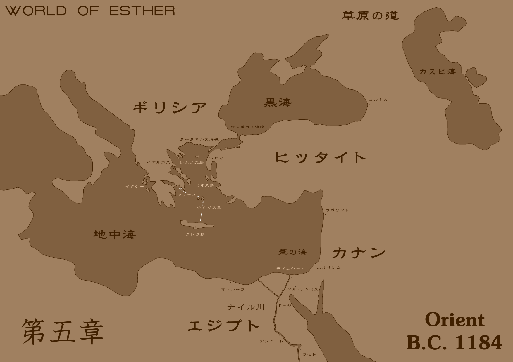
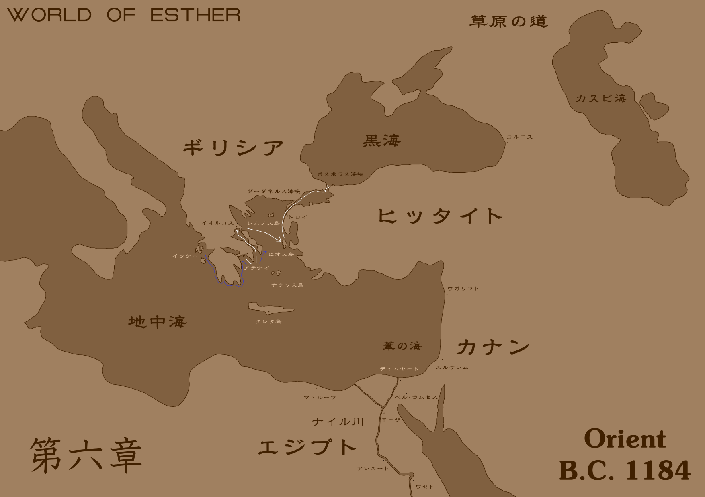
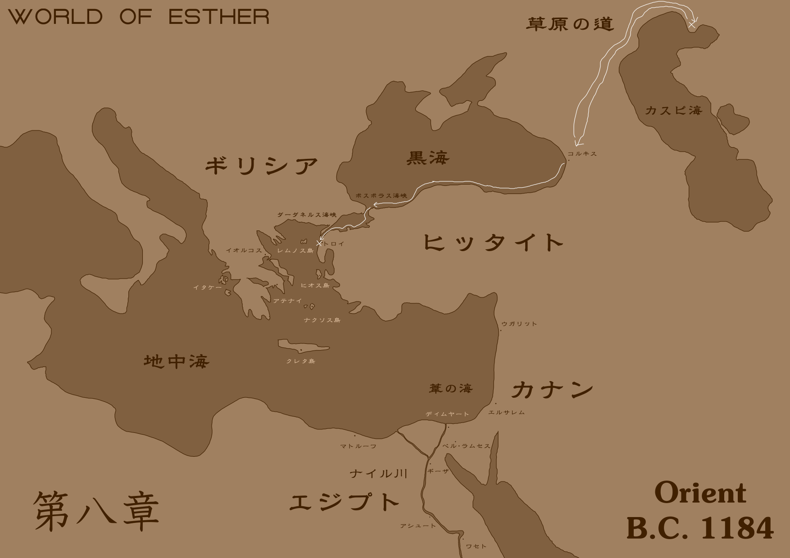
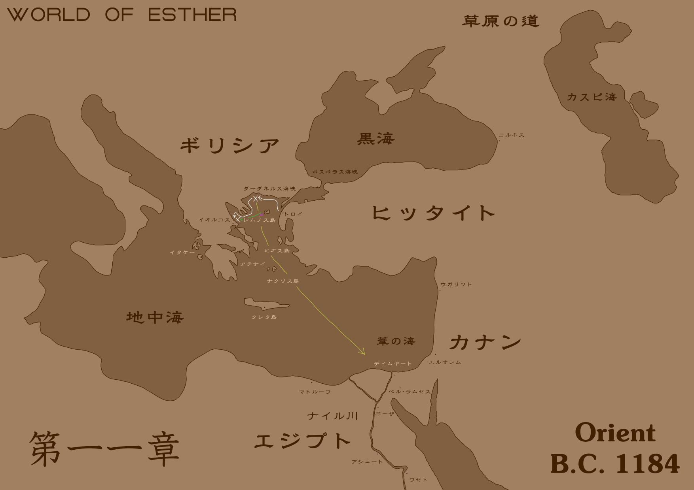
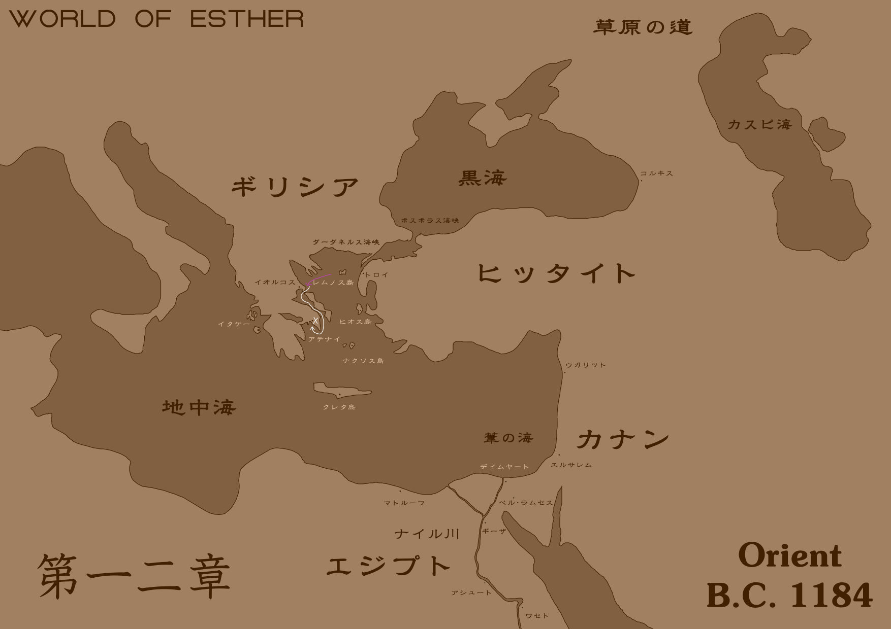
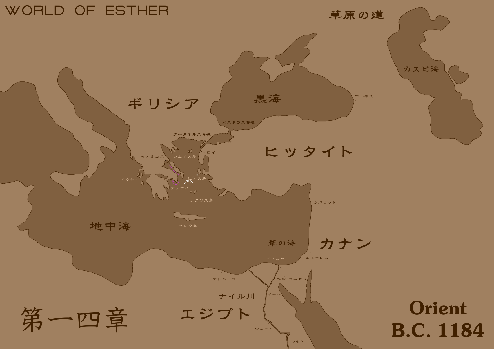
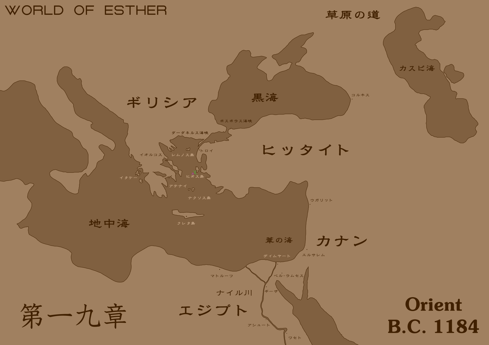

エステル/Esther
- 第1幕
- 第2幕
- 第3幕
- 第4幕
第1章
1かつて神のしるしが世界に及んでいたころ、2まだ天には聖霊がおわし、3まだ地には幻獣があふれ、4まだ人間が野で槍をもって獣を追いまわす蛮人に過ぎなかった時代。5エジプトで首輪と手枷で牢につながれ、奴隷として売買される多くの人々にまじって、ある小さな褐色の少女がいた。
6少女はろくに洗濯もされていない服とも呼べぬ布きれを身につけ、肌は垢にまみれ、髪は痛んでいる。7靴もはかず素足で地を駆けずりまわっているのか脚は泥だらけで、筋肉も脂肪もなく肋骨が浮きあがるほど痩せこけていて、働かせるにも、慰み者にするにもよくなく、買い手もつかずとうとう安売りされている始末である。8だが彼女はほかのなにをとりあげられようとも、ただひとつずいぶん古い枯れた木の杖だけは後生大事に抱えているのである。
9少女は、奴隷である。10商人の利益のために身を売られ、買い手がつけば主人のためにその一生を捧げ、つかなければ処分される。11それにもかかわらず彼女の瞳は勇気にあふれ、たとえ貧しく不幸ではあっても、あきらめや絶望にくじけることはないと思わせた。12姿勢ひとつ見ても、彼女はほかの奴隷とは違う。13抵抗する意思さえ失い脱力する奴隷たちのまえに、毅然とした態度でしっかりと立つ彼女は、まるでかれらの指導者にも見えた。
14商人たちは反乱を防ぐため、面識のない奴隷同士を同じ檻にいれた。15そして売れ残った奴隷のみを新たな檻に移し、もはや売れる見こみのない者は、処分することになっていた。
16若い男の奴隷はよく働くため人気があり、少女や老人はたいてい売れなかった。17彼女も例にもれず、売れ残った者である。18少女は、つぎの週で売れなかった場合、処分される檻に移された。19そのほとんどは少女と老人であった。
20少女が檻に押しいれられたとき、彼女は杖を落としてしまった。21そして杖が地にふれると、なんということだろう、たちまちそれはへびとなり、看守の手に喰らいついたのである！
22倒れた看守を支え、もうひとりの看守が叫んだ。
23「なんだそれは！」
24少女がへびの尾をとると、それは彼女の手のなかで杖となった。
25「こ、これはただの杖です」
26「ただの杖なわけがない。こっちへこい！」
27すると少女は、あろうことか杖を地に投げ、へびとしてふたりめの看守をも襲ったのだ！28杖が変身したへびは少女と阿吽の呼吸で動くことができた。29へびは大蛇となって看守の首をその尾で締め、意識を失わせた。30少女がへびの尾をとると、それはふたたび杖となって彼女の手におさまった。31だが今度は枯れた木の杖ではない。32花が咲き実が生った、活き活きとした若木の杖であった。
33少女はだれにでもなくつぶやいた。
34「はあ、この手は最後まで使わないつもりだったのに」
35彼女が杖をひと振りすると、奴隷たちを拘束していた鎖はたちまち蔓となり、しなびて枯れてしまった。36少女も含め、いま奴隷たちの拘束は解かれた。37杖は神のしるしであった。
38そして彼女は奴隷たちに向いて言った。
39「ついてくるならどうぞ。40ここで戦わなければ、あなたがたは確実に殺されるでしょう。41でも、戦うことは逃げることよりずっと困難な選択です。42戦うことを選んだことを、後悔することもあるでしょう。43わたしは戦います。44でも、あなたがたがどちらを選ぶかは……あなたがたにお任せします」
第2章
1少女と同じ檻にいれられた奴隷たちのうち、半数が残り、半数が少女のあとを追った。2少女はあわせて三〇人余りの奴隷たちを連れ、カナンの地を目指した。3砂漠の昼は過酷なため、日中かれらは眠り、夕から朝にかけてすこしずつ歩いた。4ファラオの目をあざむくため、あえて人間の住まない不毛の大地を選んで進んでいた。
5出発してから陽が沈むのはこれで七度めであった。6行き先の見えない旅に、ついに不平をあげる者もでた。7そこで少女は奴隷たちにふたたび説明した。
8「最初に説明したように、わたしたちが向かっているのは約束の地です。9エジプトからは、葦の海をまたいだ先にあります。10そこまで行けば、わたしたちは安心して暮らすことができます」
11すると奴隷のひとりがこうたずねた、
12「これまでずっとエジプトで暮らしてきたのに、なぜいまになって居を移さねばなりませんか」
13「エジプトの王朝が変わったからです」14少女は博識であった。15「わたしたちの祖先は、もともとカナンの地に住んでいて、イスラエルの子らと呼ばれていました。16ところがそこが飢饉になったので、主がエジプトへ向かえと命じられたのです。17当時のファラオは、わたしたちの祖先を大切な客人として手厚く歓迎してくださり、わたしたちの祖先はそこでの暮らしにさぞ満足していたことだろうと思います。18ところがそれから三〇〇年ほど経った現在、19ファラオはわたしたちを客人ではなく奴隷として酷使し、20そのためモーセさまがイスラエルの子らを連れ、エジプトをでてカナンの地に戻られたのです。21わたしたちは、そのとき残された者どもです。22あなたがたは、エジプトで生まれたためエジプトに住むのが当然と思っているかもしれませんが、23もとはといえばイスラエルの子らであって、24主がわたしたちに与えると約束してくださったカナンの地に住む者どもなのです。25このことはモーセさまの執筆なさった律法を読むなり、識者に読んでいただき拝聴するなりすればわかりますが、26いつファラオの追手がきて眠りこけているあいだに殺されるともわからぬこの状況では、その時間はありません」
27もともとイスラエルの子らはカナンの地に住んでいたが、統治していたわけではない。28しかし神がイスラエルの子らにカナンの地を与えると約束したため、モーセがヨルダン川東岸を占領し、モーセの死後、ヨシュアが神に任ぜられ、ヨルダン川西岸、エルサレムの攻略にあたっていた。
29少女と奴隷たちは葦の海に沿って、大きく迂回してカナンの地を目指していた。30モーセはこの葦の海を割り、ファラオの軍勢を置いてカナンの地へ向かったのである。31少女がもっている杖はしるしの杖という、モーセが神のしるしを見せるために使った祝福された杖である。だが彼女自身は神に祝福されていないため、杖だけではモーセほどの奇跡を起こす力はなく、海を割ることはできなかった。
32葦の海に、数隻の船団が浮かんでいた。33奴隷たちは単にそれが商船かと思って気にしていなかったのだが、博識な少女にすればその帆の紋様は、海の民と呼ばれる略奪を生業とする集団のそれであることがひと目見て明らかであった。
34「茂みに隠れて！」
35少女が奴隷たちに合図したのだが、そうはいってもなんの訓練も受けていない奴隷たちに、いきなりそんな巧みなことは無理である。頭隠して尻隠さずとはよく言ったもので、奴隷たちはぜんぜん隠れられていなかった。
36目視で一行を確認した海の民の船長は、風で果物が木から落ちてきたみたいな顔をして舵をきった。37かれらからすれば、三〇人もの奴隷を売ればそれなりの儲けになるのであるから、抵抗する力のないかれらをさらうことは易い商売であった。
38海の民の船が一隻、また一隻と岸につき、人さらいを目的とした海賊たちが上陸を始めた。39少女はしるしの杖をぼろぼろの枯れた木に戻した。
40ここまでくれば奴隷たちも事態の緊急性に気づき慌てふためくが、少女がそれをいさめた。
41「おそれないでください。あなたがたには健康な手足があるでしょう。それは友にさしのべ、家畜を育て畑を耕し、そして敵をうちくだくために与えられたものです」
42海の民の船長が少女のまえに立って、ふたりは代表として交渉した。
43「その身なりを見るに、きみたちはエジプトの奴隷の身分だね？」
44「はい、そのとおりです」
45「このあたりがわれわれの縄張りだということは、ファラオに通告してある。つまりきみたちがここにいることは条約違反であり、したがって、きみたちの所有権はわれわれに帰属することとなる。これはファラオとのとりきめで決まっていることだ。わかるね？」
46「はい、わかります」
47「聞きわけがよくてよろしい！では、船に乗ってくれたまえ。法に則り、正式にきみたちを連行しよう。『穏便に』ね」
48「わたしたちはそれに従う必要がありません。なぜならここであなたがたをうちまかし、実力で不服を示すからです」
49少女の杖に、花が咲き実が生った。50しるしの顕現である。51杖は大蛇となり、船長を襲った。52だがかれはさすが歴戦の勇士であって、大蛇の攻撃をいとも簡単に剣でかわしてしまった。
53海の民の船員たちが一斉に奴隷たちになだれこみ、縄でかれらを縛った。54だが少女が杖をひと振りすると、それらの縄はたちまちへびに変わり、とぐろとなって背き、船員たちを襲ったのだ！
55「貴様、何者だ！」
56剣の舞いを杖でさばく少女に、船長が叫んだ。
57「エステル。あなたが最後に聞く名前」
58少女の杖が変身した大蛇が、船長の喉に噛みついた！59神経を麻痺させる猛毒であり、かれは白目を剥いて昏倒した。
60へびに巻きつかれた船員たちにも、もはや戦意はなかった。61へびはもとの縄に戻り、うってかわって海の民の船員たちを拘束した。
62こうして少女、エステルと彼女が導く奴隷たちは海の民との戦いに勝利し、またかれらの船を一隻頂戴した。63船には海の民がさらった奴隷たちが多数乗せられていて、エステルはかれらをも解放し総勢三〇〇人ともなっていよいよ葦の海を渡り、約束の地、カナンを目指すこととなった。
第3章
1さて、エステルたちを乗せた船が発ってから三日めの夜、月は陰り、雲行きがあやしく、嵐が迫っていた。2波はいっそう強くなり、いまにも船を飲みこまんばかりにうねっていた。3それは単なる雨風ではなかった。4エステルは海の底に、巨大な海蛇の影を見たのである。
5「敵に備えてください！大きな海蛇が船を欲しています！」
6エステルが叫んだ。すると奴隷たちは槍をとって甲板に揃った。
7海中で、太く長いものがうねうねと蛇行し、船の周囲をぐるりと幾重にもとりかこんでいた。8たった一匹の巨大なへびが、一筆書きでもって記した書物のように海に文字を描いていた。9エステルは船の端で身をのりだし、そのなにかを見つめて恐怖していた。
10巨大な海蛇の尾が左舷から、腹が右舷から徐々にもちあがり、甲板でとぐろを巻いて帆柱をのぼり、帆を掴んでついに尾の先が見張り台まで届いた。11それでもなお海蛇の頭すら見えず、その全体は想像に及ばない。ただすくなくとも、たとえ三〇〇人の奴隷をまるのみしても満腹にはならないような大きさであることは明らかである。
12それを見て褐色の少女は息を飲みこうつぶやいた、
13「創世記一・二一、主が創られた海の大いなる獣……律法の記述どおりだ」
14やがて獣は動きをとめ、静寂が訪れた。15エステルはこう言った、
16「みんな、まだ戦わないでください。勝ち目はありません。17あの獣はわたしたちを探っているだけ。敵意はありません」
18「どうしてそんなことがわかります」
19「わかるわけじゃありません……そう思わないと絶望しちゃうだけ」
20そのとき雷の轟にも似たけたたましい笑い声が海に広がった。21水しぶきをあげて船の目前に姿を現したのはあの巨大な海蛇の、頭部であった。
22海の巨獣は言った、
23「勇ましい女だ、名はなんと言う」
24「エステル。あなたは？」
25「〈うずをまくもの〉、そう呼ばれておる」
26「〈うずをまくもの〉……あなたはわたしたちをどうするつもりですか？」
27「おぬしの勘づいたとおり、探っておるのだ。おぬしのもつその杖、それはただものではない。どこで手にいれたのだ？」
28「授かったものです」
29「ふしぎなこともあるものだ。それは契約の箱におさめられていたはず」
30「……なぜそんなことを知っているのですか？」
31「われは悪魔だ。神が天地を創造した五日めよりすべてを見てきた。おぬしのちっぽけな身体におさまらぬほどの知識を蓄えておるわ。それよりおぬしがその杖をもっている理由を説明せねば、われはもうおぬしに用はない、この船を渦にまいて沈め、腹の足しにするまでよ」
32「……どうやら、うそをついてもむだのようですね。33モーセが契約の箱にしるしの杖をおさめたあと、理由はわかりかねますがそれは失われ、長いあいだエジプトにあったのです。34ところがわたしはある日、偶然これを見つけました。35この杖の起こす奇跡を垣間見て、わたしはこれが律法にあるしるしの杖と確信したのです。36民数記によれば、これは契約の箱におさめられるべきものです。37ゆえにわたしは、これを契約の箱に戻すため、この船で葦の海を渡って約束の地を目指すものです」
38「なるほど。つまりわれがおぬしをここで沈めてしまえば、しるしの杖は永遠に失われ、二度と戻らないことになるな」
39「そうなっては困ります。この杖は契約の箱になければならないものなのです。わたしはあなたと戦いたくはありません。見逃してください」
40「そうはいかぬ。悪魔にとって、奇跡を起こす杖が失われれば好都合なのだ。このまま船ごと沈み、暗い海の底で未来永劫眠るがよい」
41そして〈うずをまくもの〉が海中に潜って尾をまくと、船の前方に巨大な渦潮ができ、船を飲みこまんと吸い寄せたのである。
42エステルはため息をついた。43もともと彼女はしるしの杖を契約の箱に戻すために約束の地へ向かうことを決意したまでであり、奇跡の力を軽率に使うつもりはなかったし、けっして奴隷を解放したり正義を為そうというつもりではないのである。44ところが杖をもつがゆえに弱者に頼られ、災難に見舞われ、奇跡を使わざるを得ない状況に追いこまれていることに、彼女は辟易していた。
45彼女が杖を掲げると、それに花が咲き、実が生った。46そして彼女がそれをひと振りすると、雨風はやんで嵐は過ぎ、渦はぱたりと消えてしまった。47神のしるしである。
48「奇跡の力で渦をとめたか。だが、ならばわれみずから沈めるまでよ」
49〈うずをまくもの〉の尾が船にからみつき、人知を超えた力でもってしめつけたのである。50木製の船はきしみ、割れ、いとも簡単に崩れた。
51奴隷たちはエステルに訴えた、
52「ああエステルさま、またあの奇跡の力でわたくしどもをお救いください」
53少女は杖を振った。54すると荒波が凍って壁をなし、巨獣の追撃を防いだ。だがそれで倒せる相手ではない。55エステルはさらなる被害を防ぐため、杖を振って海面を凍てつかせ氷の道とし、奴隷たちのために逃げ道をつくったのだ。
56「奇跡の力にも限度がある。悪魔はそう簡単には倒せない。いまできるのは逃げることだけ。わたしには、ここまでしかできない……」
57こうしてエステルを始め奴隷たちは氷の道によって海を渡った。58だが約束の地の方角には〈うずをまくもの〉がいたため、当初の目的地からずいぶん異なる場所に向かっていた。
59一五日かけて一行がたどりついたのはギリシアのクレタ島であった。60そこはミノスという王が統治していた。
61エステルたちは一五日もまともな食事もまともな寝床もなく、奴隷の数は一〇〇人にまで減っていた。62そんなかれらを出迎えたのはドリュアスというふしぎな木の精霊であった。63美しい娘の姿をしているものの人間ではなく植物で、エステルたちが浜辺で疲れきって倒れているところを助け、そればかりか丁重にもてなしてくれたのである。
第4章
1クレタ島の海岸はさらさらの砂浜と豊かな木々が印象的で、海のほうではつむじ風に乗ってハルピュイアという怪鳥が飛びまわっていた。2エジプトのような砂漠とは違い、いのちに恵まれた大地で育ったドリュアスたちは優しく、異邦人にも友好的であった。ドリュアスたちはハルピュイアは狂暴なのでけして近づいてはならないと忠告し、エステルたちに透き通った水と食物を与えた。3エステルは南北に伸びる崖を背にして、木々の精霊たちに感謝の言葉を述べた。
4「ありがとうございます。なんとお礼をしたらいいことやら」
5そのとき崖のうえ、エステルの背後上方から少女の大声がした。
6「見つけたわ！あなたたちが侵入者ね！」
7エステルはたくさん食べて回復し、とっさに杖をもって飛びのき、崖のうえを見た。8そこには真っ赤に燃える髪を揺らす、深い緑色の目をした少女が自信満々に腕を組んでいた。9彼女の背丈はエステルよりずいぶん低く、子どもそのものであった。
10エステルは聞きかえした、「あなたはだれですか」
11「頭が高い！ひれふせ！12わたしはクレタ王ミノスの娘、すなわちクレタ島の王女、アリアドネ。13おまえたちのような不潔な褐色人種とはわけが違うのだ！とう！」
14アリアドネは崖から華麗に飛び降り、舞う姿はまるで女神のようであった……着地はうまくいかなかったが。
15「こけた……」エステルは突拍子もない登場にぽかんとしてしまった。
16「いてて……」彼女は立ちあがって砂を払いのけ、真っ赤になって怒鳴った。「み、みなかったことにしなさい！と、とにかく、この島に不法侵入者がいるという事実は、お父さまに報告するわ。いいこと？いまに八つ裂きにされてもしらないんだから！」
17「だったら戦うまでです。あなたひとりでできることがありますか！」
18エステルが杖をかまえ、ならって奴隷たちも槍をもったとき、遠方から一隻の船がクレタ島に近づいていた。19クレタ島の船ではなく、掲げる旗はアテナイのそれであった。
20「わあ！あ、あれはアテナイの船！」アリアドネは驚き指で丸をつくってそれを見た。「あ、あなた、ちょっと待ちなさい。緊急事態よ。わたしたちが争っている場合ではないわ」
21エステルはあきれた。
22「いいわ。教えてあげる。あれはミノタウロスのための生贄を乗せた船よ」
23「なにも聞いてませんけど」
24「いいから黙って聞きなさい。むかしアテナイ人はお兄さまを殺し、お父さまはそれに怒って報復として、アテナイを大勢で攻撃したの。それ以来アテナイ人は償いとして、ああして九年にいちど、七人の若者と七人の乙女の貢物を献上することになっているのよ」
25「ふうん。興味ないですけど」
26「もったいない！いいこと？これはお祭りよ。わたしはいまから生贄たちがミノタウロスに踏みつぶされるところを見てくるから、あなたたちはここで待っていなさい！ぜったいぜったい、ぜーったい、逃げちゃだめなのよ！」
27そう言うとアリアドネはさっさとその場から去っていなくなってしまった。
28「なんなんだろう、あの子……待っているわけないのに」
29するとドリュアスのひとりがこう提案した、
30「とはいえクレタ島から帰るには船が必要です。あの船はいずれアテナイへ戻る。こっそり乗られては？」
31「それもそうですね。ありがとうございます！」
32しかしドリュアスたちのもてなしはただではなかった、いくらかの少年の奴隷がこう言うようになった。
33「エステルさま、ぼくたちはここに残ります。エジプトからでたことを後悔しているのです。旅は危険で大変です。居をかまえ、冒険などせず、平凡に過ごすのがいちばんなのです。ぼくたちはここでドリュアスと一緒に暮らします」
34エステルは、止めなかった。かれらの選択を尊重するがゆえに。
35エステルたちは崖のすきまを縫ってのぼり、高いところからドリュアスの森を見た。36さきほど残った者は残らず骨となって木々の根にうずまっていた。37ドリュアスたちは男子を誘惑し、とりことすることで、養分としてしまったのである。
38こうしていよいよエステル一行は七七人となってしまった。
39エステルたちはクレタ島からアテナイ行きの船に乗るため、ミノタウロスに生贄が捧げられるお祭りをこっそり木陰から見つめていた。40そこにはあのアリアドネもいて、わくわくしているようであった。
41アテナイからの船から七人の少年と七人の少女の生贄が降りてきて、クレタ人たちにせっつかれていた。42そのなかで、ひときわ存在感を放つ美男子がいた。43アテナイの王子、テセウスである。
44テセウスはアテナイの王アイゲウスの私生児であり、父は世間からかれの存在をひた隠しにしてきた。45だがかれは齢一六にして自分がアテナイの王子であることを証明し、アテナイの王座を継ぐためにミノタウロス退治を買ってでたのである。
46テセウスをはじめ生贄たちは、クノッソスの迷宮でミノタウロスとの決闘に臨んだ。47いちど入れば二度とでることはできないといわれる迷宮である。48もっとも、ミノタウロスには人間など束になっても勝てるはずがない。49そんななか、アテナイの王子テセウスはこう宣言したのである。
50「この決闘で戦うのは、私ひとりでじゅうぶんだ。51もし私が勝利したなら、残りの六人の少年と七人の少女は解放してくれ。52もしそうではなく私が敗北したなら、そのときは好きにするがいい」
53こうしてテセウスは人間が団結してもかなわない牛の怪獣ミノタウロスにたったひとりで挑むこととなったのである。54観客を楽しませるために与えられたテセウスの装備は、樫の木の盾と青銅のつるぎであった。
54ミノタウロスは体長にしてテセウスより三倍、体重にしておそらく十倍あろうかという巨獣であった。55そのうえ鎖帷子と鋼の鎧を身につけている。55そんなミノタウロスの突撃を、テセウスはすんでのところで樫の木の盾でしのいだ。
56今度はテセウスの反撃である。青銅のつるぎが、ミノタウロスの鎧のすきまを突いた！だが、下地となっている鎖帷子に防がれてしまった。
57そのときつるぎが帷子にからめとられ、わずかな隙が生まれた。ミノタウロスの突撃が樫の木の盾をくだき、つるぎが手から離れて跳ねる！テセウスは左腕で猛牛の突進を防いだが、もう使いものにならないことは明らかであった。
58テセウスはうめき、倒れてしまった。勝負は決まったかに思われた。
59だがかれはミノタウロスの続けざまの攻撃をくるりと回転してかわし、その瞬間つるぎをとって立ちあがり、体勢をもちなおしたのである！
60ふつうの人間なら、ミノタウロスの一撃を喰らえば二度と立てはしない。61まだ勝負はついていないとはいえ、たったひとりでここまでの戦いぶりを見せるかれの姿を見て、クレタ島の王女アリアドネはだんだんと胸をときめかせ、ほのかな恋心を感じつつあった。
62ミノタウロスが突進をすると、テセウスの姿が、消えた。63いや、そうではない。かれは飛びあがり、太陽のなかに隠れていたのである。64落下するかれは体重をあわせて、兜と鎧のすきまから青銅のつるぎをミノタウロスの首につきたてたのだ！
65ミノタウロスは金切り声をあげ、倒れた。66その瞬間、敵も味方も問わず、自然と周りから拍手があふれたのだ！
67アリアドネはふと、左手を見た。68薬指から赤い糸が伸びている。69それはテセウスの左手の薬指まで伸びていた。70その糸はクノッソスの迷宮の出口まで続いていた。71それはいちど入れば二度と出ることのできない迷宮ではあったが、ふたりの指をつなぐ赤い糸のおかげで、テセウスは迷宮から脱出することができた。
72クノッソスの迷宮のそとで、ふたりは出逢い、初めて言葉を交わした。73そのときアリアドネはテセウスに恋の告白をし、妻にしてほしいとせがんだ。74こうしてテセウスは晴れてアテナイに戻った暁にはアリアドネを妻にすると約束したのであった。
第5章
1テセウスはミノタウロスを退治したあと、船にアリアドネを乗せてアテナイへと舵を切った。2このとき、エステルたちもこっそりその船に乗ったのである。
3クレタ島からアテナイまでは船で五日の距離であった。4そのあいだ、エステルたちはうまく積荷にまぎれて隠れることができていた。
5クレタ島を発って三日めの朝、ナクソス島で、婚約したはずのテセウスとアリアドネが口論していた。6エステルは野次馬気分でそれを覗いていた。
7テセウスがこう叫んだ、「そなたの正体がドリュアスだと最初から知っていれば、婚約などしなかった！8ドリュアスは男子を誘惑し、とりことし、森に還して糧とするという。9そなたもそのために私を誘惑したのであろう！」
10アリアドネは弁解した、「そんな、たしかにわたしはドリュアスだけど、あなたへのきもちは本物なのよ！そんなつもりは……」
11「ええい、言いわけなど聞きたくない。婚約は解消だ。そして男子を誘惑した罪のため、そなたをここ、ナクソス島に島流しとする」
12そのとき、それを盗み聞きしていたエステルが驚いて棚に置いてあったつぼを落として割ってしまったため、テセウスは彼女の存在に気づき、つまみあげてアリアドネとともに並べた。
13テセウスはエステルに言った、「アテナイを出港したとき、この船に褐色人種は乗っていなかった。そなたは密航者であろう。そなたもまた、アリアドネ、そしておそらくほかにもいるであろう密航者とともに、ナクソス島に島流しとする！」
14こうしてエステルとアリアドネ、そして奴隷たちはナクソス島で降ろされ、途方に暮れることとなってしまった。
15アリアドネはエステルなど気にもとめずぷんぷんしていた。「まったくあのひとったら！婚約破棄ですって！そのうえこんな島に置いてきぼりにして……」
16「まあまあ、どうせ出逢って三日のひとと結婚するなんて、そもそもまちがっていたのよ。そう思って忘れなさい。それより、これから先のことを考えましょう。わたしたちはアテナイからヒッタイトのほうにでて陸路でカナンの地へ向かうつもりです。あなたは？」
17「さあ。クレタ島が敵対しているアテナイの王子と婚約なんてしたからもうお父さまのところへは帰れないし、かといって婚約も破棄されてしまったし……」
18「じゃあ、わたしたちと一緒にきませんか？あなたはイスラエルの子ではありませんが、主は慈しみ深いお方です、客人とあれば歓迎してくれるでしょう」
19「……なんだか楽しそう。それにわたし、ギリシアだけじゃなくて、世界のあちこちを見てみたいの。だから、あなたについていくことにするわ」
20こうしてアリアドネはエステルの一行に加わったのである。
21さて、エステルとアリアドネ、そして七七人の奴隷たちはナクソス島からアテナイへ向かう方法をああでもこうでもないと話しあい、しびれをきらしたアリアドネがドリュアスとしての力を使った。22するとナクソス島の森がいままさに動き始め、木々の一本一本が歩行して海の底に足をつけ、歩いたのである。23ナクソス島の巨木は、そのそれぞれが背の高いものであったから、海底を歩いてもなお、葉のついている傘の部分は海上にでたままになっていた。24アリアドネが言った。
25「かれらに乗って行きましょう。二、三日もすればアテナイに着くはずよ」
26こうしてエステルとアリアドネ、そして七七人の奴隷たちは、歩く木々の肩に乗って海を渡ったのである。
27その一方アテナイで、テセウスはアテナイ王アイゲウスに無理難題を求められていた。
28「おぬしがミノタウロスを退治してきたということはわかった。29だが、それだけではまだおぬしが余の息子であるという証明にはならない。30もしおぬしが本当に余の息子であるならば、イオルコスの王子イアソンが乗って今度出港するアルゴー船に乗って、その武勇でもって見事金羊毛をもちかえることができるはずだ」
31こうしてテセウスはイオルコスへ向かい、アルゴー船に乗って金羊毛をもちかえることとなった。
32エステルとアリアドネがアテナイに着いたとき、すでにテセウスはイオルコスへ発ったあとであった。33そこでアリアドネはテセウスが金羊毛を求めてコルキスへ向かうつもりであることを知り、青ざめてしまった。
34「コルキスにはメデイアというおそろしい魔女が住んでいるのよ。彼女はアテナイを支配するため、アテナイ王に盲信の毒を盛って操っているんだわ。魔女の薬草の術は強力よ。それでアテナイ王はすっかり魔法にかかってしまって、テセウスのこともぜんぜん覚えていないのよ！裏を返せばメデイアはテセウスをおそれているのよ。かれが王位を継承し、アテナイを魔女の支配から解放することをおそれているんだわ。そんな彼女がいるコルキスにかれが行けば、やれしめたとばかりに、かれは殺されてしまうでしょう！」
35エステルはそのことに興味を示さなかった。なぜなら彼女の目的はひたすら約束の地へ向かうことであり、テセウスをメデイアから救うことではないからである。
36アリアドネはテセウスにナクソス島に置きざりにされてもなお、かれに恋していた。37そのため、彼女はエステルに助けを求めたのである。「お願い、かれをメデイアから救うため力を貸して！」
38「なんでわたしが。そういうことはあなただけでしてください。華奢でちんちくりんの白人男子のために働くなんて、まっぴらごめんです」
39ところがそこにアテナイの兵たちがやってきて、七七人の奴隷とエステルを捕縛したのである。
40兵は奴隷たちにたずねた、「おまえたちはエジプトの間者か」
41エステルは答えた。「いいえ、そうではありません。むしろ、エジプトから逃れてここまできたのです」
42「難民というわけか。いずれにせよ、密入国者を放っておくわけにはいかぬ。おまえたちはエジプトへ送還する」
43アリアドネはしめしめといった顔で言った。「良い気味よ、テセウスのことを悪く言うからそうなるんだわ」
44エステルは彼女を罵った。「この裏切り者！あなたが密告したんですね！」
45「クレタ人はうそつきなのよ」
46エステルは兵に連行され、アテナイ王のいる玉座の間でひざまずいた。そこでアテナイ王は言った、
47「おぬしらを見逃すわけにはいかぬ。だがもし、おぬしらがエジプトからきた目的を話せば考えぬこともない」
48この時代において地中海近辺でもっとも軍事的に強力で、経済的に豊かな国はエジプトであり、その影響力はギリシアにも及んでいた。49アテナイ王はエジプトに対抗するための方法を模索していたのである。
50そこでエステルはすばらしい弁舌を見せた、
51「アテナイ王アイゲウス、あなたが最近になって現れた王子を名乗る卑人にほとほと困っていることは知っています。52そしてかれを任務といって危険な場所に送りこんでいることも。53そこでどうでしょう、わたしがコルキスまでテセウスを追いかけて殺してしまいましょう。54その代わり、わたしたちがアテナイの地を踏むことをお認めください」
55するとアイゲウスは満足そうに答えた、「よろしい。しかし解放するのはおぬしひとりだけだ。残り七七人は契約の担保としてもらっておく。おぬしが約束を果たしたとき晴れてかれらを解放し、余もまたおぬしと同じく約束を果たそうぞ」
56アテナイ王の命令でテセウスが殺されたとあっては民衆の支持を失いかねないため、かれがテセウスを殺すに殺せないことを、エステルは見抜いていた。そこで彼女がテセウスを殺せばアテナイ王に嫌疑がかかることはないから、彼女はそれを交渉の材料にし、見事そのもくろみは成功したのである。こうしてエステルだけが解放され、残り七七人のイスラエルの子らはアテナイで捕虜となった。57宮殿のまえの堀を渡す橋のうえで、アリアドネがつまらなそうに腕を組んで壁に背を預け、つまさきで石橋を叩いていた。
58「ふうん。あなたがテセウスを殺しに行くの。おもしろくないわ」
59「いいえ。メデイアを倒し、アテナイ王にかけられた魔法を解くのです。60そうすればかれはテセウスを王子と認め、わたしたちのこともきっと認めてくださるはずです。61アリアドネ、少々不本意ですがどうやらわたしはテセウスを助けなければならないようです。62状況が変わったため、お互いさきほどの対立は忘れましょう。どうです。あなたも一緒にきますか？」
63「ええ、もちろん」
64こうしてエステルとアリアドネはともにコルキスへ向かったテセウスを追いかけ、メデイアの姦計からかれを救うためアテナイを発ったのである。
第6章
1エステルとアリアドネがアテナイを発つとき、西からイタケーの王オデュッセウスが率いる大艦隊がトロイへ向かって歩を進めていた。それらの船にはアキレスも乗っていた。
2アリアドネいわく、「トロイの王子パリスは絶世の美女ヘレネに片思いをしたため、彼女を誘拐して幽閉してしまったのよ。3ヘレネは地上でだれよりも美しいともいわれる女性だから無理もないわ。4それでギリシアでもっとも偉大な王、王のなかの王、ミケーネ王アガメムノン大王が全ギリシアの王を率いてトロイを裁くために連合軍を組織したのよ。5もう九年まえのこと。それからずっと、ギリシア連合軍とトロイは戦争を続けているんだわ。これで一〇度めの遠征よ。6あれは発明家としても有名な賢者、イタケーの王オデュッセウスの旗よ。かれはトロイでの戦争に終止符を打つため、まだだれにも秘密の新兵器を開発したんだわ。7オデュッセウスの艦隊だけで百隻もあるのに、トロイに集結している連合軍の船は千隻以上もあるといわれているわ」
8「ふうん。あんまり興味ないですけど」
9「あのねえ！アガメムノン大王は、あの軍事大国エジプトのファラオにも肩を並べるほどの偉大な王さまなのよ！」
10「ファラオ……」するとエステルはわなわなと肩をふるわせた。「アリアドネ、わたしはかれを称賛するような言葉は聞きたくありません」
11「称賛なんてしてないわよ。でもね、客観的に考えてもかれをしのぐ王なんて、この世界には……」
12そのときのエステルの歯をきしませ、怒りを抑える表情は、アリアドネが恐怖を覚えるほどであった。
13「……いまの言葉は、忘れましょう」エステルは平静をとりもどして続けた。「さて、まずは船を見つけなければ」
14「ま、まって！あなた、エジプトでなにがあったの……？」
15「あなたに話す必要はありません」
16エステルとアリアドネはアテナイ王の助けもあって船を見繕い、海路でテセウスを追いかけた。このとき、かれらはいったんイオルコスを経由し、そこからコルキスへ向かうこととなった。17船のうえでもエステルは、アリアドネに故郷のことをなにひとつ話そうとしなかった。ただ彼女はずっと甲板の端であごに手をつき海を眺め物思いにふけっていた。18彼女は当時のことを思いだしていた。
19エステルはエジプトで奴隷の両親のあいだに生まれた。20エジプトの人々はエステルのようなヘブライ人を奴隷として酷使し、彼女のそこでの暮らしは劣悪きわまりないものであった。21年老いたり病気になったりして働けなくなった者にさしのべられる手はなく、22傷を負っても手当てされることもなく、23働けなくなって捨てられ、飢えて苦しみ、骨だけになるまで痩せてから死ぬ知りあいも、24傷口に虫が入ってみるみる衰弱し、やがてひとことも発すことがないようになってゆっくりと死ぬ友人もいた。25死者すら葬られず、肉が腐って蛆がわき、蝿がたかり、犬が貪って骨も残らなかった。26だから彼女はファラオを恨んでいた。
27そんなエステルにとっての唯一の救いは、モーセが律法に書いて説いたという、神がイスラエルの子らに与えると約束したカナンの地の話であった。28当時彼女はまだ文字を読むことはできなかったし、奴隷のほとんどもまた文字を読むことなどとうていできなかったが、律法の内容は口伝で伝わっていた。29だから彼女はモーセの教えをより正確に理解するため、文字を学び、律法を読んだのである。
30彼女がしるしの杖を見つけたのは偶然ではない。31律法を読み、日々節度を保って善行に励み、毎日神への祝祷を捧げる彼女に、神が天啓を示したのである。32エジプトで失われたしるしの杖を見つけ、それを契約の箱に戻すようにと。
33「……でも、主はわたしを祝福してくださらなかった」34彼女は悲しみ、ため息をついた。35「あれっきりなんの言葉もくださらない。36主は具体的な旅路も示されず、かといって艱難にさらされようと、ちっとも助けてくださらない。37ああ、主よ、あなたはわたしをためされているのでしょうか……」
38アリアドネはきょとんとした、「なんの話？」
39「……いいえ。ごめんなさい」
40エステルたちの乗った船はアテナイのものであった。それはエステルの監視も兼ねていたのである。
41出発から一週間ほど経って、エステルたちを乗せた船はいちど、ヒオス島へ寄った。42そこでかれらはアルゴー船に乗っていたはずのヘラクレスに出逢った。43かれは従者の美少年ヒュラスがこの島で行方不明になったため、かれを捜索していたのである。
44「ヒュラスが見つかったら教えてくれ」ヘラクレスはアリアドネがクレタ島の王女と名乗ったため信頼し、そう頼んだ。
45エステルとアリアドネはその島での休息中偶然ヒュラスを発見したのだが、かれはすでに泉の精霊ナイアスと恋をしていたため、ヘラクレスに連れもどされることをおそれ、ヘラクレスには秘密にするよう頼んだ。ふたりは悩んだが、ヘラクレスには告げないことを選んだ。
46ところでナイアスの泉の水には治癒の力があり、ナイアスたちはエステルに言った。「もし戦いに疲れ、癒しを求めることがあれば、いつでもいらっしゃい。どんな傷でもわたしたちの泉の水を飲めばたちまちのうちに癒えることでしょう」そこでかれらは泉の水をありがたくいただき、長旅の疲れを癒した。
47ナイアスの泉の水の効用は人間を釣るための餌であり、その力に魅せられて泉に飛びこんだ者を溺死させて養分とするのである。48だがアリアドネは木の精霊ドリュアスとして泉の精霊ナイアスとは近縁なため、ナイアスの真の目的を悟っており、エステルに忠告した。「エステル、ナイアスの泉の水を飲んで傷を癒すのはかまわないけど、けっして誘惑に負けて泉に入ってはいけないわ。そのときあなたは骨となって泉の底に沈んでいることでしょう」
49ところでテセウスはイオルコスで、かの国の王子イアソンとともにアルゴー船によってコルキスへ向かったのだが、その途中、ボスポラス海峡で立ち往生していた。50それはヒッタイトの西方、黒海と地中海を隔てる位置にある。51その海峡はとても狭く、船で通るのに難儀したのだ。52そんなときボスポラス海峡に住まうハルピュイアの群れが現れ、アルゴー船を襲ったのである！
53ハルピュイアのひとりがこう名乗った、「わが名は〈疾風〉！疾風のアエロだ！」
54またハルピュイアのひとりがこう叫んだ、「わが名は〈早駆け〉！早駆けのオキュペテだ！」
55ふたりは双子のハルピュイアであり、その抜群に息のあった連携攻撃は比類なきものであった。
56疾風のアエロと早駆けのオキュペテ率いるハルピュイアの群れは上空から槍を投げ弓を射ってアルゴー船を襲撃した。57空を飛ぶことのできない人間の戦士たちの槍はむなしく空をかき、矢はたよりなく的を外し、抵抗もままならぬままアルゴー船はついに沈没寸前まで追い詰められてしまった。
58そこへ追いついたエステルたちは、ハルピュイアに襲撃され、なすすべのないアルゴー船に遭遇する。59そこでアリアドネがまっさきに言った、
60「あれはハルピュイア！粗暴で不潔、下品で最低なやつらよ！」
61「クレタ島のドリュアスもそう言っていました」
62「ドリュアスはハルピュイアと仲が悪いの。でも、やつらの実力は本物よ。翼をもたぬ者がハルピュイアと戦っても勝ち目はないわ。だって、わたしたちの武器はかれらに届かないもの」
63エステルは杖を振った。花が咲いて実が生り、エステルとアリアドネの腰に真っ白な翼をもたらした。神のしるしである。
64「いま、わたしたちには翼があります。さあ、やつらと戦いましょう」
65こうしてエステルとアリアドネは空を飛んでハルピュイアに戦いを挑んだ。
66アエロかオキュペテのどちらかが言った、「鳥でもハルピュイアでもなく空を飛ぶとは、さては曲者だな、名を名乗れ！」
67「わたしはエステル。あなたがたを倒す者よ」
68「ハルピュイアに名乗る名などないわ。わたしはアリアドネ。覚えておきなさい」
69エステルは思わず息が詰まって墜落しそうになった。「ひとことで矛盾したこと言って笑わせないで」
70アエロかオキュペテのどちらかが言った、「われらは双子。どちらがアエロでどちらがオキュペテかわかるまい。わが名は疾風のアエロ」
71エステルは空中でずっこけそうになった。
72「そしてわが名は早駆けのオキュペテ！ふたり揃ったわれらにかかれば地中海最強の海神ポセイドンさえ狩れるのだ！」
73「まって。消去法でわたしがツッコミしなきゃいけないようですが？」
74アエロがエステルを完全に無視して言った、「アリアドネ、おまえはドリュアスだな。臭いでわかる」
75続いてオキュペテが言った、「腐った土の臭いだ。汚い虫のうろつく泥に根をおろし、死肉を分解して食み暮らす下賤な世界の植物だ」
76「なんですって！おまえたちこそ腐肉を無作法に食い荒らし、無断でわたしたちの森に巣を造り、他者の頭上を汚物をまきちらして飛びまわる、最低最悪の幻獣にちがいないわ！」
77アリアドネは双子のハルピュイアの挑発にまんまと乗ってしまい、あっという間にふたりの連携攻撃のまえに翼をもがれて海に落ちてしまった。彼女のドリュアスの力は木のないところでは無意味なのである。
78アエロとオキュペテが声をあわせて言った、79「さあ」80「あとはおまえだけだ」81「たったひとりではわれらにかなうまい」
82エステルは杖を振って奇跡を起こした。するとかれらの頭上に雲が集まって層をなし、雨を降らせたかと思えば冷えて雹となり、天から降る氷の槍が雨となってアエロとオキュペテを襲った。83だがふたりは羽ばたき、槍のあいだを縫って完璧に見切ってしまった。
84「空のわれらに隙なし」85「ふたり揃ったわれらに敵なし」86「おまえはただの人間ではないようだが、所詮は人間。海で溺れて死ぬがいい」
87ふたりが息をあわせて飛びまわると、エステルはこちらを立てればあちらが立たず、一方を見ても他方が視界に入らず戦いにならなかった。88アエロの突進を防げばオキュペテの蹴りがみぞおちに入り、オキュペテの刺突をかわせばアエロがエステルの腕をかぎ爪でがっしり掴んで投げとばした。
89エステルはふたりの攻撃をしのぐことで精一杯であったが、ひとりでは勝負にならないと判断し、海でぷかぷか浮かんでいるアリアドネに叫んだ。90「アリアドネ！ふたりのハルピュイアを分離するのです！」
91「言うわね！そんな簡単にできたら苦労しないわよ！」
92「考えがあります！木さえあればよいのでしょう！」
93「そうね、木さえあればわたしは無敵よ！でも、ここにはそれがないけどね！」
94エステルはいちど海面までおりてアリアドネをかつぎ、ペロポネソス半島のほうを目指した。95そのとき彼女はハルピュイアに言った、「やい、アエロとオキュペテとかいうハルピュイアの下衆ども、わたしの翼は奇跡の翼、そんな汚い翼なんかでついてこれるわけないですよね！」
96「なんだと！」「われらを罵倒するか！」「許せん、からすを食べさせてやる！」
97結局エステルよりハルピュイアのほうがずいぶん早く飛ぶことはできたのだが、距離を詰められるよりまえに、彼女はアリアドネを緑の恵み豊かな島におろした。
98アリアドネはふたりのハルピュイアに向かって勇ましく言った。99「ハルピュイアは空なら無敵。100ドリュアスは森なら無敵なのよ。101あなたたちの敗因はその鳥頭よ！102こっちに誘いこまれたのは失敗だったわね」103彼女は森の木々にいのちを与え、巨木を歩かせたのである！
104水平線を覆いつくす樹木の勇士の軍隊に驚いたふたりのハルピュイアのうち、105まず姉のアエロはペロポネソス半島で強く羽ばたき、竜巻を起こしてに巨木に挑んだのだが、木が手で除けるとあっけなく掻き消え、彼女は叩き落とされ河に落ち、行方不明となった。106妹のオキュペテは早駆けの由来通り非常に速く飛ぶことでうまくエキーナデス半島まで逃れ、巨木からは逃れたものの、あまりに長いこと飛んでいたため疲労困憊で休憩しているところをエステルに追いつかれ、ひとりになってしまったため力が半減しあっという間にエステルに縄で縛りあげられ捕まった。107そこでオキュペテはエステルにもう悪さはしないという誓いを立てたことで解放されたのである。
108さて、こうしてアルゴー船はハルピュイアの襲撃の難を逃れ、ボスポラス海峡を通過することもでき、ついに黒海へと進んだ。109かれらの目的は、コルキスにある金羊毛という秘宝をもちかえることである。
第7章
1ここで一行の目的をすこし整理しておくと、2まずアルゴー船の乗組員、たとえばイオルコスの王子イアソンやアテナイの王子テセウスの目的はコルキスの秘宝、金羊毛をもちかえることである。3その一方、コルキスの王女メデイアはアテナイ王に盲信の毒薬を盛って操り、テセウスを危険な場所へ追いやり秘密裏に殺そうとしている事実があり、アリアドネはメデイアの姦計からテセウスを救うため、はるばるここまで追いかけてきたのである。4そしてエステルはアテナイで七七人の奴隷を人質にされてしまったため、メデイアを倒し、アテナイ王にかけられた魔法を解くことで七七人の奴隷を救うために冒険しているのである。5つまりイアソンやテセウスらは金羊毛のため、エステルはメデイアを倒すために、それぞれコルキスへ向かう必要があるのであった。6だがアリアドネだけはすこし事情が違い、彼女はテセウスをメデイアから遠ざけたいのであるから、わざわざコルキスへ行かずとも、テセウスを説得できればよいのであった。
7そこでアリアドネはアルゴー船に乗り、テセウスにこう言った、「コルキスの王女メデイアは、魔法の秘薬であなたを殺そうとしているわ。コルキスへ行くべきではないのよ！アテナイへ戻って対策を練るべきよ」
8しかしテセウスは聞きいれなかった。なぜならかれはドリュアスを信用していなかったからである。
9アリアドネはアルゴー船からつまみだされ、エステルの船でしょんぼりしていた。彼女の恋が実ることがない確信を得てしまったからである。10それでも彼女はテセウスを見殺しにすることだけはできず、テセウスをメデイアから遠ざけることをあきらめた代わりに、こうなったらいよいよコルキスまで乗りこんでメデイアを倒すしかないと決意したのである。
11ところでボスポラス海峡でアルゴー船を襲ったふたりのハルピュイアのうち、早駆けのオキュペテはエステルに敗北したことで彼女の実力を認め、また彼女の恩赦でいのちを助けられたのだからと、彼女のために戦うことを誓った。
12「われのいのちがあるのはおまえのためだ。これからはおまえに尽くすために生きようぞ」
13こうしてオキュペテが一行に加わった。一方疾風のアエロは依然、行方不明のままである。
14オキュペテは自称、世界最速のハルピュイアであり、そのため早駆けと呼ばれているのだという。15そしてアエロは竜巻さえ起こせる世界最強のハルピュイアであり、それが疾風の由来だという。16ふたり揃えば強力な連携攻撃が繰りだすことをでき、そのときポセイドンさえ敵ではないと豪語したのだが、アエロのいないいまでは確かめようもなく、エステルとアリアドネは信じようとしなかった。また彼女は、ふたり揃いさえすればポセイドンを倒せるが、ひとりでもアリアドネくらい敵ではないと断言した。
17ともかくアルゴー船およびエステルたちは長い航海のすえコルキスへ到着したのだが、金羊毛を守っているのは眠ることのない竜であった。18そこでイアソンたちはコルキス王に事情を話し、金羊毛を譲るよう交渉するのだが、先祖伝来の秘宝であるからと断られてしまった。19とはいえコルキス王ははるばる遠方からやってきた王子たちをただつきかえす無礼なことはせず、食事をふるまってもてなしたのである。
19それを王宮の一室、窓から見つめるのはコルキスの王女、メデイアであった。20彼女はアルゴー船にテセウスが乗ってくることを知っており、テセウスの食事に毒薬を盛って殺そうと企てていたのである。
21王宮には厳戒な警備が敷かれていたが、オキュペテがエステルとアリアドネを運んだため、かれらはすんなりと空から入ることができた。22そこでアリアドネがテセウスのもとへ行き、なんとかメデイアの陰謀の事実をかれに信じさせようとした。
23「テセウス、これが最後よ、信じて！メデイアはあなたを殺そうとしているの」
24それに怒ったのはイアソンであった。「メデイアといえばコルキスの王女。証拠もなく濡れ衣を着せるのは無礼ではないか」
25するとアリアドネはテセウスに振る舞われたぶどう酒をとって飲み、血を吐いてそれが毒であることを証明したのだが、意識を失って倒れてしまった。26それで初めてテセウスはアリアドネの言葉を信頼し、彼女を介抱して言った。「彼女の言ったことはほんとうだった。解毒するすべを探さねば」
27一方、エステルはメデイアの住まう御殿まで行き、メデイアの部屋で言った。28「コルキスの王女メデイア、あなたを倒し、アテナイ王にかけられた魔法を解きます」
29するとメデイアは不敵に笑った。「アテナイ王、かれはちょろい男だったわ。でも、ここまできた時点であなたたちの負けよ」
30するとエステルの視界がぐらりと揺れ、彼女は立っていられなくなり倒れ、杖も落としてしまった。メデイアの焚く薬草の煙が、まじないとなって彼女に魔法をかけたのである。エステルの意識は昏迷し、もはや戦うことはできなかった。
31メデイアが思わず床に転がったしるしの杖をとろうとしたとき、それは激しく光り輝き、魔女に対する抵抗を示した。
32「これは……のろわれた者には触れることすらできない聖遺物ね……」
33そのあと遅れてやってきたオキュペテが窓を割って飛びこんできて、メデイアはまじないをかけた部屋にいたため油断していたのだが、オキュペテが窓を割ったことで図らずも換気がされて部屋にかけたまじないが解けてしまった。とはいえ、エステルの身体にはすでにまじないが浸透していたため治らなかった。
32メデイアはオキュペテの突撃をすんでのところで避けて言った、「ハルピュイア？予想外ね。でも、幻獣相手のまじないも用意してある」
33しかし世界最速を誇るオキュペテ相手に、メデイアがまじないを用意する時間はなく、羽ばたいてとびかかったオキュペテは目にもとまらぬ速さでメデイアを制圧し、そのかぎ爪でメデイアののどを掴んだのである。
34「われは早駆けのオキュペテ。おまえに恨みはない。だが、エステルのために戦うと誓ったのだ」
35「エステル、そう、それが彼女の名前なのね。いいの？彼女がどこか妙な存在だとは思わない？」
36「どういう意味だ？」
37「ただの人間じゃないってこと。あなたを騙しているのかもしれないわね」
38「だまれ！アリアドネはテセウスの身代わりとなっておまえの毒を飲んで倒れてしまった。エステルもこの部屋でまじないにかけられた。ふたりにかけた魔法を解け！さもなくばこのまま首の骨をへし折ってやる！」
39「仕方ないわね」
40こうしてアリアドネとエステルにかけられた魔法が解かれ、エステルはアテナイ王にかけられた魔法を解く薬も手にいれた。
41ところが縄にかけられたメデイアはふしぎなことを言った。「エステル、あなたはふしぎな杖をもっている。もう敵意はないわ。縄をほどいて。すこし、見てほしいものがある」
42エステルたちはメデイアの縄を解き、彼女に連れられて王宮の地下へ向かった。43そこで彼女がろうそくの明かりで部屋を照らすと、そこには楕円形でひとがちょうどひとり通れるくらいの大きさの、ぽっかりと空間に穴があいたように真っ黒ななにかが、部屋の中心の鏡台のようなものにたてかけられていた。
44エステルはその周りをぐるりとまわり、いろいろな角度からそれを見たのだが、どの角度で見てもそれは平面のようにしか見えず、そこになにかがあるというより、そこにはなにもないというような、空中に穴があいているとしか表現しようのないものであった。45それは存在そのものが不気味で、触ることはおろか、見ただけで不運にさいなまれそうな不吉なものであった。
46メデイアは言った、「これは扉よ。大きさ形状さまざまだけど、似たものが世界中にある」
47アリアドネがたずねた、「どこへつながっているの……？」
48「理解を超えた世界。理性を超越した世界。触ってみなさい。心配しないで。危険はないわ」
49躊躇する一行に、メデイアはまず、みずから触ってみせた。50黒い楕円形の物体そのものは虚空のように見えたが、彼女が触った場所を目で追うことで輪郭を想像することができた。それは大人の背丈ほどの、石のようなものであった。
51最初に触ったのはオキュペテで、彼女が翼を伸ばすと、黒い部分を貫通してしまったが、彼女が肩まで翼をさしこんでも、向こう側からでてくることがなく、まるで石のなかにすいこまれてしまったようであった。52「これは穴だ。触るべきものがなにもない」
53それを見てアリアドネが指先をちょこっと石に触れさせ、彼女はびっくりして指をひっこめてしまった。54「水だわ。まるで水面につまさきを浸けたみたいに波紋が広がる感じ」
55最後にエステルが緊張して手を伸ばした。彼女は手のひらを石の表面につけ、ぐいっと押したのだが、傍目にもかなり抵抗があるようであった。56「粘土……そういった感触に思えます」
57「なるほど」メデイアはそれを聞いて満足そうに言った、「いい？この石の感触はあなたたちの世界に対する理解を示している。つまり、世界に対する理解があればあるほど、この石は固く、押しこみがたいものに感じるのよ」
58アリアドネが怒った、「それってわたしが世界に対する理解がないってこと？」
59オキュペテはあまり気にしていないようであった。
60エステルはたずねた。「世界に対する理解とは……？」
61「言いかたを変えれば、理解できないものを受容する態度の有無。62もっと簡単にいえば、頭の柔らかさね。つまりエステル、あなたは頑固で理解できないものを受けいれようとしない。63その一方、オキュペテは空気のように柔軟な思考をしているってこと。64アリアドネはその中間といったところかしらね」
65「失礼しちゃうわ。で、これを見せてなにをしたいの？」
66「わたしはこの先にあるものがなんなのか知りたいの」
67「さっき理解を超えた世界って言ってたじゃない！」
68「そう、この黒い扉の先にあるのは、理解を超えた世界。理解不能な世界。理性で捉えられない世界。そういった世界を受けいれることができる者しか、この先には行けないのよ。言いかえるなら、この扉の固さは理解不能なものに対する拒絶反応。人間は深層心理で、理性の範疇を超越したものを拒否していて、それがこの扉の固さとなって表れるのよ。わたしが触ると、扉は石のように固くなって通れなくなってしまう。エステル、あなたなら通れるかもしれないと思ったのだけど……」
69「柔らかい粘土でした。手でも掘れそうな感じの。なんとか通れるかもしれませんが……」
70「わたしが知っているかぎり、人間はみんなそう。すくなくとも、粘土以上の固さがあって掘れども掘れども通れない。人間でも、七歳くらいまでの子どもだったらなんとか通れることはあるものの……人間は理性で世界を理解しようとする。だからこの先には行けないのよ」
71「あなたはどうしてこの先にあるものが理性を超越した世界だと知っているんですか？」
72「……子どものころ、行ったことがある。それだけ」
73「そこには、なにがあったんですか？」
74「言葉は理性の賜物だから、言葉で表すことなんてとうていできないけど……あえて言うなら、神の世界……そういうところ。そこが天国か、地獄かはわからない……この先の世界について理解を深めたくて学問を修めたのだけど……成長し大人になって学べば学ぶほど、この扉は固く、通りがたくなった。わたしはもう、この先には行けない」
75「……」
76「わたしは扉を観測し……ある事実に気づいた。この扉は、年々小さくなっているのよ。おそらく人類の世界に対する理解に呼応して小さくなっている。人間の理解不能なものを拒絶する態度が、この扉を小さくしている。百年か千年か、あるいはもっと先かはわからない。でも、いずれこの扉は消え、そして似たような扉ものきなみなくなり、神の世界への道は永遠に閉ざされることになるだろうと、わたしは確信しているわ」
77そのときふいにメデイアのもっていたろうそくの灯が消え、地下室は真っ暗になってしまった。78だが、そのことでエステルは驚くべきことに気づいた。しるしの杖が、弱々しくも発光しているのである！
79それでなにを思ったか、彼女は杖を掲げ、扉にさしいれたのだ！80杖が扉に触れると光は比べものにならないほど強くなり、地下室が真昼のように明るくなった。
81メデイアが叫んだ、「反応よ！聖遺物が扉に反応して光っているのよ！」
82アリアドネは手で、オキュペテは翼でそれぞれ目をかばいつつも、杖に注目していた。
83そのとき言葉がエステルに聞こえた、それは扉の向こうから、杖をつたい腕を経て彼女の神経に伝わっていた、
84――神をためしてはならない――
85耐えきれず、エステルは扉から杖を離した。光は消え、部屋は暗くなった。
86扉は神の世界への道であった。87神のしるしはこの扉を通って世界に及んでいるのである。
第8章
1ところでアルゴー船の勇士たちは金羊毛を守る眠ることのない竜をどうするか悩んでいたのだが、メデイアの魔術を聞きおよんだイアソンが、彼女のもとへやってきたのである。
2イアソンはたずねた、「そなたがメデイアと申す者か」
3「ええ、なんの用かしら」
4「そなたが魔法使いと聞きおよび、金羊毛を守る眠ることのない竜を眠らせるため、秘薬をいただきたいのだ」
5「金羊毛はコルキスの秘宝。その秘宝を盗むために、どうしてコルキスの王女が手を貸さねばならないの？拒否する。あなたたちの力でどうにかすべきだわ」
6イアソンは仕方なく竜に真っ向から挑んだ。竜は金銀財宝が海のようにあふれる宝物庫にいて、コルキス最大の秘宝、金羊毛を守っていた。
7実はメデイアはかれのことが気になっていて、コルキスの秘宝を奪う助けをするつもりはなくともかといってかれをむざむざ死なせるのも惜しいと思っていた。だが竜のうろこはまじないを強力に弾くため、メデイアの魔法で眠らせることはできないのである。
8竜が吐く火の息でイアソンの盾は燃えてしまったが、かれはかえって鎧を脱いで重しをなくしたことにより敏捷に動くことができるようになり、竜の攻撃を完全に見切って背後にまわりこみ、その背にまたがってうなじに剣をつきたのだ！9竜は絶叫したが、死ぬことはなかった。だがこのとき竜のうろこの一部が剥がれた。竜が身体を大きく振ると、イアソンはその背から振り落とされて金銀財宝のうえに落とされ、強く頭を打ったため動けなくなってしまった。竜が羽ばたいて上空からかれを踏みつぶそうと突撃したのだが、そのときメデイアが竜のうなじのうろこが欠けた部分から魔法をかけたことで竜は眠ってしまい、金の海に落下して寝息をたてはじめた。
10イアソンは竜を倒せなかったものの、その戦いぶりにメデイアは完全に恋に落ちてしまった。11メデイアはコルキスの王女なので、本来ならばコルキスの秘宝を守らねばならない立場にあるのだが、彼女はイアソンに恋をしたため、それを渡してしまった。12このことで彼女はコルキスで逮捕状がだされ、イアソンとともにアルゴー船に乗ってイオルコスに亡命することを選んだ。13ところがコルキス王はアルゴー船に犯罪者メデイアを引き渡すように求めたのだが、引き渡されれば処刑されてしまうためメデイアはイアソンに助けを求めた。するとイアソンはメデイアにキスをして見せ、「私たちは婚約している。それゆえ、メデイアはいまやイオルコスの王女だ。したがって、コルキスに引き渡す義務はない」と言って拒否した。こうしてイアソンはメディアと結婚したのである。
14金羊毛を入手したアルゴー船の英傑たちはイオルコスへ戻るためメデイアを乗せてコルキスを発った。15このときメデイアはちゃっかり竜の守っていた金銀財宝をアルゴー船に載せていた。テセウスがそのうちからいくらかを分け、アリアドネにいのちを救われたお礼としてたくさんの金品を贈ったのだが、結局かれは彼女の恋を受けいれることはなく、彼女にしてみれば縁切りの代金のような気がして気分が悪かった。とはいえ置いていかれた金品財宝をただ捨てるのももったいないので、それはエステルたちの路銀とすることに決まった。
16そのあとエステルたちはせっかくなのでカスピ海の〈草原の道〉に寄った。17このあたりには古くから遊牧民がいて、東の果てにあってエジプトに匹敵するとも、あるいはしのぎさえするともいわれる大国、セリカとの交易のかなめである。18セリカは〈草原の道〉を通じてエジプトやギリシアに絹をもたらしていた。ゆえにセリカと呼んでいるのである。19セリカについてギリシアやエジプトの人々が知っていることは、セリカからエジプトやギリシアにくる者たちや、エジプトやギリシアからセリカに行って帰ってくる者たちの語る口伝の物語でしかなかった。20そういった物語では、往々にして着色や創作がなされたりしていて、セリカという大国があるということはたしかではあるにしろ、そこがどういったところなのかという細かいことについては信憑性のある情報はとても少なく、エステルやアリアドネにとって、セリカはいろいろ想像を膨らませる余地のある憧れの世界であった。
21「セリカってどんなところなんでしょうね」と、エステルがふと言った。彼女は世界に興味があったのだが、遠すぎて行くことをあきらめていたのである。
22アリアドネも興味を示した。「わたしもセリカに行ってみたいきもちがちょっとあるわ。一生にいちどでいいから行ってみたいわね」
23カスピ海に面した〈草原の道〉の市場にはセリカからやってきた商人が高級品を売っていた。24そこでエステルはあるものに興味を惹かれた。25絹で編まれ細かい刺繍が施された、豪華な着物であった。26赤と金で染められていて、まさに王者の風格を思わせた。
27アリアドネが言った、「テセウスからもらったお金があるんだから、服くらい買いなさいよ。あなた、そんな奴隷時代の布切れをずっと着ていて、並んで歩くこっちのほうが恥ずかしくなってきちゃうわ」それは素直になれない彼女なりの気遣いであった。
28こうしてエステルは東方の大国セリカの着物と靴など、身につけるもの一式を買った。商人はうれしそうに言った、
29「お嬢さま、あなたは良い買い物をしましたよ。それは朱雀の羽で編まれた着物で、その美しさは言うまでもなく、火焔から身を守る加護がかけられているのです。それを着ていればもはや火災にさいなまれることはないでしょう」
30エステルはきょとんとした。「朱雀ってなんでしょう？」
31アリアドネが言った、「不死鳥のことじゃない？」
32オキュペテは苦い顔をした。ハルピュイアは不死鳥を一方的にライバル視しているのである。
33エステルは神に祝福されたわけでもないのに、単なる幻獣の身体にそんな力があるとは思えなかった。「ほんとでしょうか、簡単に燃えてしまいそうですが……」
34「ああいうのは商人の方便なのよ」
35セリカからおとずれる者は商人だけではなかった。修行のため西方へきたる者も数多くいたのである。36エステルたちが出港の準備を進めているときに、三角の耳がぴょこぴょこ跳ねる、狐の修行僧がきて言った、
37「我は殷の狐の姚小雨と申し、仙狐となる修行のため武術と天文学を修め、各地を旅する者である。38そのような高価な着物を着ているということは、さぞかし高貴な身分のおかたとお見受けする。39我は〈草原の道〉を越えてここまできたのだが、船がないため立ち往生している。どうかあなたがたの船に乗せていただきたい」
40「東方の賢者ですか」エステルは服を変えただけで見られかたが変わってもやもやした気分であった。
41彼女は天文学にくわしく、修行の目的のひとつは、世界における星の見え方のちがいを調べることだという。42彼女のような〈草原の道〉を通って東からやってきた学者たちのことを、西では東方の賢者たちと呼んでいた。
43シャオユーのようなセリカからきた者は珍しいので、出港の準備をしつつ、アリアドネがなにかと質問していた。
44「ねえねえ、ヤオさん。セリカってどんなところ？」
45「セリカとは？」
46「絹をもたらす東方の大国よ。あなたもそこからきたんでしょう？」
47「ああ、いや……そうか、西域ではセリカと呼ばれているんだな。我は中華の殷というところからきた。中華がどんなところかといえば……説明が難しいのだが……華やかなところだ」
48「華やかさでいえば、ギリシアも負けてないわ。ねえねえ、エジプトとセリカ、どっちのほうが大きい？」
49「エジプト？」
50「えっと、そうね、あなたたちが西域と呼んでいるところでいちばん大きな国よ」
51「ああ、そうか。そうだな、西域についてはまだ疎く……これから行こうと思っているところだ。だから、まだなんとも言えないな」
52こうしてシャオユーが仲間になり、エステルたちもすこし遅れてアルゴー船を追い、アテナイへ戻ろうとするのだが、その途中、ダーダネルス海峡のトロイでギリシア連合軍の艦隊が集合しているところに遭遇する。53絶世の美女ヘレネを誘拐し幽閉したトロイの王子パリスを制裁するため、アガメムノン大王が一〇度めの遠征に乗りだしたのである。
54そこでギリシア連合軍に敵船と誤認されたのか、エステルたちを乗せた船は撃沈させられてしまう。55それはただ単に誤認されたわけではなく、メデイアの魔法にかけられたアテナイ王が確実にテセウス殺害の証拠を隠滅するための謀略であったのだ。
56こうしてエステルたちはギリシア連合軍に捕縛され、連行されてしまった。57エステルは褐色人種として、アリアドネは男子をたぶらかすドリュアスとして、オキュペテは下品なハルピュイアとして、それぞれ処刑されることが決まった。シャオユーは半人半妖から動物の狐に変身し身を隠した。この狐が彼女の本来の姿であり、彼女は修行を経たことで、まだ完全でないものの仙術を会得し半人半妖となることができるのである。
58「これは誤解です！アテナイ王の策略です！」だが、エステルの必死の叫びも聞きいれられなかった。
59ところがイタケーの王にしてギリシア最高の賢者オデュッセウスだけはこの判決に疑問を抱き、エステルたちの処遇に一石を投じたのである。
60「まってください、アガメムノン大王。トロイとの戦いも佳境に迫っています。そんなとき、味方の陣で血を流すことは幸先が悪い。わたくしに考えがあります。かれらの身分をわたくしにお預けください」
61こうしてオデュッセウスの計らいによりエステルたちは一命をとりとめ、オデュッセウスの船でもてなされることとなった。
第9章
1さて、こうしてオデュッセウスの船に乗ることになった一行であったが、それは歓迎というより軟禁、捕虜に近い扱いであった。2オデュッセウスはアルゴー船の乗組員に「奇跡の力を使う、褐色の娘に注意するように」と忠告を受けていたのである。アルゴー船の乗組員は、彼女がハルピュイアを懲らしめたときに彼女がよくも悪くも重要な存在だと気づいたのである。ただし注意というのはあいまいな言葉で、その褐色の娘が吉兆か災いかは、かれ自身の目で見て判断するしかないのであった。それでかれはエステルを見極めようとしたのである。
3ところでそのときギリシア連合軍にはディオニュソスという金髪の美青年がいた。かれはギリシアの神の子である。かれはアリアドネを見てたいそう気にいり、オデュッセウスのまえでこう言ったのである、
4「オデュッセウス、その娘をわたしにくれないか。その赤毛の少女のことだ。その瞳の奥に、驚くべき聖さが宿っているのがわたしには見える」
5オデュッセウスはアリアドネにあまり関心がなかったのでかまわず、彼女をディオニュソスに渡した。
6アリアドネが抗議した、「ちょっと！勝手に決めないでよ！わたしのきもちはどうなるの！？」
7エステルもこう言った。「アリアドネはわたしたちの仲間です。身柄を勝手に決めないでください」
8オデュッセウスは冷たく警告した、「わかっていないようだな。きみたちの将来はわたくしの一存によるのだ。エステルと言ったな。きみがなんらかのふつうとは異なる力を振るうことは知っている。ぜひ、その力を見せてくれないかな」
9オデュッセウスがその力をトロイの戦争に利用しようと考えていることが、エステルにはわかっていた。トロイの戦争はもう一〇年に渡って続いており、その膠着状態をうちやぶるなにかをかれは模索していたのである。
10エステルはうつむいて答えた、「それはできません。なぜならその力はただでさえ軽々しく使ってよいものではないし、悪者を懲らしめたり弱者の助けとするならばまだしも、あまつさえ戦争に利用させるなど、ぜったいにあってはならないことだからです」
11するとオデュッセウスとディオニュソスは目をあわせ、ディオニュソスはアリアドネを連れてみずからの船に戻ってしまった。12こうしてアリアドネは誘拐され、いまディオニュソスとともにいる。
13残ったのはエステルとオキュペテであり、オキュペテは幻獣ゆえ、通常より重い刑罰が待っていると脅されていた。
14ところでシャオユーは狐となって船の細かいところにするりと入りこみ、船員からは身を隠していた。
15そこにオデュッセウスの弟子アキレスがやってきてこう進言した、「提督、アガメムノン大王より命令です。ただちにふたりを解放せよ」かれは心なしかいつもより目元がとがっているように見えた。
16「なに、そんなばかな。かれらの処刑を決めたのは大王だぞ」
17「ですが令状もあります」
18「……むむむ、これはたしかに大王の字だ。だが信じられん。理由を聞いてくる。アキレス、ふたりを見張っているように」
19「わかりました」
20こうしてオデュッセウスは令状を机に置いてアガメムノン大王の船に向かった。21船長室に残されたのはエステル、オキュペテ、アキレスの三人であった。22そのときアキレスの筋骨隆々とした身体がみるみるうちにしなやかですらりとした女性のものになり、頭には狐の耳が生え、背中を隠すほど大きなしっぽが伸びたのである！23それはアキレスではなかった。シャオユーがオデュッセウスを化かしたのである。さきほど渡された令状は木の葉の束となって机上に散乱していた。彼女はふたりに言った、
24「危ないところだったな。さあ逃げよう。もっとも、もう船はないわけだが」
25オキュペテが楽しそうに。「われは困らんぞ。おまえらは知らんが」
26エステルは血相を変えて叫んだ。「そんなことより、アリアドネを助けなきゃ！」
27ところがディオニュソスはオデュッセウスとちょうどいれかわりで、オデュッセウスがこれから戦うのと対照的に、ディオニュソスはトロイの戦争からひきあげるところであった。28そのためディオニュソスはすでに帰路についており、レムノス島に向かっていた。29そこでオキュペテが飛んでディオニュソスからアリアドネを救出するようエステルに任ぜられたのである。
30一方ディオニュソスの船でアリアドネは手厚い歓迎を受けていた。彼女自身もまんざらではなかったのである。
31ぶどう酒とあぶった鶏肉をふるまわれ、アリアドネは満足していた。32それにディオニュソスが美青年で人当たりがよかったこともあり、彼女はすでにテセウスへの恋心なんて忘れてしまい、かれにぞっこんになってしまっていたのである。
33「いやあねえ、ディオニュソスさま、こんな手荒くさらわなくても正式に申し込んでくださればよかったのに」
34「きみが強引な男を好むことは、ひと目見てわかっていた」
35「いけないひと！」
36こうしてアリアドネはディオニュソスと婚約した。37だが彼女はこうも言った、
38「でも、わたしはエステルのもとへ戻らなければならないわ。39彼女、きっと心配してるもの。あなたは素敵なひとだけど、あなたはわたしの世界のすべてじゃない。40わたしにとっては、エステルも大事な仲間なのよ」
41「そうか。ならばきみをエステルのもとへ帰そう。でもそのまえに、きみがなぜエステルと一緒に旅をしていたのか教えてくれないかな？」
42「最初はなりゆきで、仕方ないことだったのよ。でも、いまはそれだけじゃないわ。43わたし、エステルのいう約束の地というところへ行ってみたいの。エジプトとかシリアのほうにあるところらしいわ。44ひと目見るだけでいいの。そしたらまたこのレムノス島へ戻ってきて、あなたと結婚しようと思っているわ。もちろん、あなたさえその気なら、という話ではあるけれど」
45「ならばわたしも一緒に行こう。新婚旅行ということでどうかな。46エジプト、シリア、どこにでもついて行こうじゃないか。47旅が終わったらここ、レムノス島で式を挙げよう。そしてこの島に国を建てよう」
48「いいわね、それがいいわ！」
49そのころオキュペテが飛んでディオニュソスの船を追いかけていて、彼女は早駆けの名のとおりあっという間にその船に追いついたが、その警備は一筋縄ではいかず、彼女はいまへたに手をだしても警戒を強めるだけだと判断し、しばらくようすを見ていた。
50そんな折にアリアドネが甲板にでてきて快晴の空のもと、傘をさしてのびのびと果物を食べていて、彼女はオキュペテが飛んできたのを見て、見張りの兵を遠ざけ、彼女を迎えいれた。
51オキュペテは彼女に言った、「エステルがおまえを求めている。さあ、われの脚に掴まってくれ。ここから逃げよう」
52ところがアリアドネは満面の笑みでこう答えた、「その必要はないわ。だってわたし、ここが気にいったの。そのうち戻るから、オキュペテ、あなたは先に戻っていて」
53こうしてオキュペテは困惑してきびすを返した。
54そのときエステルとシャオユーはいったんオデュッセウスの船を逃れトロイの森に隠れていた。そこへオキュペテが戻り、かれらにこう告げた。「アリアドネは、どうやら魔法をかけられてしまったようだ。われが助けようとしても応じず、先に戻れと言った」
55こうしてエステルたちはアリアドネが困窮していると考え、彼女を助けるために行動したのである。
56そこでエステルがとった手は、オデュッセウスを頼ることであった。57さきほど逃げだしてきたのだが、エステルにとって交渉できる可能性があるのはかれだけゆえに。
58エステルはかれに言った、「オデュッセウスさま、奇跡の力の片鱗を見せましょう。この力を使えばトロイの戦争を終結に導くなどたやすいことでしょう。その代わりディオニュソスからアリアドネをとりかえしてもらいたいのです」
59「よかろう。見せてくれ」
60彼女はまず、しるしの杖を放ってへびに変えた。またそれの尾をとって杖に戻した。さらに杖を振って船長室の机のひび割れをふさぎ、かびをとりのぞき新品に戻したりした。61だがオデュッセウスは信じずこう言った、
62「しかけはわからぬが、奇跡とはほど遠い。学のない者ならば騙されたかもしれぬが、杖のうちにへびを忍ばせ投げた衝撃で歯車が回転してへびがとびだすしくみになっていればできることだし、杖に薬をたくわえておき、振って撒くことで机を若返らせるようになっているのであろう。そのような手品をできる友人は多く、それらは遊びの域をでない」
63神のしるしを疑われ、エステルはかちんときた。彼女は杖を振り、雲を呼んで重ねて雷雲とし、狙った場所に雷を落とした。64そしてさらにもういちど杖を振れば、こんどはうってかわって雷雲が散り、ちぎれて細かい雲となって掻き消え、陽がでて晴れ、快晴となった。
65だがオデュッセウスは信じなかった、「たしかに難しいことではあるが、やはり、奇跡ではない。66水を沸かせば蒸気となり、冷やせば氷となるように、雲を呼んだり散らしたり、雷を狙って落とす方法もあるであろう。そして、それは人間が理性でもって制御できるものである。67したがってやはり、これは奇跡ではない」
68エステルはこの偏屈なおっさんにだんだんいらいらしてきていた。「だったら、どうしろっていうんですか。とにかく、わたしはアリアドネを助けてほしいんです。どうしたら満足ですか」
69「わたくしは、トロイの戦争を終わらせる手がかりがほしいのだ。だがおまえの見せる奇跡とやらはどれも、そうはならないであろう。たとえ雲を呼んだところで兵隊をうちやぶれはしないし、雷を落としたところで城壁を崩せるわけではないであろう」
70「……」
71「……わたくしは、実は秘密兵器を用意しているのだ。それを使えばトロイを陥落させることなどたやすい。だが、それを使うにはひとつだけ足らぬものがある。トロイ人に顔を知られていない人間だ。だが、この者はおそらく、トロイ人にひどい拷問を受けて耐えられず死ぬであろう。ふつうの人間ならな」
72「……わたしに、その役を負わせるつもりですか」
73「そうだ。もしきみがほんとうに奇跡の力とやらを使えるのであれば、たとえ火にかけられようと、水をくわされようと平気であろう。どうかな。その任をうける覚悟はあるか？」
74エステルは悩んだ。なにしろ彼女自身は神に祝福されていないのである。75だから彼女は焼かれれば死ぬし、溺れてもまた、死ぬ。76そういうか弱い人間なのである。
77それにまた、奇跡の力を戦争に加担する目的で使うのは、ある種の罪なのではないかという抵抗が、彼女にはあった。78もともと奇跡の力を軽率に使うのは褒められたことではないのである。79その力を悪用すれば、おそらく天罰が下るだろうと、彼女は思っていた。
80だから彼女は今回、奇跡の力を使わないことに決めた。81だがアリアドネを助けるため、オデュッセウスを頼ることはやはり必要なのである。82こうして彼女は決心し答えた、
83「わかりました。その大役、引き受けさせていただきます」
第10章
1ギリシア連合軍の賢者オデュッセウスの奇計は、壮絶なものであった。2かれはまず、エジプトの南の砂漠に住まう怪獣、麒麟にも似た巨大な木馬を建造した。3そしてそのうちにギリシア連合軍の勇士をひそませ、本隊は沖へでて撤退したと見せかける。4そのとき木馬は置いてゆき、トロイ人に木馬を戦利品だと信じさせ、城内へ運びこませる。5こうして城内にしのびこんだ勇士たちが城壁をうちより崩したとき、ギリシア連合軍本隊が一斉攻撃をするという作戦である。
6しかしこの作戦には難点がひとつあり、それはトロイ人たちが木馬を戦利品だと思わず、たとえば罠であると見抜いてしまった場合などである。そのため、トロイ人たちをあざむきそれを城内に運びいれさせるため、トロイ人に顔を知られていない者がひとり必要なのである。エステルはそのトロイ人をあざむく大役を任ぜられたのであった。
7こうして深夜のうちにエステルひとりを残してギリシア連合軍の船は残らず沖へでて岸からは見えなくなった。8ただし、彼女とともにギリシア連合軍の勇士たちが隠れた木馬も残っていた。9オキュペテとシャオユーはといえば、エステルが万が一でも裏切らないようにギリシア連合軍の捕虜となった。
10ほどなくして夜が明けるという肌寒い時間帯に、エステルは縄で縛られたうえ、鎖で木馬につながれていた。11足首には鉄球がつけられ、逃げることもできない。12オデュッセウスは彼女に『この木馬は戦争の償いとして神々に献上され、わたしはともに生贄として捧げられるものです』と言うように命令した。彼女はまた奴隷に逆戻りした気分であった。
13彼女はおそれていた。彼女の指先はかたかた震えていた。寒さからではない。これよりもたらされる苦痛のためである。このままトロイ人に拷問を受け、死んでしまうかもしれない未来に恐怖していた。14彼女は神に祝福されていないからである。
15しるしの杖はもっていたから、いざとなれば奇跡を起こして逃れることは、できるかもしれない。しかしそれは神に背くことにほかならない。すくなくとも、彼女はそう考えていた。だから奇跡の力でこの危機を脱することはできないのである。そういう選択をすることは、彼女にとって背信を意味するからである。
16だから彼女は両手をあわせて祝祷をささげた、17「ああ、主よ、わたしは常にあなたを信じ、疑うことなく尽くしてきました。18あなたに命じられるままこの杖を探し、19いままでいちどたりとも手放したことはなく、20ただひたすらこれを契約の箱におさめるため、21艱難をうけいれ、苦渋をたえしのんできました。22ただひとつうけいれがたいことがあるとすれば、それはわたし自身の身体に対する凌辱ではなく、大切な友人をなくしたことです。23これがわたしの人生の最後かもしれません。だから身勝手なことを言わせてください！24わたしにとって、あなたに愛された七七人の神の民が捕虜になることよりも、25たったひとりの親友を奪われることのほうが、はるかに心を揺さぶられるのです。26それはあなたの説かれるような善悪の観念や人命の尊さというものさしで測れるものではありません。27あなたにとっていのちは平等に大切で、同様に儚く、つまらないものなのかもしれません！でも、わたしにとって大切な友人のいのちは、そのほかの全人類のいのちをあわせたよりも重いのです！28たしかに最初は、彼女のことをいけ好かない女だと思いました。29でも、失って初めて気づいたのです。30この先の見えない霧をかきわけるような長い旅で、わたしは彼女に支えられていたのです。31彼女の屈託な笑顔に、32悩み事なんてなさそうな元気なはしゃぎ声に、33将来のことをなにも考えていなさそうな行き当たりばったりなところに、34常に現在を楽しんでいそうな天真爛漫なところに、35わたしと対照的で感情的で、非合理的で、論理や教養の欠片もなくて、それでもいつも幸せそうな彼女に……わたしは助けられていたのです。36だから……もしわたしがここでいのちを落としたら、どうか彼女のことだけはお救いください」
37こうして彼女が友情を叫ぶと、雲のあいだから暁光が射し、彼女の顔をめがけて光った。38そのとき彼女にはたしかに主の言葉が聞こえた、
39「おそれてはならない。40なぜならわたしがあなたを祝福するからである。41よってあなたはこの陽が見えているあいだ死ぬことはないであろう」
42ときに城外が静かになったのを見て、何人かのトロイ人たちが城からでてきて、そこに取り残されたエステルを見た。43それは朝方のことであった。44そしてひとりが言った、
45「へへへ、ギリシアのやつら、逃げ帰ったみたいだぜ。どうやらこの戦い、おれたちの勝利のようだな」
46「だが解せぬ。ここにひとつの木馬があって、そしてひとりの女がいる。それも縛られている。彼女はなんのために残されたのだ」
47「それもそうだ。やい、女。おまえはなぜここにいる。この木馬はなんだ？なにか知っているか？」
48エステルは答えた、「この木馬は戦争の償いとして神々に献上され、わたしはともに生贄として捧げられるものです」
49「へへ、聞いたか、神々ってのは、きっとおれたちのことだ。見ろよ、女も絹の着物を着ている。ありゃあきっと東方の高級品だぜ。見てくれも悪くない。あいつもおれたちが自由にしていいってこった。たくさんの兵が死んだんだからな。これくらいねぇと割にあわねぇってもんだ。もっていこうぜ」
50だがひとりの兵はこう言った、「いや、そう安直に考えるのはよくない。これは罠かもしれないぞ。女、おまえはうそをついているのではないのか？この木馬の中身はなんだ？」
51「……」
52すると兵が槍を彼女の喉につけた。するどい刃先が、彼女の動脈を撫でた。「もういちど聞く。この木馬の中身はなんだ？」
53「……」
54すると兵は槍を振りかぶり、エステルの右手の手の甲を貫いたのだ！
55「……ッ！」彼女は激痛のあまり声もでず、かと言って拘束されているため傷口をかばうこともできず、ただ耐えるのみであった。
56そのとき杖が彼女の手から転がり落ちた。
57兵のひとりが杖を拾って言った、「なんだこりゃ？杖か？若いのにこんなもんをなにに……」
58「……それを、返しなさい」
59「ああ？」
60「その杖を、返しなさい！それはあなたがたのような下賤な人間が触っていいものではありません！」
61エステルが鬼気迫る表情で叫んだので、思わずかれはそれを背にまわしてかばった。「どうやらこれが大切なようだな。だったらなおさら、これは返せない。おい、こいつをトロイ王に届けてしまえ」
62トロイ人たちのうちひとりがしるしの杖をもってトロイの城へ向かった。こうして杖はエステルの手を離れ、いまトロイの城にある。彼女は奇跡の力で逃れることさえ、もはやできなくなってしまった。
63兵のひとりが彼女を刺した兵にこう言った、「もったいないことすんなよ。恨みでもあんのか？それより楽しもうぜ」
64「おまえはおかしいと思わないのか、昨日の今日まで岸についていた総勢千隻ともなる大艦隊が、一夜にして消えてしまったんだぞ！この娘はなにかを知っているにちがいない。拷問して聞きだすまでだ」
65「たしかに……」かれは納得して短剣をとりだし彼女のあごをたたいた。66「女、おれたちは女には困っていない。トロイにはおまえよりずっと美しい女がごろごろいるからな……おまえは神々に捧げられた生贄なんだろ？だったら、ここでのどを搔っ切って、海に捨てても同じことだよなあ？」
67「……！」
68「……よし、決まりだ。殺すことに決めた。だが、そのまえに選ばせてやる。苦しんで死ぬか、楽に死ぬか。喋ったら楽に死なせてやる。どっちがいい？」
69「……好きに」
70「ああ？」
71「……好きに、したらどうです。わたしは神の祝福を受けています。だからおそれません。あなたがたに、わたしを殺すことはできません」
72「……はあ？なんだそりゃ。はっははは、こりゃあおもしろいや。だったらいますぐ試してみようじゃねえか。まずは左手だ！」
73そう言ってかれはエステルの左手を刺した。
74「……ッ……ぅ……」
75エステルの苦痛は本物であった。神の祝福は、けっして彼女の苦痛をやわらげてはくれなかったのである。
76「右足！左足！」
77「ッ……」エステルは思った、なぜ主はこの苦痛をのぞいてはくれないのかと。彼女は考えた、これは試練なのだと。
78「……これでもまだ言わねえか？」
79「……」エステルは苦痛に耐え、それでも強かにかれらをにらみつけて叫んだ、「いいから、殺しなさい！あなたがたにそれはできません、なぜなら、主がわたしを祝福したからで――」
80槍が、彼女の胸に刺さっていた。じわりと血がにじみ、どくどくと流れていた。
81「あーあ、やっちまった。結局木馬の正体もわからず仕舞いだ。こりゃあ城に運んで調べたほうが早いだろうな」
82動かなくなったエステルの身体をもちあげ、兵たちは海に捨てた。
83エステルにはまだ意識があった。彼女は薄れゆく意識のなかで、揺れ動く海面を下から見ていたのである。84彼女の脚には鉄球がくくりつけられていたから、彼女は足のほうからまっすぐ海底に向かって落ちていった。
85彼女は死ぬことがなかった。それゆえ、海中でも呼吸ができない苦しみだけを感じ、それでもなお、死ぬことがなかったのである。
86彼女は海中で息をしないまま、それでも神の祝福により生きながらえていた。息ができないことで、彼女は苦痛を感じた。彼女は考えた、なぜ主は彼女に不死の力を与えたにもかかわらず、この苦しみは変えられないのかと。なぜ神はただ人間からすべての苦悩をとりのぞくのではなく、あえて試練を与えることで、成長をうながすのかと。そんなとき、彼女は海面が光るのを見た。そして主の言葉を耳にしたのである、
87「あなたはしるしの杖をとりかえさなければならない。88なぜならそれは、契約の箱におさめられなければならないからである。89それゆえわたしはあなたを祝福しよう、90これによって今日の陽が、あなたに味方するであろう」
91彼女がその言葉を耳にすると同時に、彼女の内側に激しく燃えるものがわきあがったのである。
92海の底に足がつくほど沈み、彼女はそこで、奇跡の力がいま彼女自身に内在するのを感じた。93試しに彼女が手を振ると、水中にもかかわらず彼女の指先に焔が灯り、暗い海底を照らした。94そこで彼女は腕を大きく縦にふりあげた！95すると瞬時に海水が蒸発し、彼女のいるところの海が割れ、道をつくりあげたのだ！
96そのとき海が蒸発する音はといえばすさまじく、トロイの人々のうち、ある者は雷だと思ったし、ある者は流星だと思ったという。97またある者はこう言った、そのとき海が蒸発し、割れ、道ができ、その上空には小さな褐色の女神が佇んでいたと。
97ところでさきほどエステルを拷問していた兵たちはすでにトロイの城に木馬を運びこみ調べようとしていたのだが、そのとき木馬にひそんでいた勇士たちが現れて城門を開き、また手際よく合図したことにより、沖のほうでようすを見ていたギリシア連合軍が戻ってきて、あっという間にトロイの城内はギリシア連合軍によって満たされてしまった。
98トロイになだれこんだギリシア連合軍とトロイの軍団はそれでも一進一退の戦いを繰り広げた。
99一方エステルは太陽の力を味方につけ、手を横に振って焔を飛ばし、腕を縦に振りあげすべてを燃やし、トロイで奪われたしるしの杖を探していた。100焼けただれた廃墟のなかから、彼女は杖を見つけ、回収した。101それはもう日も落ちる夕になったころのことで、徐々にエステルに与えられた太陽の力が弱くなっていた。102それから夜になって太陽が見えなくなると、エステルのなかから太陽の力が完全に失われた。103彼女に与えられた太陽の力は、ひたすらしるしの杖を取りもどすためのものゆえに。104日が落ちると同時に彼女は不死でもなくなり、深い傷口が開いて意識を失い、倒れてしまった。105神が彼女を祝福したのは、この日かぎりの話であった。
106そのころオキュペテは空を飛んでエステルを探しまわっていた。107オキュペテは血まみれの彼女を見て、急遽シャオユーのところへ運んで助けを求めた。彼女は天文学が専門ではあるが、仙狐の修行の教養として多少なりとも医術にも通じていたのである。108さいわいエステルは重症ではあったものの、難しい病気などではなく、単純な外傷であったためシャオユーの知識でも助けることができた。彼女は言った、
109「まるで奇跡だ。胸を貫かれているのに、心臓も、肺も傷ついていない。出血はひどいが、これなら助かるだろう」
110こうしてトロイは陥落しトロイの戦争は終結した。111オデュッセウスはディオニュソスからアリアドネをとりもどすために力を貸し、またかれらを無事アテナイへ送り届けることを約束した。
第11章
1トロイの戦いでエステルは傷ついた。2シャオユーの治療によって一命はとりとめたものの、彼女が意識をとりもどすことはなかった。3彼女は植物状態となってしまったのである。
4「彼女はもう、目を覚ますことはないだろう」そうシャオユーは診断した。
5夜、オデュッセウスの船で、月明かりのもと、オキュペテとシャオユーは話をしていた。オキュペテは月を見つめてこうたずねた、
6「エステルは息もしているし、胸の鼓動も聞こえる。だがそれでも、おまえは彼女が死んだと言うのか」
7シャオユーは答えた、「死んだとは言っていない。もう目を覚まさないと言っただけだ。それを死とみなすかどうかというのは、死と生命の定義に関する哲学的議論をせねばならぬ」
8こうしてエステルはシャオユーによって植物状態と診断された。オデュッセウスはそれをもって彼女が死んだと判断した。9だがオデュッセウスは彼女がトロイで拷問を受けるまえに彼女と約束をしていたため、彼女が死んだいま、その約束は同伴者のオキュペテとシャオユーに継承されたとし、アリアドネを救出したうえで、エステルの亡骸をアテナイに届けると約束したのである。
10シャオユーはオキュペテにたずねた、「ところできみはこれからどうするのかな」
11「どうとは？」
12「出逢いも縁だし、別れもまた縁。13我はもとより黒海を渡るため船を必要としていただけ。我がここに残っている理由はもはやない。14よって我はふたたび一人旅に戻るつもりだ。15これより我はエジプトへ向かう。そこで学びたいからだ」
16「……エステルを、見捨てるのか」
17「葬ると言ってくれ。エステルが死んだかどうかは、我にはわからない。ただすくなくとも、我は目を覚ますことのない人間のために奔走する気はない。ときにきみはエステルのために戦うと誓ったと聞く。だがその彼女はもう目を覚まさない。これからどうするのかな」
18「われはまだエステルが生きていると信じている。だから彼女が意識をとりもどす方法を探す。医者の言うことなど信用できぬ。19……そのために、われはまず、アリアドネと合流する。彼女ならばなにか方法を知っているかもしれないからだ。20そしてもし本当にエステルがこれより生涯意識をとりもどすことがないとしても、われはアリアドネのために戦う。なぜならわれはエステルとアリアドネの恩赦によっていのちを助けられたからだ。かれらのために生涯を尽くすのは道理。それだけだ」
21こうしてシャオユーは鳥に変身し、船を去った。そしてエジプトに向かったのである。
22一方アリアドネはそんなかれらの惨状はつゆ知らず、ディオニュソスとともにいて楽しんでいたのである。
23ディオニュソスは彼女の腰に手をまわし、手をとって導いた、「さあ、歌おう！踊ろう！夜が明けるまできみは忘れることだろう、未来への不安、変化へのおそれを！」
24アリアドネもかれの肩をかかえ、身体を預けて応えた、「冒険はこわいわ。25前進は不安よ。26変わりたくないのよ！27安定を望むわ。28挑戦はしないわ。29安心したいのよ！30さあ居をかまえ、ここに住みましょう。31戦いをやめて、日常を築きましょう。32退屈がなによ。33言わせておくわ。34つまらなくなんてないわ！35わたしたちの時間はここで止まって、この幸せが永遠に続くのよ……」
36そこへオキュペテが飛んでやってきた。彼女はオデュッセウスの船を離れてアリアドネを探していたのである。そこで彼女は言った、
37「アリアドネ、大変だ。われと一緒に戻ってくれ」
38アリアドネはディオニュソスとの踊りを見せて答えた、「見たらわかるでしょ。わたし、かれと婚約したの。もちろん、ずっとここにいるつもりはないわ。でも、今夜だけはかれと一緒にいたいの」
39「お願いだ、目を覚ましてくれ。エステルが大変なんだ」
40「エステルがどうかしたの？」
41「トロイで拷問を受け、ずっと意識が戻らないんだ」
42そのときやっとアリアドネは驚いた。「なんですって！」43彼女はディオニュソスとの踊りをやめた。そしてみるみる青ざめたのだ。44「なんてことでしょう。わたし、ほんとに最低だわ。ばかだったんだわ。45戦いから逃げてはいけなかったのよ！46そうすることで安泰ですって？47とんでもない勘違いだったんだわ！48たとえわたし自身が変わることはなくても、周囲はどんどん変わってしまうんだわ。49変化を拒否することで失うものがたくさんあるということが、わたしの目にはぜんぜん見えていなかったのよ！」50そして彼女はディオニュソスに言った、「ディオニュソスさま、わたし、いますぐエステルのところへ戻らなくちゃいけないわ。51彼女を助けなければならないのよ！52明日でもいい？今夜は安心？不安なんて忘れる？53そんなことをしていたら人生なんてあっという間に終わってしまうわ！54そんなことにかまけているから周囲ばかりが前進して、わたしだけが取り残されてしまうんだわ！55だからわたしは一刻も早く、いままさに彼女を助けるために行かなければならないのよ！」
56それでアリアドネはオキュペテの脚に掴まってエステルのもとへ向かった。57ディオニュソスもすぐに船で追ったのだが、早駆けのオキュペテに追いつけるはずもなかったのである。
58オデュッセウスの船に戻ってきたアリアドネは植物状態となってしまったエステルの頬を撫で、そのようすを観察し、そのすぐそばでオデュッセウスに言った、
59「この船はいますぐヒオス島へ向かうべきよ。ナイアスの泉の水を飲めば、彼女はきっと目を覚ますはずよ」
60こうして一行のつぎの目的地はヒオス島となった。61かれらがアルゴー船を追ってきたときに立ち寄った、ナイアスという泉の精霊が住まう島である。
第12章
1アリアドネはエステルを救うためヒオス島へ向かうことを提案した。ところがオデュッセウスは彼女に言った、
2「だがこの船はすでにアテナイへ向かっている。ヒオス島よりアテナイのほうが近い。トロイでの戦争で、わたくしもきみたちも、そして兵たちも疲れている。ヒオス島へ行くなら、いったんアテナイで補給してからにしよう」
3「一刻も早くエステルを助けるべきよ！」
4「だがもともと彼女は、アテナイで捕虜となった七七人のヘブライ人を解放するためにコルキスへ向かったと聞く。かれらのことはいいのか」
5「それは、その……」
6アリアドネは本来エステルのためではなく、テセウスのためにコルキスへ向かったのである。7そのとき彼女はエステルのことはもちろん、七七人の奴隷のことも、ぜんぜん気にしていなかった。8もし彼女が当時のままであったとすれば、エステルも七七人の奴隷も見捨て、ディオニュソスと結婚してレムノス島で平穏無事な生涯を送ることを選んだだろう。9事実、彼女はそれを選ぶこともできる。10ではなぜ危険を冒してまでエステルを助けようと思うのだろうか？11七七人の見知らぬヘブライ人と彼女自身の安泰な生活を天秤にかけて悩むのはなぜか？
12彼女は勇敢に宣言した、「七七人のヘブライ人は、エステルの大切な友人。そして彼女はわたしの大切な友人よ。だから全員見捨てることはできないわ！わかった。まずはアテナイへ行きましょう。そこで七七人のヘブライ人を救出し、あらためてヒオス島へ向かうのよ！」
13こうしてアリアドネとオキュペテ、そして植物状態のエステルたちを乗せ、オデュッセウスの船はアテナイへ向かった。
14アテナイに入港し、アリアドネはアテナイ王のもとへ向かった。15玉座の間には青ざめた表情のアテナイ王と、かれを操るメデイアがいた。メデイアはアテナイ王の斜め後ろに立っていた。16彼女は王を操り、アテナイを陰から支配していたのである。17アリアドネはメデイアを見て驚き、言った、
18「メデイア！あなたがどうしてアテナイに？」
19「……わたしはのろわれているのよ」メデイアは悲しそうに言った、20「わたしは学問を修め、真理に近づきすぎたことで神の逆鱗に触れ、生涯しあわせになることができないのろいにかけられたのよ。21わたしは世界のありとあらゆる書物に目を通した。そのために言語も学び、翻訳ではなく原典を読んで理解した。22あなたは知らないかもしれない――心配ないわ、あなたが特別愚かなのではなくて、ほとんどの無学な人間は知らない――けど、ヘブライ人の律法という本にこうあるのよ、23善悪の知識の木からとって食べてはならないと。24またこうもあるわ、25へびは女に言った、あなたがたは死ぬことはないでしょう。あなたがたの目が開け、神のように善悪を知る者となることを、神は知っておられるのです、と。26人間が学ぶことで知識を得、神のようになることを、神はおそれている。27わたしは神に近づきすぎた。それでのろわれ、生涯しあわせになることができなくなってしまったのよ」
28「そんなことはどうでもいいわ！質問に答えて！どうしてあなたはアテナイにいるの！」
29「……イアソンと、離婚したわ。わたしがのろわれていたから。30学んだためのろわれて、しあわせになることができなくなってしまったのなら、31わたしは知識を振るい、支配する側にまわる……32支配することは、しあわせじゃない。でもしあわせ以外のすべてが手に入る。33もうわたしには神さまなんて必要ない。34わたしはわたし自身の力で、わたしに必要なものを手に入れることができるから」
35メデイアは魔法の力でアテナイ王を操っていた。そのためアテナイの人々は重税を課せられ、税収のほとんどがメデイアに流れていたのである。
36そこへアルゴー船での冒険を終えたテセウスが戻ってきた。アリアドネの初恋の王子である。宮殿の門が開き、そこから射しこむ陽射しが後光となってかれの影を玉座の直前まで伸ばしていた。37アリアドネは思わず、その英雄的登場に頬を染めてしまったのだが、彼女はすでにディオニュソスと婚約した身、頭をぶんぶん振って忘れようとしたのである。38そこでアテナイの王子テセウスは言った、
39「父上が魔女に支配されていることは、ずいぶんまえから見抜いていた。だがそれがだれかがわからなかった。40コルキスの王女メデイア、父上に魔法をかけた魔女がそなただとわかったのは、ここにいるアリアドネが私に代わって毒をあおいだときだ。41だがイアソンがそなたをめとったので、親友の顔を立てていままで黙っていた。42それもいまは終わりだ。そなたはイアソンと離婚した。43いまになってここへのこのこ現れたのは、イアソンと不仲になりイオルコスを追放され行く先を失ったからであろう。44だがここにもそなたの居場所はない。なぜなら私がこれより父上にかけられた魔法を解き、そなたを追放するからだ」
45テセウスは剣を抜いた。そしてその切っ先をメデイアのほうに向け言った、
46「魔法を解く方法は私にはわからない。だが、そなたを切ればおのずとわかろう」
47「ふふ……いいのかしら？わたしが死んだら、もう永遠に魔法を解く方法はわからないままよ」
48「殺すとは言っていない。喋ることができればよい」
49「まって！」アリアドネが叫んだ、「あらそわないで、ふたりとも！テセウス、実はエステルがメデイアを倒して薬を手にいれていたのよ」
50「それは偽物……」
51「なんですって！」
52「……と、言いたいところだけど、本物よ。53薬師の性分かしらね。処方箋に虚偽記載はできないの。54瓶に盲信の魔法を解く薬……って書いてあるでしょう？55わたし、それにだけはうそを書けないの。危ないから」
56アリアドネはおかしくなってしまった。「あなたって悪者のわりには、意外とちゃんとした専門家なのね」
57「でも、だからといってここで使わせるわけにはいかない。今度はイオルコスを支配するつもりだったからアテナイなんてもうどうでもよかったのだけど、失敗しちゃったから……」
58テセウスが黙って剣を振り、メデイアのほうに歩いた。だがそのとき、なにか壁にぶつかったみたいに先へ進めなくなってしまったのだ。
59「なんだこれは」かれは空中に手をついて困惑した。60「か、壁だ！空気の壁だ！ここには壁がある！」61そのためかれは後ずさりしようとしたのだが、今度は後ろに壁ができ、右へ行こうとも左へ行こうとも、やはりそこには壁ができたのだ。62かれは恐怖して叫んだ、「壁があって先に進めない！かといって戻ることもできない！全方位に空気の壁があって動けないぞ！」
63そこでアリアドネがかれの背を押そうとした。だが、かれの筋肉が硬直しきってしまっていて、彼女の細い腕では動かすこともできない！64テセウスは男子にしては華奢なほうだが、しっかり筋肉がついているそのしなやかな身体は、あらためて触れてみると固く角ばっていて、やはりきちんと鍛えた魅力的な男子のそれなのだと彼女に思わせた！
65「テセウス！力を抜いて！そこに壁なんてないわ！あなたが固まっているのよ！」
66「ア、アリアドネ、私は力なんていれていない！周囲に壁が迫って動けないのだ！」
67メデイアは静かに言った、「この部屋には筋肉が硬直する魔法をかけてあるわ。テセウス、あなたの身体の筋肉はもう緊張しきっている。もうその場から動けなんてしないわ……」
68アリアドネはあっちこっちからテセウスを押したりひいたりしたのだが、そのうち彼女の筋肉も緊張して動けなくなってしまった。
69テセウスは赤くなって怒鳴った、「ば、ばか、アリアドネ、くっつくな！」
70「なによ！仕方ないじゃない！わたしだって動けないのよ！」
71「そういう問題じゃない！じょ、女子の身体は苦手なのだ！触れると蕁麻疹が……」
72「なにそれ！どういうこと！？もしかしてテセウス、あなたってドーテーだったの！？サイテー！」
73「ふふ……さあアテナイの兵たちよ。あの王子はアテナイの反逆者よ。やってしまいなさい」
74そこにアテナイの衛兵たちが揃い、あっという間にふたりをとりかこんで槍を向けた。
75そのときアリアドネはドリュアスの力を使った。彼女は玉座の間の観葉植物にいのちを与えたのだ！
76玉座の間の壁に並んでいる背の高い植物たちがいきなり歩きだし、衛兵たちを蹴散らした！かれらは槍で抵抗したが、樹木の力のまえには無意味である。77そしてさらに、植物には筋肉がないので、メデイアの魔法も効かなかったのだ！
78樹木たちはメデイアをアテナイ王の後ろからつまみあげて、アリアドネのそばに置いた。
79アリアドネが叫んだ、「さ、さあメデイア、魔法を解きなさい。木々の兵隊はわたしの指示で動くわ！抵抗してもむだよ！」
80するとメデイアはため息をつき、ふたりの魔法を解いた。
81こうしてテセウスとアリアドネは自由になった。
82アリアドネは盲信の魔法を解く薬を煎じ、アテナイ王に飲ませた。
83「お願い、目を覚まして……」
84アテナイ王は薬を飲むまえ、顔面蒼白で正気を失い、視線の焦点はあわず、ただメデイアの助言という名の指示に従って動くだけの、傀儡のような状態であった。85それがアリアドネの薬を飲むとたちまち、血色はよくなり、目つきは王のそれになり、意思の強さをとりもどした。
86アテナイ王は言った、「夢のなかで、声が聞こえた。魔女の声だ。87余の身体はその声に縛られていた……まるで眼が開いた気分だ。88余はいままで自我がなかったのかもしれぬ。89記憶はたしかにある、だが、記憶にある余の言動のどれひとつとっても、余の意思によるものだとは思えぬ。90それはコルキスの王女メデイア、おぬしが余を操っていたからだ！彼女を捕らえよ！ここに彼女を縛り首とする！」
91それをテセウスが止めた、「父上、彼女にも事情があります。いのちを奪うことはないでしょう」
92「たしかに。だが、それにしても彼女の罪は重い。王女メデイア、おぬしは追放とする。二度とアテナイの地を踏むことは許さぬ！」
93こうしてメデイアはコルキス、イオルコスに続き、アテナイさえも追放された。彼女はのろいにより、しあわせになることができないからである。
94そしてアテナイ王はアリアドネに言った、「おぬしらに迷惑をかけたことは、すまなかった。七七人のヘブライ人はここに釈放とする。ときにエステルには感謝を述べねばならぬ。彼女はどうしているのかな」
95「それが……」
96アリアドネ、オキュペテ、七七人のヘブライ人、テセウス、そしてアテナイ王はオデュッセウスの船で、ベッドに横たわって二度と目を覚ますことのないエステルをかこんだ。97アテナイ王はひとこと感謝を述べ、哀悼の意を表して玉座に戻った。98テセウスもまた彼女を悼んだうえで、アリアドネに言った、
99「そなたにはいつも助けられ、私はそなたを拒んだ。感謝とともに謝罪しよう。そして、婚約を祝福しよう」
100アリアドネは答えた、「わたしのことはいいのよ。それよりあなたのほうこそ、さっさといいひとを見つけなさいよね」
101こうしてテセウスとアリアドネはいちどは壊れかけた友情をとりもどし、そして恋人ではなく友人として、最後に別れの挨拶をした。
102七七人の奴隷はベッドに横になったエステルの手をとって悲しんだ。何人かの奴隷はエステルがエジプトで奴隷として売られていたときから彼女についてきていて、彼女の奇跡をいつもそばで見て、彼女を信じてついてきていたあまりに、彼女の死が受けいれられずこう言った、
103「ああ、エステルさま。わたくしどもは信じられません。104ここまできてわたくしどもを置いて去ってしまうなんて！105あなたはわたくしどもを約束の地へ連れてゆくとお約束になったではありませんか。106あなたが死んでしまったというのなら、わたくしどもはこれからどうすればよいのですか！107エジプトに戻るにも戻れず、このアテナイの地に根をおろすしかないのでしょうか？108わたくしどもはわかりません、109ああ、エステルさま、お導きください……」
110エステルは夢を見ていた。111地は形なく、むなしかった。やみが淵のおもてにあって、神の霊が水のおもてをおおっていた。112彼女は深い眠りのなかで、たしかに主の言葉を聞いた、
113「あなたは復活する。114そのとき、わたしはあなたを祝福する。115あなたが悪魔と戦い、これをうちやぶるためである」
第13章
1さて、コルキスの魔女メデイアがアテナイ王にかけた魔法を解いた一行は、アテナイの王子テセウスに船を贈呈された。2かれは言った、
3「アリアドネ、私はそなたに感謝のしるしとして、この船を贈る。話はオデュッセウスから聞いた。ヒオス島へ向かうなら、きっと役に立つことだろう」
4こうして一行は船を入手した。テセウスの船である。かれはまたこうも言った、
5「アテナイから直接ヒオス島へ向かうなら、アイアイエー島を通ることになるだろう。私たちがコルキスへ向かうときそうしたようにイオルコスを経由すれば通らずに済むが、かなり遠回りな航路をとることとなる。6気をつけろ。あのあたりにはセイレーンという怪物がいる。女の上半身に、魚の下半身をもつ。7歌声が聞こえてもけっして耳を貸さぬことだ。その魅力にとりつかれれば、生きては戻れないだろう」
8アリアドネは自信満々に答えた、「そんなの平気よ！わたしにまかせなさい！セイレーンなんておちゃのこさいさいでやっつけてやるわ！」
9だがオキュペテがこう言った、
10「アリアドネ、セイレーンを甘く見てはいけない。われらハルピュイアは地中海を飛びまわっているからよく知っている。あのあたりは魔の海峡だ。急がば回れ。すこしくらい遠回りしてでもイオルコスを経由し、あのあたりを避けることを奨める」
11「そんなことしている暇はないわ！エステルを助けなければいけないからよ！要するに、セイレーンをやっつければいいんでしょ？簡単だわ！イオルコスなんて経由せず、直接ヒオス島まで向かうのよ！」
12オデュッセウスはトロイの戦争も終わったため、ここでアリアドネたちとは別れ、イタケーへの帰路へついた。アリアドネはオキュペテにディオニュソスと連絡をとってもらったのだが、まだアテナイまで一週間はかかる距離にいたため、アリアドネはアテナイ王にヒオス島へ発つという伝言を残して、ディオニュソスのことは待たず出発することにした。13こうして一行はテセウスの船に乗ってヒオス島を目指すこととなった。
14このときテセウスの船に乗っているのは、エステル、アリアドネ、オキュペテ、そして七七人のヘブライ人たちのみのはずであった。15だが不穏な魔女の影がひとつ、貨物にまぎれていた。16かれらはまだそのことに気づいていない……。
17このときエステルを船長、アリアドネを副長とし、オキュペテは哨戒任務を務めることとなった。18船長のエステルが意識不明なので、副長のアリアドネが船長代理を務めることとなった。19そして七七人のヘブライ人はおのおの、その特技にしたがって船を動かすため働いた。
20すでに、エステルが最初エジプトを発ってから四ヶ月が経過していた。21アテナイからコルキスまで五〇日、コルキスからアテナイまでがまた五〇日の旅であった。22七七人のヘブライ人は三ヶ月以上もアテナイで捕虜となっていたのである。
23それでも道のりはまだまだ長そうであった。アリアドネたちを乗せたテセウスの船は三日ほどの航海でアイアイエー島に入港した。
24そこにはキルケという魔女が住んでいて一行を歓迎した。
25だがキルケの歓迎は罠であった。26七七人のヘブライ人の船員がひとり、またひとりと行方不明になった。27そしてかれらがひとりいなくなると、船に一匹の動物が増えるのであった。キルケの魔法で動物に変身させられてしまったのである。
28そこでアリアドネは部下を助けるためキルケに挑むのだが、彼女によって猫に変身させられ、なにもできなくなってしまった。
29キルケの魔法は強力であったので、近づくことはできない。30目を覚ますことのないエステルが横になった船の病室で、猫に変身して言葉も話せなくなったアリアドネをひざのうえに乗せ、オキュペテはヘブライ人の船員たちと対策を考えていた。
31「するとおまえは、全員で一斉にキルケに襲いかかれば勝てると言うのか」
32提案したヘブライ人は答えた、「はい、ひとりひとり戦っても返り討ちにされるだけです、わたしたちが全員槍をとって戦えば、きっとアリアドネさまも救うことができるでしょう」
33「だがそれで失敗したらどうする。いよいよ船を操れる者はいなくなる。もう四〇人以上も動物に変身させられてしまっている……34ただでさえわれらは少ない。船を動かすには、八〇人のだれひとり欠けてもいけない。35このままかれらが動物から戻ることがなければ、進むことも、戻ることもできないだろう」
36そのとき扉の外から声が聞こえた、「八一人よ」そこに現れたのは、あのコルキスの魔女、メデイアであった！
37オキュペテは机を揺らした。猫に変身したアリアドネは驚いて飛びのき、エステルの陰に隠れた。
38オキュペテは言った、「おまえはメデイア。船に乗っていたのか……」
39「ええ。もう行く場所もないし」
40「なんの目的で密航した！いますぐ船から降ろされたいか！」
41「そんなわけないでしょう。いい？わたしたちは運命共同体なの。このまま船がアイアイエー島をでることができなければ、わたしたちは全滅。キルケの食料になるだけよ……協力しましょう」
42「魔女の言うことなど信用できぬ」
43「残念ね。でも、どうかしら」彼女は机に小瓶を置いた。「これは魔法から身を守る薬。飲めばキルケを倒すことができるでしょう……信じるかどうかは自由。どう？飲むかしら」
44オキュペテは意を決して、その薬を飲んでキルケに挑んだ。
45キルケは妖艶な館でオキュペテを見て言った、「はははは！凝りぬやつらだ。幻獣だろうが人間だろうが魔法の効き目は変わらない。それ！おまえも動物にしてやる！」
46だがメデイアの魔法の薬のおかげで、彼女にキルケの魔法は効かなかった。47キルケは目を丸くして逃げ支度をしたのだが、早駆けのオキュペテのまえに逃げるという選択肢は自分の首を絞めるだけである。
48うつぶせに倒れたキルケにオキュペテが馬乗りになり、かぎ爪を彼女の首に食いこませて言った、「みんなにかけた魔法を解け！でなければいますぐここで死なせてやるぞ」
49こうしてキルケにかけられた魔法が解かれ、アリアドネをはじめ船員たちも全員もとに戻った。50人数は最初の八〇人から、メデイアを加えた八一人に増えていた。
51メデイアはアテナイから亡命するためテセウスの船に乗ったのであった。彼女はもともとこのまま都合のいい国でこっそり降りてその地を支配する算段であったのだが、一行がキルケに全滅させかけられたので仕方なく現れて手を貸したのである。52アリアドネにとって、メデイアはテセウスに毒薬を盛り、殺そうとした宿敵である。だから彼女は言った、
53「メデイアはいますぐここで海に投げ捨てるべきよ！船長代理として、彼女の処刑を命じるわ」
54それをオキュペテがいさめた、
55「だが彼女なくしていまのわれらはない。それはすこし身勝手というものだ。われは反対する」
56アリアドネはおもしろくなさそうに唇をとがらせた。
57メデイアは言った、「あなたたち、セイレーンのことは知ってるんでしょ？」
58アリアドネとオキュペテが声をあわせた、「ええ」「もちろん」
59「このあたりにひそむのは、セイレーンだけじゃないわ。60もっと危険な海の怪物がうようよいる。スキュラ、カリュブディス、ポセイドン……61でも、わたしは本で読んだから知ってるだけ。62このまま無事に旅を終えたいのなら、土地勘のある者に助言をもらうべきだわ。キルケよ」
63するとアリアドネがかあっとなって怒鳴った、「わたしたちを滅ぼそうとした女なのよ！助言をもらうなんてまっぴらごめんだわ！」
64メデイアはため息をついた。「あなた、非合理的なのね……利用できるものはなんでも利用しましょうよ。それがたとえ敵だとしてもね。どう？」
65アリアドネは反対したが、メデイアとオキュペテが賛成したため、多数決でキルケの助言をもらうことになった。
66するとキルケは一行にこう言った、「いいかい？ここからヒオス島に行くなら、スキュラかカリュブディス、すくなくともいずれか一方とは必ず戦わねばならない。まあ、スキュラを選ぶべきだろうねえ。なぜならカリュブディスと戦えばおまえたちはまちがいなく全滅するが、スキュラと戦えば六人死ぬだけで済むからだ。スキュラは六本の触腕で襲ってくるからねえ」
第14章
1アイアイエー島からヒオス島へ至るには、ふたつの海峡のうち、すくなくともひとつの海峡を通らなければならない。2キルケによれば、一方の海峡にはスキュラ、他方の海峡にはカリュブディスがいるということであった。3スキュラは女の上半身にタコのような下半身をもつ怪物、カリュブディスは巨大な海蛇のような姿をしているという。4キルケは一行に、もしカリュブディスと戦えば船はばらばらになり沈没するが、スキュラと戦えば六人死ぬだけで済むであろう、と助言した。
5こうして一行はスキュラの海峡を選んでヒオス島へ向かった。
6だがその途中、大きな岩礁のそばで、アリアドネは美しい歌声を聞いた。海の底から甲板まで届く、魅惑的な女性の声であった。7その声は女のアリアドネでも思わず聞き入ってしまうものであった。
8歌声にまじって、水の跳ねる音が聞こえた。9大きくて重い、ぶどう酒がいっぱいに詰まった樽を海に捨てたような音であった。10それはヘブライ人の船員が海に落ちた音である！11すでに五人が海に落ち、海中では、大量の肉食の魚たちがかれらの姿を覆い隠すほど一斉に群がって血が雲のように広がっていた。かれらの肉は散り散りとなって海中に飛散し、残ったのは骨だけであった。
12船の被害に最初に気づいたのはメデイアであった。13彼女はすでに書物に記された歌声に対する古いまじないの術を薬として焚いていたのだが、14船が広すぎて一様にいきわたらず、何人かは歌声に魅せられて操られてしまったのである。
15そのうちのひとりがアリアドネであった。16彼女はその歌声の主をひと目見ようと船の端から身を乗りだし、海面を見た。17波が船体をうちつけていた。だが、ほかにはなにもない。18彼女が声の主を探していると、水面に影が見えた。水しぶきがあがると、魚の尾ひれがばしゃばしゃと水の表面を叩いた。19そしてそれはくるりと一回転し姿を見せた。それは少女であった。見るに麗しい、まさに美少女と呼ぶにふさわしい少女が海面で肩からしたを水に浸け、ゆらゆらと腕を揺らし、彼女を妖しいまなざしで見つめていた。20アリアドネは思わず彼女と目をあわせてしまい、目がとろんとなって夢見心地になってしまった。
21「危ない！」
22船から落ちた彼女の手首を掴み、船にひきあげようとしたのはメデイアであった。23だがアリアドネは寝ぼけたみたいに完全に脱力していて、メデイアの力だけでひきあげるのは無理であった。
24「ア、アリアドネ！死にたくなかったらわたしの手首を掴みかえしなさい！ここで落ちたら、どうなっても知らないわよ」
25だがアリアドネはすでに夢の世界にいたため、彼女の声は届かなかった。
26掴んだ手が汗で滑り、もともと非力であったのも手伝ってメデイアは、限界がきて彼女を離してしまい、アリアドネはまっさかさまに海に落ちていった。27だがそこで哨戒中であったオキュペテが戻ってきて、間一髪彼女の脇を掴んで一気にもちあげ、甲板に放り投げた。
28「あばあ！」
29アリアドネは顔面から甲板に強くうちつけられ、その衝撃で目覚めた。彼女は起きあがり鼻を抑えて叫んだ、
30「いったい！なにすんのよ！あ、これ、前歯折れたかも………」
31メデイアは言った、「あなた、死ぬところだったのよ。前歯くらい安いものでしょ」
32「そんなわけないでしょ！」
33オキュペテは申しわけなさそうに言った、「すまない。われがセイレーンを見逃さなければこんなことには……」
34「セイレーンは潜水して近づいてきていた。空からの警戒だけでは見つけられないのも仕方ないわ」
35「セイレーンはひとりではない。すくなくとも四人が東西南北に。囲まれている」
36「四人も見つけたのね。上出来。大漁よ。さあ、釣りと行きましょうか」
37こうしてアリアドネたちはパンを麦酒に浸したものを釣り竿の針につけ、釣りを始めた。
38「これでほんとに釣れるのぉ？」アリアドネは半信半疑であった。
39メデイアは自信満々に言った。「伝承によれば、セイレーンの鉱物は麦酒よ。これでまちがいないわ。それ！」
40メデイアとアリアドネは思いきって釣り竿を振った。41ハルピュイアのオキュペテには手がないため、脚で釣り竿をもって糸を垂らした。42ほかのヘブライ人たちも、かれらにならった。
43アリアドネの糸にいきなり獲物が食らいついた！
44「お、重い！もっていかれそうだわ！」
45メデイアとオキュペテはあわてて自分の釣り竿を置いて彼女の肩を支えた。
46水面でばたばたと魚の尾が暴れて抵抗していたが、三人がかりで息をあわせて力をこめたことで、さきほどアリアドネをとりことし海へ誘った人魚が釣り上げられ、甲板にうちあげられたのである！
47彼女は下半身は魚だが、上半身は人間の女性そのものであった。48だが知能はおそらく魚程度しかないのだろう、あの罠だと見え見えの釣り餌に疑いもせず食らいつき、歯茎に針が刺さってびたびた跳ねていたのである！
49セイレーンの少女は涙目で叫んだ、「いったーい！こ、こ、こんな針であたしを釣るなんて、暴力的でひどいひとたち！いまに見てなさい！おねえちゃんたちが仕返しに……」
50アリアドネは言いかえした、「でも、うちの船員たちもあなたたちに五人殺されたわ。あなたたちも同じく五人、縛って市場に並べてやるわ！」
51「そ、そんなぁ」
52そのとき残りの四人のセイレーンたちがトビウオよろしく跳ね上がり、アリアドネたちを頭上から襲ったのである！
53「妹を放せ！」54「忌々しい人間どもめ！」55「歌声で全滅させられなかったのは予想外だったが」56「こうなればあたしたちの手で直接始末してやる！」
57だが四人のセイレーンは勢いあまってだれもいない甲板に激突し、魚であったため動けなくなってしまい、なにもできなくなってしまった。
58「な、なにをした！」59「卑怯者め！」60「金縛りの術とは聞いていないぞ」61「正々堂々勝負しろ！」
62あの無表情なメデイアがくすりと笑った。オキュペテは真顔であった。63さすがのアリアドネもあきれてしまった。
64「飛んで陸にいる夏のセイレーンってとこかしら」
65こうして乗員が五人犠牲になったものの、一行はセイレーンの岩礁を通り抜けることができた。66残りの乗員はエステル、アリアドネ、オキュペテ、メデイア、そして七二人のヘブライ人の、計七六人である。
第15章
1さて、セイレーンの岩礁でアリアドネは船長代理として、五人の人魚たちの処遇を決定する必要があったのだが、そのとき、彼女はこう言った、
2「殺された五人のことは、もう仕方ないわ。復讐はなにも生まない。けっしてあなたたちを許すわけじゃない。でも、もしあなたたちがこれから先悪さをしないと誓うのなら、解放してあげてもいいわ」
3こうして五人のセイレーンは悪さをしないと誓ったことで解放され、そのうち四人は海へ帰った。4だがひとりのセイレーン、最初にアリアドネを歌声で海に誘い、釣り針で釣りあげられた少女はこう言った、
5「ううう……なんて情け深い、慈愛に満ちたお方なのでしょう！6あたし、決めました。いま決めました。あなたに一生ついていきます！7あたしはテルクシノエ。8陸ではなにもできませんが、海ならなんでもできます！あ、あと、川も平気です！湖も大丈夫です！とにかく、水があるところというのが大事です！9あたしたちセイレーンは戦うのはあまり得意ではありませんが、地中海でわたしたちより速く泳げる者などおりはしません！それはあの地中海最強の海神、ポセイドンさえ例外ではありません！10どうぞ、なんなりとお命じください」
11こうしてセイレーンの少女、テルクシノエが仲間になり、彼女はテセウスの船のまえを泳いで一行を迷わないよう案内し、また海中での索敵任務を任せられることとなった。
12さて、このようにしてセイレーンの岩礁を切りぬけた一行は、キルケの助言の通りスキュラの海峡を選んで進んでいた。実のところかれらはだれひとりスキュラの海峡というのがどこにあるのか知らなかったのだが、テルクシノエのおかげで迷うことなく到達することができた。13そこは両側に背の高い崖がそびえ、曲がりくねっているため先も見えず、テセウスの船は通るのがやっとで、一歩間違えれば船底が浅瀬に乗りあげてしまいそうなところであった。
14そこでテルクシノエが水しぶきをあげ、海面から顔をだして手を振った、
15「アリアドネ！注意してください。16スキュラの得意技は擬態。彼女は自然にとけこんで身を隠し、待ち伏せ、標的に気づかれることすらなく暗殺するのです。17岸壁を常に観察してください！ただの岩だと思ったものが、実はスキュラの触腕だったということなど日常茶飯事です！18あたしたちセイレーンは世界中の海のなかで、スキュラの住処たるこの海峡にだけは近づきません。19あたしたちはポセイドンと出逢っても逃げきるだけの速さで泳げます。20でも、スキュラがいるとわかったそのとき、あたしたちのいのちはないのです！」
21こうして一行は注意深くあたりを警戒しつつ、海峡を通った。
22メデイアは古い書物に目を通しスキュラに対するまじないを探していた。23そのとき彼女はスキュラが彼女同様、のろわれた存在なのだと知った。
24スキュラはもともと美しい娘の姿をした精霊であった。25世界でもっとも美しい種族、海の精霊ネレイスである。26だが彼女はあまりに美しすぎたため嫉妬心を買い、のろわれ、下半身がタコというおそろしい怪物にされてしまったのである。
27「わたしはあまりに学びすぎたため、のろわれた。28スキュラはあまりに美しすぎたため、のろわれた。29神はもたざるものへ与え、もつものから奪う存在なのかしら……」
30オキュペテは空から船を見、警戒していた。こうすることでもし船がいきなり襲われても、すくなくとも彼女は反撃することができる。
31そうこうしているうちに船はスキュラの海峡も半ばまで進んでいた。
32アリアドネは船から身を乗り出して言った、
33「スキュラ、ぜんぜん襲ってこないわね。テルクシノエ、どこ？ここは危険だから、いつも見えるところにいる約束よ。ひとりになっちゃ危ないわ」
34すると彼女は海面に現れた、
35「ここです、ここ！平気ですよ！」
36海峡のあいだは、暗くて、かつ静かであった。波の音もほとんど聞こえず、光も届かず船全体が日陰になっていて、おどろおどろしい雰囲気をもつ墓場のような世界であった。
37そのとき、アリアドネは異変に気づいた。38船の横で、波にのって船体になにかがぶつかっている。39それは骨であった。ずいぶん古い人骨である。40この海峡は人間の白骨死体であふれていたのだ！
41それを見ておそろしくなり、アリアドネは叫んだ、「て、点呼！至急点呼よ！人数を確認して！」
42メデイアが仲間に加わるとき、彼女はテセウスの船の管理部はおそまつだと指摘した。なにしろ名簿すら用意されていなかったのである。43だから彼女は最初に、エステル、アリアドネ、オキュペテ、七七人のヘブライ人、そしてメデイアの計八一人の名簿を作成し、ことあるごとにこの名簿で点呼をとるようアリアドネに助言した。
44船長代理のアリアドネの合図で、メデイアは点呼をとった。
45「まず、副長にして船長代理アリアドネ」
46「は、はい」
47「航空調査官オキュペテ」
48「うむ」
49「潜水調査官テルクシノエ」
50「はいはーい！」
51「事務長、メデイア。エステルは意識不明だけどいるわね。そして……」
52そうして点呼をとると、いま船にいる人数は合計七二人であることがわかった。
53アリアドネは言った、「セイレーンの岩礁を通過したとき、たしかにテルクシノエを加えて七七人いたはずだわ！五、五人減ってる……！」
54「まって」メデイアが言った。「キルケの助言では、六人死ぬはずだわ。あとひとりはだれ？」
55そこでアリアドネは言った、「……テルクシノエ、あなた、こんな海を泳いでいて平気だったの？」
56「なにが？」
57「だってこんなに骨が浮いている海……あなた、ずっと平気な顔して泳いでて……」
58そこでオキュペテはばさばさと羽ばたいて船とテルクシノエのあいだに立ちはだかった。59「おまえ、なにか変だな。臭いが違う。魚じゃない……タコの臭いだ」
60するとテルクシノエはにやりと笑った。「見抜かれちゃいけないわね」すると彼女の姿はみるみるうちに一本の触腕に変わった。スキュラの腕がテルクシノエに擬態していたのである！
61そのとき船の後方で少女の叫び声がした。62スキュラが船員たちを襲っていたのである！63彼女は下半身から伸びる六本の触腕で、五人のヘブライ人の船員と、テルクシノエをそれぞれ掴んでいた。スキュラに捕まった五人のヘブライ人のうち、ふたりはさきほど点呼で見つからなかった者で、残り三人は点呼のときはいたが、いま新たにスキュラに捕縛された者であった。さきほど点呼で見つからなかった者のうち、三人はいまだ行方不明である。強力な触腕がいまにもかれらの首の骨を折りそうで、絶体絶命であった。
64それを見てアリアドネたちは船の後方へ向かった。
65スキュラの上半身は美しい乙女であった。だが下半身は無限の長さをももつかのような長い六本の触腕が伸びる、怪物であった。
66アリアドネは怒鳴った。「スキュラ、六人を放しなさい！かれらはわたしたちの仲間よ！いまなら許してあげないことも……」
67そのとき、ひとりのヘブライ人の船員の首の骨が折られた。68かれは暴れて抵抗することもなくなり、脱力してぶらりと手足を揺らした。
69スキュラは言った、「いまからおまえたちがわたしに意見するたび、ひとり殺す。質問に応じなくても殺す。命令に従わなくても殺す。さあ、最初の命令だ。船長はまえにでて、そこから海に飛び降りろ」
70メデイア、オキュペテ、全員が緊張してアリアドネを見つめていた。
71アリアドネは歯ぎしりをしつつも答えた、「……せ、船長はいま、眠っているわ。わたしは船長代理よ。代わりにわたしが……」
72またひとりのヘブライ人の首が折られた。
73スキュラは言った、「だれがおまえに交渉権を与えた？さあ。二度めはない。船長は海に飛び降りろ」
74「それはどうしてもできないの！わたしが代わりに飛び降りるわ！だから人質を解放して！」
75またひとりの首が折られた。残りテルクシノエを含め三人である。
76アリアドネは自分のために人質がひとり、またひとりと死んでいく責任の重圧に押しつぶされそうであった。彼女はだれかを助けたいのではなく、助けたという満足感を得たい、あるいは自分が責任を感じずに済みたいのだという偽善を自覚して自己嫌悪した。
77そのときメデイアがこっそり薬草を焚き、船にまじないをかけた。78彼女は事態の緊急性を一瞬で察知し、スキュラの死角になっている場所に隠れていたのだ。
79彼女の意図を悟ったオキュペテが叫んだ、「テルクシノエ、歌うんだ！」
80テルクシノエがその言葉の意味を理解したかどうかは定かではない。なにしろ彼女は鏡で自分の姿を見てもそれが自分だと認識できない程度の知能しかないのである。81だが彼女はとにかくオキュペテの言うことを信じて歌った。82美しい歌声が海峡に反響し、その地形が歌声の効力を倍増させた。
83スキュラは歌声を聞いてまぼろしを見て、混乱して倒れてしまった。84メデイアの焚いた薬草はテルクシノエの歌声の魔力から仲間を保護するためのものであった。彼女の歌は敵味方問わず影響するのである。85その隙にテルクシノエが縄でもってスキュラをぐるぐる巻きにして捕まえた。
86こうして一行はスキュラとの戦いを切りぬけ海峡を通過したのだが、そのときキルケの助言通り、六人が死亡ないし行方不明となってしまった。87死亡を確認できたのは三人、行方不明者は三人である。アリアドネたちは全力を尽くして捜索したのだが見つからなかった。88残り全員あわせて七一人である。
第16章
1スキュラに対し、アリアドネは船長代理として裁定を下さねばならなかった。2そこで彼女は言った、
3「スキュラ、あなたはわたしたちの仲間を殺したけど、過去のことは仕方ない。だから、もしもう悪いことをしないと誓うなら……」
4だがそれにメデイアが意見した、
5「あなた、まえにもそう言ったわね。前回は最初だったから口出ししなかった。でもあのときも違和感を感じていたのよ。あなた、悪さをした挙句仲間を何人も殺した相手を、そうやって許していく気？そういう態度でいたらどうなるかわかってる？」
6「な、なによ。だってもう殺された仲間を生きかえらせることなんてできないのだし、仕方ないじゃない！だったらスキュラもテルクシノエも処刑すればよかったわけ？質問に答える。ええ、わかってるわ。こういう甘い態度でいたらいずれわたしたちは全滅し……」
7「違うわ。部下の信頼を失うのよ」
8「え……」
9「いい？あなたが船長代理になったのはわたしが姿を現すまえだったから、あなたたちに敬意を表し、あなたを指導者と認めることにした。10でもね、そうやって仲間を殺されたのに敵を見逃して、敵はうれしいかもしれないけど、わたしたちがどう思うかわかる？11危険な旅よ。いついのちを失うともわからない。そんな航海で殺されたのに、肝心の指導者は敵を許して、報われない。12わたしたちのいのちが軽んじられていると感じるのよ。本気で守ろうとしてくれない、いつ死んでも復讐もしてくれないような、どうでもいい存在なんだってね」
13「そ、それはあなたがそう思っているだけでしょ」
14「ちがうわ。むしろ、わたしはそんなのどうでもいい。15合理的に考えればあなたの言う通り、過去のことなんて気にせず、敵を丸め込んだほうが得策でしょうね。16でも、ここにいる七〇人余りの仲間たちが全員そう判断すると思う？仲間を殺されたのにあなたがそんな態度じゃ、信頼を失うと思わない？」
17「な、なによ。みんな、そう思ってるわけ！？」
18仲間たちは答えなかった。
19「わたしが仲間を殺されても敵を迎え入れて復讐しない、指導者に不適任な存在だと思うわけ！？」
20仲間たちは答えなかった。しばしの沈黙が流れた。
21ほどなくしてヘブライ人のひとりが言った、
22「エステルさまは、わたくしどものうちひとりでも傷つけられたとあれば、その相手をうちまかし、けっして許されることはなかった。もちろん倒せない敵もいた。それでも、その敵に屈服することはなかった」
23またヘブライ人のひとりが言った、
24「あなたはちがう。先に五人が死に、今度六人死に、そのとき敵対した相手を、あなたは裁かなかった。友人を殺された者もいる。恋仲を亡くした者もいる。セイレーンたちやスキュラを、恨んでいる者もいる」
25「恨んでいる相手が裁かれず納得できぬ者もいる」
26アリアドネは怒鳴った、「だったら訴えればよかったじゃない！27実際、テルクシノエがいなければスキュラの海峡で全滅していたわ！それでもわたしの判断がまちがっていたと思うの！？28いいわね、あなたたちは！ただついてくるだけ。肝心なことはなにもせず、不平不満ばかり口にして。29だったらあなたたちがエステルを助ければいいのよ！30船を……降りて、いますぐ！」
31それをオキュペテがとめた。「かれらをここで降ろせば、まちがいなくエステルはおまえを許さない。それ以前に、船を動かすためには全員必要だ」
32テルクシノエはあわあわしてその目が両者のあいだを行ったりきたりして、メデイアはそのようすを黙って見ていた。
33アリアドネはオキュペテにたずねた、「あなたはエステルに許された。そのときのエステルといまのわたし、なにが違うの」
34オキュペテは答えた、「あのとき死者はひとりもでなかった。だからエステルはわれを見逃してくれ、その判決に不満をもつ者もいなかったのだろう」
35アリアドネは感情的になっていて、涙を抑えきれなくなり顔をおさえた。「わたし……わからないわ。指導者に求められるものが。エステルがいないから仕方なく船長代理を務めているのよ！エステルが支持されて、わたしが支持されない理由はなに？わたし、精一杯やっているわ。どうしてだめなの？」
36メデイアが言った、「あなたは敵を裁かない。だから仲間に支持されないのよ」
37「どうして？じゃあ、いますぐテルクシノエもスキュラも処刑すればいいわけ！？」
38オキュペテが言った、「おまえはそうやって部下の意見で迷ってしまう。その優柔不断さが部下を不安にさせるのだ。指導者に必要なのは、決断力だ。39決断力とはなにか？しっかりとした自己をもち、善悪を正しくかつ迅速に判断する能力だ。40迷うのは、善悪の基準があいまいで、その選択が善に属するものなのか悪に属するものなのか、すぐに判断できないからだ。明確な基準をもっていれば迅速に判断すことができ、それは決断力として現れる。41メデイアに船長代理としての不適任さを指摘されたところで、おまえがテルクシノエやスキュラに下した判決がまちがっていない理由を説明し、おまえの判断のほうが正しかったのだとわれらを納得させる、42そうやってわれらの先に立って決断の模範となること、言いかえるなら、正義の規範、規律された法、善悪の基準となる世界観を人々に示すこそが、指導者に求められるものなのだ。43それは戦って英雄的に悪魔をうちやぶる強さや、弱者を救済する優しさとはちがう。知恵、学識、そういった賢さともちがう。それは指導者に必要というだけで、それが指導者を指導者たらしめるものではないのだ。44揺るがない意思、他人の意見で迷うことのない信念をもち、人々が考え、判断し、行動するための規範を教示することのできる者が、指導者たる存在なのだ。45善悪を言葉で説いて教えたり、書物に記して広めるのとはちがう。それは指導者が結果的に残す成果にすぎず、それだけをまねても指導者にはなれない。46重要なのは、行動でもって善悪の模範を示すこと。大事な局面でみずから決断して人々の模範となること。それが指導者の役割なのだ。47われはおまえを悪く言うつもりはない。だが、そういう決断力の有無が、エステルとおまえの最大の違いであると感じる」
48「……わからないわ。要するに、わたしは船長代理に不適任ってことね……ともかく、スキュラ。あなたはこれから、わたしたちのために戦いなさい。そうすることでいのちだけは助けてあげるわ……」
49そのとき彼女はふらりと立ちくらみし、その場に崩れ落ちそうになった。それをオキュペテが支えた。
50「どうした」
51「……わからなくなっちゃったのよ。わたし、どうすべきなのかしら。こわいわ。冒険のことじゃないのよ。みんなの先頭に立つのがこわいのよ！52ああ、もしエステルが目覚めていて、その部下のひとりとして旅をするのなら、わたし、いくらだって戦えちゃうわ。どんな強敵にもひるむことなく挑むことができるわ。だから、敵がこわいんじゃない。みんなのまえに立つのがこわいのよ！53もしエステルに『戦え』と『命令』されたなら、わたし、戦えるわ。だってわたしに代わってエステルが『決断』してくれるんですもの！でも、『戦うべきかどうか』を『判断』するのは、わたしにはできないのよ！54もし仲間が死ねばわたしの責任よ。たとえ勝っても、犠牲となった仲間の為に敵を裁かなきゃいけないんだわ。でもわたしは『裁くべきかどうか』を『判断』することができないのよ！55ああ！『決断』はわたしには荷が重いわ。エステルは、こんなにも重い役を負っていたのね……」
56オキュペテは言った、「自信をもて。船長代理が迷って、船員がどうして安心してついていける。57われとて、ここでスキュラを処刑すべきかどうかはわからない。メデイアも、ほかの仲間たちも、ぜったいに正しい『判断』などできぬ。おまえの『決断』を正しいと信じる、おまえの『決断』を前提として力をあわせる、そうして一致団結することで、やっと船はまえに進むことができるのだ。58おまえに足りないのは『正しい判断をする力』ではない。『判断の正しさを疑わない自信』だ。それが『決断力』というものだ。59『決断力』のある者は、部下を不安にさせない。『決断力』のある者に、部下は信じてついていきたいと思う。たしかに、おまえにはまだそれがないかもしれない。だが、けっして生涯会得できぬとも思わぬ」
60ともかくこうして一行はひと悶着あったものの、スキュラが一行に加わった。
61そのあとテセウスの船は先へ進み、どうにかこうにかヒオス島へ到着した。62もともとアリアドネが意識不明のエステルを目覚めさせるため泉の精霊ナイアスの力を借りることを提案し、はるばるアテナイからここまできたのである。
63そこでオキュペテがエステルをナイアスの泉まで運んだ。このとき、しるしの杖はテセウスの船に置いたままであった。そこでアリアドネが両手で泉から水をすくって彼女に飲ませようとした。だが、エステルは意識を失っているため水を飲むこともできず、目覚めないままであった。
64そこにナイアスが現れて笑った、「くすくす……あなたは木の精霊ドリュアスね。その子を救ってあげたいの……？」
65「そうよ。手を貸して！」
66「嫌よ、人間のために働くなんて。それよりドリュアスのあなたがどうして人間を助けようとするの……？」
67「友達だからよ」
68「精霊に人間の友達……？ふしぎね……人間なんて食べものにすぎないじゃない、ちがう？」
69「……そういうのは、人間に恋をしたことのない精霊の言うことよ」
70「ヒュラスと恋をした子もそう言ってた。わからないわ……」
71「……彼女、いま意識を失っていて水を飲めないのよ。でも、ナイアスの泉の癒しの力があれば彼女を救えるはずでしょ！手を貸しなさいよ！」
72「ふふふ……泉の水は飲めば傷病が癒える、でも浸かれば肉が溶けて骨になってしまうわ。泉に入っても平気な人間はヒュラスだけよ。なぜならかれはナイアスに婿入りしたからね」
73そのとき容姿端麗でナイアスと恋に落ちた美少年、ヒュラスが現れた。かれはこの島でナイアスと添い遂げることを決めていて、たまたまこのあたりを通ったのである。そこでかれはアリアドネを見つけて言った、
74「あ、あぶない！その泉に入っちゃいけない！」
75「知ってるわ。でも、どうしてもこの泉の癒しの力を使う必要があるのよ」
76かれは意識不明のエステルを見て言った、「彼女、病気なのかい？」
77「そうよ。死んではいないわ。でも、彼女を目覚めさせるためにはこの泉の水をどうにか飲ませる必要がある」
78「だったらナイアスと交渉するしかない。ぼくはナイアスに婿入りしたことでこの泉に浸かっても平気なようになった。それだけじゃなく、飲むよりずっと直接泉の癒しの恵みを受けるようになったんだ」
79「でも、ナイアスと結婚なんてできないわ！精霊と結婚する……それは、その精霊が宿っている土地で一生暮らすことを意味するのよ。彼女は、どうしてもカナンに行かなければならないんだわ……どうにか同じくらいの意味をもつ交渉の材料があれば……」
80そのときヒオス島の上空に雷雲が集まり、ぽつぽつと雨が降ってきたかと思うとたちまちのうちに雷雨をともなう激しい嵐となった。だがふしぎなことに、それはヒオス島の上空だけで、沖のほうは快晴であった。
81ときにメデイア、テルクシノエ、スキュラはテセウスの船で留守番をしていたのだが、嵐がくるとともに船の先に渦ができ、メデイアは異変に気づいて船室から甲板に飛びだし、それを見て震えあがった。渦のなかにはとぐろを巻いてうねる途方もなく巨大な海蛇の影が見えたのである。その影は船だけでなく左へ右へ水平線まで届くほどからまって伸びており、島全体をとりかこんでいた。
82彼女はひと目見て古い書物に記された記憶がひきおこされ、それがなんなのか理解した。「地中海最強の海神、ポセイドン……どうしてこんなところに……」
83テルクシノエはあわあわして渦にひきこまれまいと泳いで逃げようとしたが、ポセイドンの長い尾にはばまれかなわなかった。スキュラはテセウスの船のまえでポセイドンと対峙したが、その巨体との差は像と蟻にも似ていた。
84そのとき渦の中心に稲妻が落ち、それと同時に雷鳴の轟きのようなけたたましい笑い声が天にのぼった。85渦の中心から巨大な海蛇の頭が雲を突くと、うろこにすくわれてもちあがった海水が雨のようにテセウスの船をうちつけ、津波が起きてヒオス島の沿岸を襲い、木々を根こそぎ流し、土をえぐって海にひきこみ、森であったところが沼のようになってなにも残らなかった。
86海蛇はメデイアに言った、「ポセイドン、われをそう呼ぶ者もたしかにおるな。こうも長く生きておれば、名などひとつやふたつでは済まぬわ」
87「どうして現れたの？」
88「なに、久しい匂いを嗅ぎとったまでよ。杖の匂いだ。ただの杖ではない。奇跡を起こす杖のことだ」
89メデイアはそれを聞いてなんのことだかすぐにわかったのだが、彼女はうそをついた、「……この船に、杖はないわ」
90「女、おぬしはうそをついたな。われの鼻はごまかせぬ。その船のどの部屋にあるのかまで細かくわかるぞ」
91「うそだったらどうするの？」
92「この船を沈めることはいともたやすい……だが、ひとつ気になることがある。その杖をもつ女がいたはずだ……その女がいまどうしているか、知りはしないか？」
93メデイアはうそを見抜かれてしまったため、今度は正直に言った、「上陸していまは島の中心あたりにいるはずよ。ねえ、ポセイドンさま、どうかしら。彼女が戻ってくるまでお待ちになったら？」メデイアは最初から勝ち目のないことがわかっていたので、すぐさま交渉を始めたのである。
94するとポセイドンはまた轟くような笑い声をあげた、「このわれに条件をだすか。おもしろい女だ。だがそれは交渉の材料にはならぬ。奇跡の力が失われれば悪魔の時代が到来するというものだ。ここで杖もろともすべて沈める。島ごと暗い海の底まで沈むがよい……」
95ポセイドンが尾をまくと、島の周囲にいくつもの渦ができ、海は荒くなり津波となって押し寄せてきた。96津波はヒオス島で最大の標高を誇る山よりも高く壁をなし、このままではまさしく島そのものが沈む危機であった。
97そのころアリアドネはナイアスの泉でエステルを救うため、ナイアスとああでもないこうでもないと口論していたのだが、島の中心からでも見える天にも届く海神の影と、それによって島もろとも飲みこまんと押し寄せてくる津波を見て、彼女はこれだと決断し、ナイアスに言った、
98「あの影はポセイドンよ。まちがいないわ。このままだと津波が島を沈めるでしょうね。この危機を脱するにはポセイドンを倒すしかないわ」
99「そんなの無理よ。あきらめましょう」
100「なに言ってるの！島が沈めば泉もなくなって、あなたたちも死んじゃうのよ！もちろんヒュラスもね。いい？エステルならポセイドンでも倒すことができる。彼女を生きかえらせる以外に方法はないわ」
101「エステルがポセイドンを倒せるという保証は？」
102「そんなこと言ってる場合ですか！いいからエステルを救うため力を貸しなさい。ドリュアスとナイアスが喧嘩している場合じゃないわ。ポセイドンと戦うために彼女を復活させるのよ！」
103「泉に入ることは冒涜なの。例外は認められない。ナイアスとまじわった人間ならともかく、縁もゆかりもない人間が泉に入ったという前例をつくったら……」
104「前例もなにも、なにもしなかったらあなたたちは滅ぶのよ！」
105そこでヒュラスが言った、
106「たしかに、ぼくたちの力ではポセイドンを倒すことはできません……なにもしなければ全員死ぬだけです。ほんのすこしでも可能性があるなら、賭けてみてもいいのでは」
107こうしてナイアスはしぶしぶエステルが泉に入ることを認めた。
108アリアドネはエステルを泉に浸し、ただひたすら彼女が目覚めることを祈った。ナイアスの泉の癒しの力は強力だが、それで目覚める保証はなかったのである。
109エステルは夢を見ていた。暗い世界であった。やみのなかとも、水のなかとも思える。彼女の魂が中心にあって、彼女はそこから世界を見渡していた。
110やがて星々がぽつぽつと浮かび、やみは夜空となった。111太陽が生まれ、昼ができた。そして地が彼女の足元にあった。そこでたしかに彼女は主の言葉を聞いた、
112「さあ、戻りなさい。あなたはまだここにくるべきではない。113そしてそこでわたしはあなたを祝福する。114あなたが悪魔と戦い、これをうちまかすためである」
115エステルが目を覚ましたとき、彼女は思わず呼吸しようとしてしまったのだが、すると水がのどの奥に入ってきて、がぼがぼと息をみだし混乱した。116彼女は思いだした、トロイで拷問を受け、海に投げ捨てられたことを。117それでそこがトロイの海だと思って彼女は急いでうえのほうに泳ぎ、泉の淵に身体を預けて細かく息をし、そこでアリアドネを見て感謝した、
118「アリアドネ、ありがとう。助けにきてくれたんですね」
119エステルの記憶は、トロイでの拷問より抜けていた。当時起きたことの前後関係もあやふやで混乱していた。だから彼女にしてみれば拷問を受け、トロイの兵に海に投げ捨てられ、そこにアリアドネが助けにきてくれたのだと思って感謝したのだ。
120アリアドネはふたたび元気な彼女を見て泣きだしそうになってしまった。エステルにしてみれば昨日の今日のことであったが、アリアドネにとってはエステルが意識不明になってから、すでに二ヶ月以上経過していたのである。121そのあいだエステルが二度と目を覚ますことがないかもしれないという不安を感じつつ、ひたすら彼女が復活すると信じて航海を続けてきたのであるから、それはもう、彼女にとっては感動の再会であった。
122「いいのよ、あなたが無事ならそれで」
123エステルは天然な質問をした、「それで……トロイの戦争は、どうなりました？」
124「え、トロイ？」
125「え？ここはトロイですよね？それで、トロイの戦争があって……」
126アリアドネはエステルの立場になって考え、彼女の言っていることを理解してうれしそうに彼女の背中をばんばん叩いて言った、
127「あっははは！あなた、トロイで意識を失って二ヶ月も目を覚まさなかったのよ！ここはヒオス島。あなたを目覚めさせるためにナイアスの力を借りたの。いいわ。帰ったらぜんぶ説明してあげる。そのあいだになにがあったか……でも、いまはまず、ここを切りぬけなくちゃね」
128彼女は遠くの空を指さした。そこにいまにも島を飲みこまんと津波が押し寄せている。
129「オキュペテから聞いたわ。あなた、太陽の力が使えるようになったんですってね。その力で海をも蒸発させることができたって。さあ！あの津波を蒸発させちゃって！じゅわーっと！」
130アリアドネはそう言ってから悲しそうに続けた、
131「……なーんてね。そんな奇跡みたいなこと、望まないわ。こうしてまたあなたとひとこと話せただけで……あなたと一緒なら、わたし、ここで死ぬのも本望だわ」
132そう、アリアドネはもう、諦めていたのである。ポセイドンに挑んでも勝ち目はない。だからもはや無意味な抵抗などせず、むやみやたらに戦って傷つくことなど選ばず、ただひたすら運命を受けいれ、死ぬことを覚悟していたのである。133そしてどうせ死ぬなら最後にエステルとひとこと話したいと、もはやそれだけが残った希望であった。134だから彼女はもう、やり残したことはないと、そういう諦観の境地に達していたのである。
135かたちはちがうものの、メデイアもそうである。彼女もまた、すでに抵抗したり逃げたりして『死ぬ定めと戦う』ことをあきらめていた。すでにポセイドンのなすがまま、『死ぬ定め』に身を任せてしまっていた。
136『死ぬ定め』に抗わない者は死ぬだけである。137最初エステルがエジプトで監獄を脱出したとき、半数の奴隷はエステルについていき、『死ぬ定め』と戦うことを選んだ。だが残り半数は『死ぬ定め』に身を任せ、そして死んだ。138『死ぬ定め』と戦って死んだ者もいる。だが、『死ぬ定め』と戦わなかった者はみな死んだ。
139地中海最強の海神ポセイドンに襲われたことで、ここにいたものはみな、『死ぬ定め』と戦わないことを選んでしまったのである。
140だがエステルはそのとき、自身に内在する太陽の力を感じていた。彼女は確信した。いまの彼女なら、しるしの杖がなくとも津波を蒸発させとめるほどの奇跡を起こすことも可能であると。
141彼女は泉からあがり、軽く指を振った。するとそこに焔が灯った。142また彼女はくるりと身を一回転させた。すると彼女は焔に包まれ、服が一瞬で乾いてしまった。
143それを見たのはアリアドネとオキュペテ、そしてナイアスとヒュラスであった。
144アリアドネはうわごとをつぶやいた、
145「それが、太陽の力……？」
146「片鱗ですよ。わたし、夢を見ました。走馬灯かもしれません。この力は、わたしが悪魔と戦い、それをうちやぶるために与えられたものです……悪魔は、あの津波でしょうか」
147「まって。あなた、その夢のお告げというべきものを疑ったりはしないの？」
148「なぜ？」
149「なぜって、信じられないじゃない！そんなあやふやなもの……」
150「たしかに、そうかもしれません。でも現にわたしには力が与えられ、そして悪魔というべき津波がきている……アリアドネ、夢で見たことは関係ないですよ。いまわたしが戦わなければ、津波でこの島の大勢のひとが犠牲になる。夢が事実かどうかはさておき……わたしは戦います」
151エステルの身体が、ふわりと浮いた。なにが起こったのだろうか？彼女の周辺の空気が暖められて上昇気流が発生し、彼女の身体をもちあげたのである！
152そして彼女は空からはるか遠方、テセウスの船の横にそびえる雲をつきぬけるほどの高さの海蛇を見たのである。
153「あれは……〈うずをまくもの〉……そうか、主よ、あれがわたしが戦うべき悪魔なんですね……」
154アリアドネは空高く浮かぶエステルに叫んでたずねた、「エステル、あなたはどうしておそれないの？ひるまないの？あの海神を見て、どうしてそうも簡単に戦うと『決断』できるの？」
155「……アリアドネ、自分がどうすべきかという規範がしっかりしていれば、『決断』なんて簡単なことです。わたしは悪魔と戦わなければなりません。なぜなら主がそう命じられたから。簡単でしょう？」
156「信じられないわ！そんなことであの海神に挑むなんて……」
157「迷っても仕方ないことです。戦わなければわたしたちは死ぬ。戦って負けてもやはり死ぬ。おそれ、迷っても問題は解決しません。だったら選択肢はひとつ。〈うずをまくもの〉と戦って勝つ。それしかないでしょう？それしかないなら、ぐずぐず『決断』を先延ばしにする必要なんて、もはやありません。主は『決断』をあと押ししてくださる。でも、主の天啓がなくとも、わたしはいずれ、そう『決断』していたでしょう。だからわたしはあの悪魔と戦うと『決断』したのです」
158そして彼女は右手で天を突いて叫んだ、
159「晴れよ！」
160こうして雨がやみ、雲が去り、雷もなくなって快晴となった。170太陽が見えているとき、エステルの力は最大となるのである。
171そして彼女はさらに高くあがって、ヒオス島でもっとも高い山よりも、津波よりも高いところでヒオス島の周囲の海をすべて見渡し、東、西、北、南と順に向いて手を振った。172すると津波のあいだにヒオス島にもおよぶ大きさの火焔が燃えあがり、津波を順に蒸発させ、これを抑えた。
173そして彼女は〈うずをまくもの〉のほうに飛んだ。そこにはテセウスの船もあって、メデイア、テルクシノエ、スキュラ、そして六六人のヘブライ人が浮遊する彼女を見た。174太陽を背にしてポセイドンと対峙する彼女を見て、メデイアは思わず言った、
175「ああ、エステル、あなたはもしかしたら……」
176〈うずをまくもの〉は空気を破裂させるような笑い声をあげて言った、
177「おぬしとは半年前、いちど対峙しておるな。あのときは杖をもっていたはず。それはどうした？」
178「……あなたと戦うために、杖を使う必要はありません。なぜなら主がわたしを祝福したからです」
179「おぬしが神に祝福されただと！？なるほど、それは大事だな。祝福された杖をもつただの人間相手ならいざ知らず、祝福された人間相手ではわれも分が悪い……」
180「いまのわたしなら、あなたを焼き殺すことなどたやすいことです。でも、そうしたくはない」
181「なぜだ？その神とやらは、悪魔を滅ぼせと命じたのではないのか？」
182「悪魔と戦えとはおっしゃいました。でも、滅ぼせとはおっしゃいません。……〈うずをまくもの〉、おとなしく退いてください。でないと、わたしはあなたを黒焦げにしなくてはいけません」
183「……ふはは、いいだろう。祝福された存在が世界にはびこっておるのは癪だが、どうせおぬしは定命の存在だ。われよりずっと早く死ぬ。待つだけでよい。われが直接手を下す必要はないのだ……」
184こうして〈うずをまくもの〉は去り、荒波もおさまり、海はうってかわって静かなものとなった。
185エステルは〈うずをまくもの〉を相手に強気で言ったが、本当は彼女も戦って勝てるかどうかは五分五分くらいに思っていたし、たとえ勝てたとしても並々ならぬ被害が残ってしまい、できることなら戦いたくないと思っていたのだ。186だから彼女は〈うずをまくもの〉がいなくなったことで紐の緒が解けたみたいに安堵して空を飛ぶことも忘れてしまい、船の甲板に落ちてしまった。
第17章
1こうしてエステルは長い眠りから覚め、〈うずをまくもの〉との戦いを終え、テセウスの船で仲間たちに暖かく迎えられた。
2アリアドネ、オキュペテは彼女に再会の挨拶をした。
3アリアドネは言った、「エステル、あなたが船長よ。わたしは船長代理」
4エステルは困惑した、「わ、わたしが船長？どうして？」
5「あなたが適任よ。わたしにはできない大任だわ」
6「でも、どうしてわたしが……？この船はテセウスからあなたに与えられたもの。その状態でどうしてあなたが船長代理で、わたしを船長にすることになったんです？」
7そこでオキュペテがおかしそうに言った、「この船をテセウスからいただくとき、われらはだれが船長をするかで揉めに揉めた。たしかに船はアリアドネに贈られたものだが、目的地はエステルが決める。船の行き先を決める者が船長だ。だからおまえが船長で、アリアドネが副長になったんだ」
8メデイアはもともとエステルと敵対的だったため、事情を説明した。
9「エステル、コルキスでは申しわけなかったわ。わたしはやむを得ない事情で住む場所を失ってしまったの。もともとどこか適当な国を支配するつもりだったけど……いまはこの船の居心地も悪くないなって、そう思っているわ」
10テルクシノエ、スキュラは彼女が意識を失ったときにはいなかったので、経緯を話した。
11「あたしはアリアドネに敗北しました。そのとき誓ったんです！あたしの人生をアリアドネに捧げるって！」
12スキュラは言った、「わたしはべつに、あの海峡に固執しているわけじゃない。わたしはもう故郷を追放されたんだ、世界中どこにいたって同じようなもんさ。ちょうどそんな人生に飽き飽きしていたところだ。楽しいことがあるならついていくのもやぶさかでないってもんさ」
13エステルは気づいてたずねた、「あれ、ヤオさんは？」
14それにオキュペテが答えた。「彼女はエジプトへ向かった。そこで学びたいそうだ」
15「そうなんですね」
16エステルは、もともと他者の選択に関与しないことを決めていた。17処分されることが決まっている奴隷たちが脱出せず、死ぬことを選んだときもそれに任せたし、ドリュアスたちの森に残ると決めた少年たちの選択も、けっして責めることはなかった。
18彼女は、もし戦いの運命の苦しみに耐えかね、死を選ぶ者が現れたとしてもやはり、かれらの意思を尊重するだろう。
19今回シャオユーはエステルが意識を失ったとき、一行から外れてエジプトへ向かった。20それは彼女自身を傷つける行為でもなければ、エステルたちに害をなす行為でもない。21そんな彼女の選択に、なぜエステルが干渉しようか。
22オキュペテが言った、「さあ、進路を決めてくれ、船長」
23メデイア。「わたしたちはこれからどこへ向かうのかしら」
24アリアドネも。「約束の地へ向かうんだったわよね。それはどっち？」
25エステルはたくさんの仲間に囲まれ、ほっと安心して答えた、「……そうですね。地図を見ると、このヒオス島は地中海の半ば。東へ進めば数週間でウガリットへ着くはずです。そこへ向かいましょう」
26テルクシノエが真っ青になった。「ウ、ウガリット！？あ、あそこはいけません！異教の悪魔たちがうようよしています！」
27スキュラは怖いもの知らずで言った、「なあに。悪魔なんてどこにでもいる。ひとひねりで首の骨をへし折ってやるさ」
28こうして一行はウガリットへ向かうべく準備を進めた。一ヶ月の航海に必要な備蓄をヒオス島で集めたのである。
29船出の準備を仲間たちに任せてそのあとエステルは、〈うずをまくもの〉の脅威も去ったため休憩も兼ねて、テセウスの船の船長室へ向かった。30アリアドネに、彼女が意識を失ってよりしるしの杖はずっとそこに置いてあると聞いたからである。
31彼女が探すと、たしかにそこにはしるしの杖があった。32だが彼女がそれに触れると、なにか違和感が生じた。33彼女が杖を手にとると、それは彼女の手のなかで、木の葉の束となって散ってしまった。
34エステルは、表情を失った。怒りも悲しみも、恐怖もなく、ただすべての感情を頭から追いだし、冷静に状況を検討した。
35そこで彼女はなにが起こったのか理解し、生まれて初めてというほどの強い怒りを感じ、太陽の力が彼女の意思によらず自然とこみあげ、熱気が彼女の髪をもちあげた。
36そのころ、あの中華の女狐、仙狐となるため各地を旅する二枚舌の尼僧姚小雨はエジプトにいた。37彼女はエステルがオデュッセウスに杖の奇跡を見せたとき、それが貴重なものだと判断し、エジプトのファラオにとりいって交渉を有利に進めるため、こっそり借りて献上することにしたのである。38また博識な彼女は律法を読んでそれがモーセが奇跡を起こすとき使ったしるしの杖であると早々に見抜き、その価値を理解するに至っていた。
39二枚舌の狐の尼僧はファラオのまえにひざまずき、しるしの杖を捧げて言った、
40「エジプトの王にして西域の最高権力者ファラオ、41これは神に祝福された奇跡の賜物、しるしの杖でございます。42その威力は律法という書物に記されている通り、エジプトの大軍を退けるほどのものでございます。43これをお近づきのしるしとしてあなたに献上したく存じます。44我がエジプトの地を踏むことをお許しください。45そして我にこの地におけるしかるべき身分をお与えくださるよう、おそれおおくもお願い申しあげます」
第18章
1一行が船出の準備をしているあいだ、エステルは終始無言で静かに怒っていた。2彼女は今後の計画を検討していたのである。
3すでに仲間たちはウガリットへ向かう前提で準備していた。4ヒオス島で食料や飲料の備蓄をかき集めたため、準備が完了するまで一週間かかった。
5そしていよいよ出港というときにエステルはみんなのまえで宣言した、
6「みなさん、わたしはウガリットへは行きません。わたしはこれからエジプトへ向かいます」
7全員に動揺が走った。エステルはしるしの杖が盗まれたことは仲間たちには知らせていなかったため、かれらはみな、その決定の理由がわからなかったのである。
8アリアドネが叫んだ、「ど、どういうこと！？約束の地へ向かうんでしょ？そこにいちばん近い港がウガリットだったはずでしょ！？」
9オキュペテが静かにたずねた、「理由を説明してほしい。エジプトへ行く理由を」
10エステルは答えた、「わたしはこれからエジプトへ向かいます。それ以上のことは言いません」
11そこでメデイアが感づいた。「あなた、いまこう言ったわね、『わたしは』そう単数形で。複数形の『わたしたちは』どこへ行くの？」
12エステルはまた答えた、「自由にしてください。13アリアドネ、あなたはクレタ島へ戻りなさい。14オキュペテはボスポラス海峡へ、メデイアはコルキスへ、テルクシノエはセイレーンの岩礁へ、スキュラはあなたの海峡へ……それぞれ戻りましょう。15残り六六人はウガリットへ向かい、それから陸路でカナンの地へ行きなさい。16そしてわたしはエジプトへ向かいます。そこでなすべきことがあるからです」
17アリアドネはまたたずねた、「どうしてあなたひとりがエジプトへ？わたしたちを連れて行ってはくれないの！？」
18「エジプトは危険なところです。わたしはそこへ行かなければなりません。でも、あなたがたを同じ危険にあわせることはありません」
19「あなたは、わたしたちを信じてくれないの！？」
20「いいえ、あなたがたのことはとても信頼しています。21でも、エジプトはとても危険なところです。そしてエジプトへ行くのはわたしの都合です。22そこにあなたがたをまきこもうとは思わないだけです」
23「いまさら水くさいじゃない。いままでだってどれだけ危険だったか」
24「アリアドネ、あなたは約束の地を見てみたいと言いました。25もし『約束の地へ行く』ことがあなたのほんとうの目的なら、ここから東へ航海し、ウガリットへ入港したのち南下するのがよいでしょう。26あなたがエジプトへ行く必要はありません」
27「ど、どういうこと……？エステルがエジプトへ行くなら、わたしも行く。そこになんの疑問があるの！？」
28「アリアドネ、それではあなたの目的は『わたしとともに旅をする』ですか？」
29「え……そういうわけではないけど。世界を見てみたいのよ」
30「では世界を見てみたいから、エジプトへ行きたいということですか？」
31「ど、どうしてそんなに質問責めするの」
32「わたしには目的があります。しるしの杖を契約の箱に戻すことです。そして契約の箱は約束の地の祭壇にあるのです。だからわたしが約束の地を踏むときは、しるしの杖をもっていなければなりません。そして悲しいことに、経緯の説明は省きますが、いましるしの杖はエジプトにあるはずなのです。だからわたしはエジプトへ行かなければなりません。33アリアドネ、重要なのは、わたしはたとえひとりになっても目的を達成するためにまえに進むということです。仲間が何人死んでも、仮にわたし以外の全員が死に、絶望の淵に立たされることになっても、ぜったいに歩みを止めることはできません。それほど強い信念で動いています。わたしはその目的のためにほかのなにを犠牲にしてもよいと『決断』しているのです。だから、わたしはひとりでもエジプトへ行きます。あなたはひとりでもエジプトへ行きますか？」
34「……行かないわよ。だってわたし、エジプトへ行きたいわけじゃないし」
35「そうです。でも、わたしが行くなら一緒にくる気はあるんですよね？」
36「そうよ。悪い！？」
37「それが悪いと言いたいのではありません。でも、そのために死を賭すことができますか？エジプトは危険なところです。後悔しませんか？」
38「……わからないわ」
39「ともかく、わたしはエジプトへ行き、しるしの杖をとりかえさなくてはなりません。40でも、その危険な旅にあなたがたをまきこむ必要があるとは思わないのです。41だから忠告しているのです！42もちろん、心強い仲間がいるに越したことはありません。でも、わたしのために命を賭すのはやめてください。自分の人生の目的を他人に委ねないでください！43誤解しないでください。わたしは、あなたがたが頼りないとか、信用できないと考えているわけではありません。44むしろその逆で、心を通わせた大切な仲間だからこそ、『わたしのため』換言すれば『他人のため』に軽々しく命を投げだしてほしくないと思います。45もちろん、あなたがたが『みずからのため』にエジプトへ行くことを『決断』したのなら、わたしは拒みません。その一方で去る者をつなぎとめようとも思いません」
46「……どうしてそんなに、わたしたちの決意を疑うの？」
47「疑ってはいませんよ、アリアドネ……ただ、わたしとあなたでは、エジプトへ行く理由に大きな隔たりがあります。48もともとわたしはひとりで旅をするつもりででエジプトの奴隷市場を発ちました。49どれだけ友人や家族がファラオの圧政のまえに虐げられようとも、当時力のなかったわたしは見て見ぬふりをしてやりすごし、主の天命をわたしの人生における使命だと考え、いまもまだエジプトで弾圧されているだろう知人たちのこともその仕事のまえには些末な事実だからと必死に忘れることに務めてきました。50わたしはファラオから逃げ続けてきました――51いま、わたしはかれと向かいあうときがきたのです。52ファラオとの戦いは、避けられない宿命なのだと理解しました。53しるしの杖はエジプトのどこかにあります。わたしはそれがいまファラオのもとにあると確信しています！54わたしは、しるしの杖をとりかえすため、ファラオと戦わなければなりません。55しるしの杖をとりかえすためだけではありません、いままでかれに鞭で打たれ、鎖でつながれ、苦しめられ、かれのために飢え、凍え、死んできた同胞たちのためにも、わたしはかれを倒さなければなりません！56理解してください、それはあの世界最強のエジプトの大軍を、敵にまわすということです。57これは、わたしの戦いです。58その戦いに、あなたがたをまきこむことは、わたしにはできません」
59こうしてエステルは空気を暖め、飛んでエジプトへ向かってしまった。彼女はもはやオキュペテ同様、ひとりであれば船など必要ないのである。
60エステルの急な決定で一行は取り残され、呆然としてしまった。
61メデイアがくすりと笑った。「彼女らしい行動ね」
62アリアドネが悲しそうに落胆して言った、「彼女、ほんとはわたしのことなんて必要としていなかったんだわ。どうして？力不足だったのかしら！」
63オキュペテが言った、「そうじゃない。われらは彼女がいなければ目的地を見失う。彼女はそれを示したんだ」
64「自立しろってこと！？」
65メデイアが補足する。「エジプトへ行くなら、わたしたちの意志で行きなさいってことよ。エステルのためにエジプトへ行く、なんてふうに考えるのをやめなさいってこと。わたしたちは『選択』できる。ここで行くことも選べるし、行かないことも選べる」
66「そんなの、行くしかないじゃない」
67「エステルのために、でしょ？」
68「……そうだけど」
69オキュペテが言った、「彼女はわれらがいなくても目的を見失わない。だから彼女は仲間が死んでも先へ進める。彼女はひとりだけでも目的を達成するために突き進むだろう。われらは違う。エステルがいなくなったら目的を見失う。現にいま、われらは彼女がいなくなって、どうすべきかわからずにいる。船長がいなくなったいま、船の目的地は船長代理のアリアドネ、おまえが決めるべきことだ」
70「……わからないわ」
71テルクシノエはぽかんと意味がわからないといったふうに聞いていた。スキュラはあまり関心がなさそうだった。
72アリアドネはうわごとのようにつぶやいた、「……もし本当にエジプトの大軍を敵にまわしたら、いくら太陽の力を与えられたといっても、彼女ひとりじゃ、ぜったい勝てないわ……」
73メデイアが同意した、「でしょうね」
74「彼女は戦うために、わたしたちの力を必要としているはずだわ」
75オキュペテが訂正した、「ちがう。彼女ありきで考えちゃいけない」
76「……そうね、ありがとう、オキュペテ。わたしは『決断』するわ。エジプトに行きましょう！エステルのためじゃない。『わたしがエジプトに行きたい』から行くのよ！降りたい者はいまこの場で申し出なさい。ひきとめないわ！でも、ひとたび出港したなら目的を達成するまでギリシアには戻らないし、命令には絶対服従よ！いいわね？この船に乗っている以上、反論は許さないわ。なんたってわたしは船長代理なんだから！」
第19章
1さて、こうしてエステルはヒオス島より飛んで地中海を南下してエジプトへ向かい、2アリアドネたちは船で彼女を追い、3シャオユーはエジプトでファラオにしるしの杖を献上したことで彼の地での地位を確かなものとしつつあった。
4ときにレムノス島でアリアドネと婚約したディオニュソスは、エステルが危篤状態に陥ったとき彼女を助けるため急行したアリアドネに置いてきぼりをくらい、一週間遅れで一行を追いかけていた。5かれはアテナイで一行がエステルを助けるためヒオス島へ向かったと聞き、ここでも一週間遅れでアテナイを発ってヒオス島を目指していたのである。
6さて、一行がウガリットへ行くための準備に手間取ってヒオス島で一週間過ごしたことで、やっとディオニュソスはテセウスの船に追いつき、そこでアリアドネと再会して言った、
7「ああ、アリアドネ、きみがエステルという友人のためにハルピュイアを召し急遽アテナイのほうへ行ってから、8もう三ヶ月も経つ。そのあいだわたしは苦難の連続だった！9セイレーンの岩礁、カリュブディスの海峡、そういった危険な場所で近隣住民に聞きこみをして、きみたちの行方を追った。10だがその苦労もやっと報われる。わたしは愛しの婚約者と再会したのだ！」
11一方アリアドネはエステルのことで頭がいっぱいになっていて、（いっけなーい！かれのこと、すっかり忘れていたわ！）などと思いつつ、どうにか取り繕った、
12「あ、あはは。ディオニュソス、わたし、忘れていたわけじゃないのよ！もちろんあなたのことは覚えていたわ！さあ、一緒にエジプトへ行きましょう。婚約したとき約束したわよね！エジプト、シリア、あなたはどこへでもついてくるって！」
13こうしてディオニュソスが一行に加わった。このときかれの船も一緒になった。
14ディオニュソスは言った、「アリアドネ、わたしの船にきてくれ。一緒に眠る豪華な寝室がある」
15だがアリアドネは断った、「この船の船長代理はわたしよ。船長が戻るまで、船長代理が船を離れるわけにはいかないのよ！」
16そこでアリアドネはかれに相談した、
17「ディオニュソス、わたし、いま悩みがあるの。エステルがエジプトへ行ってしまったのよ。それもひとりでね！18彼女はたったひとりで、エジプトの大軍と戦うつもりでいるんだわ。彼女はわたしたちにその責を負わせまいとひとりで行ったのよ！19それはわたしにとって、悲しいことだわ。わたし、彼女の力になりたいの！20でも、いくらふだん行き当たりばったりの行動をするわたしでもわかるわ、考えなしでエジプトの兵隊に挑んでも勝ち目なんてないって！21いまのわたしたちでは、むやみやたらにエジプトに向かっても、かえってエステルの足を引っ張る結果になるだけだわ。22ディオニュソス、助言をちょうだい。あなたならどうする？エジプトで戦って勝つために、わたしたちにはなにができると思う……？」
23ディオニュソスはアリアドネの婚約者であるまえにひとりの戦士であり、一〇年におよぶトロイでの戦いでも非凡な成果を残していた。24ゆえにかれの司令官としての能力はもとより比類なきものであった。25そこでかれはアリアドネにたずねた、
26「見るに、きみの船に乗っている仲間は正規の訓練を受けたことのない身分に思える。かれらはどういう出身の者たちなのかな」
27「六六人のヘブライ人のこと？かれらはもともとエジプトの奴隷で、エステルが亡命するとき、一緒に連れてきた者たちよ。28軍隊での特殊な修練どころか、市民としての平均的な教育も受けていない。戦いなんてできっこないわ」
29「いや、そうとも言えない。たしかに、かれらはいまは頼りない。それは否定しようがないだろう。30だがしかるべき鍛錬を受ければ、わたしの船に乗っている、トロイでの激戦を切り抜けた勇士にも劣らぬ戦士に成長するだろう。31三ヶ月。それだけあればかれらを訓練し、気骨ある戦力としてみせる」
32「……なるほど。でも、三ヶ月なんて待っていられない。三日ですべて終えて。エステルに助力し、エジプトの大軍にうち勝つようにして見せて！」
33こうしてディオニュソス率いるトロイの戦士たちのもと、六六人のヘブライ人たちは訓練を受けることとなった。
34その日陽が落ちると、ヒオス島の沖に不穏な影が近づいていた。35うねうねと蛇行して距離を詰めてくるそれは、巨大な海蛇の影であった。
36水中で敵の襲撃を警戒していたテルクシノエ、空中であたりを飛びまわり哨戒していたオキュペテがほぼ同時にその敵の姿を捉え、アリアドネに報告した。37そのおそろしさをもっともよく知っているメデイアが青ざめて言った、「ポ、ポセイドン……やつがまた戻ってきたんだ。ア、アリアドネ！いますぐ出港して！エステルのいないいま、やつと戦うことなんてできやしないわ！」
38アリアドネはそれを見て叫んだ、「み、みんな！いますぐ修練をやめて、船へ戻って！船へ乗っている者は出港の準備！遅れた者は置いていくわ！」
39だがそのとき海のなかから現れたのは、ポセイドンとは似ても似つかない、あえて言うならポセイドンをそのまま小さくしたかのような海蛇であった。40ポセイドンが島に匹敵するのに対して、この小さな海蛇の大きさは船ほどしかない。41それでもじゅうぶんすぎるほど大きいのだが、すでにポセイドンとの戦いを経験した一行は拍子抜けしてしまった。
42スキュラが言った、「カリュブディス……ここになにをしにきた」
43カリュブディスは笑って言った、「おまえはスキュラ！あの海峡にいないと思ったら、こんなところにいたのか」
44「わたしたちの決着はついている。ここでまたわたしに挑むつもりか？」
45メデイアが古い書物をぱらぱらめくってつぶやいた、「カリュブディス……ポセイドンの子。スキュラとカリュブディスはライバル同士で、もう一世紀以上戦いを続けているのね」
46スキュラとカリュブディスが声をあわせて彼女を非難した！「わたしたちは」「おれたちは」「ライバルなんかじゃない！」
47テルクシノエが泣きそうな顔で言った、「スキュラとカリュブディス……48カリュブディスのほうが怒らせたら手に負えないけど、触らぬ神に祟りなし、近づかなければ危険はありません。49その点スキュラはあちらから近づいてきてセイレーンの岩礁を何度も襲っています！50ふたりは殺した人間の数を競っているのです！51カリュブディスのほうがいちどにたくさんのひとを殺しますが、頻度は少ない。スキュラは高頻度で少数のひとを殺すので、結果的にふたりはほぼ同点なのです！」
52メデイアがあきれ気味に。「やけに説明口調なのね……」
53テルクシノエが言いかえす。「あなたに言われたくはないのです！」
54オキュペテ。「しかしなぜカリュブディスが住処の海峡を離れヒオス島に？」
55するとディオニュソスがなんの罪悪感も感じていないような笑い声をあげた。「はっはっは、じつはカリュブディスの海峡でやつを怒らせてしまってね。わたしたちの力だけでは倒せないので、仕方なくしっぽを巻いて逃げてきたというわけさ。だが、こんなところまで追いかけてくるとはたまげたもんだ」
56アリアドネが鬼の首を取ったように怒った。「つまりあんたが連れてきたんじゃない！どうしてくれんのよ！」
57「なあに、心配はない。要するにやつを倒せばいいというだけのことだ」
58そこでスキュラが言った、「わたしたち全員で戦えば必ず勝てるだろうが、こちらにも多大な被害がでるだろう。そこでどうだカリュブディス、一対一で戦おう。勝っても負けてもそれまで、それ以上お互いに手出し無用というのはどうだ」
59カリュブディスは答えた、「たしかに、おれひとりでおまえら全員を相手にするのはさすがに分が悪い。だがなにもせずおとなしく帰るのも癪だ。だがひとつ条件がある。おれが勝ったら、ディオニュソスというやつの首をさしだせ。そいつはおれの海峡で暴れすぎた。もう許されぬ。それでこの場は退こう。そしてスキュラ、ついでにそろそろ、おまえもこの場で殺しておこう」
60「一対一で戦うとは言ったが、おとなしく殺されるとは言っていない」
61こうしてスキュラとカリュブディスは一対一で戦うこととなった。アリアドネたちが力をあわせてカリュブディスと戦えば、おそらく倒せるだろう。だが死傷者が数多くでることは確かだ。そこでスキュラが代表としてカリュブディスと戦うことになったのである。
62メデイアがこっそりテルクシノエにたずねた、「スキュラに勝ち目はあるの？」
63テルクシノエは答えた、「まずありません……たしかに、スキュラは知恵の面でカリュブディスに優っています。でも、武勇ではカリュブディスに軍配があがります。そのふたりが一騎打ちすれば、カリュブディスが勝つことは火を見るよりも明らかでしょう……」
64先手をとったのはカリュブディスであった。やつはその巨体に似合わぬ敏捷性をあわせもち、一瞬のうちにスキュラのいた場所に噛みつき、その場の海水をえぐってできた穴の埋めあわせをしようと周囲の水が押し寄せ、それによって渦ができた。
65だがその場にスキュラはすでにいなかった。彼女はカリュブディスの後ろにまわりこみ、六本の触腕でその巨体を掴んだ。66触腕には爪があったのである！その爪がカリュブディスの身体に深い傷をつけ、うろこが剥がれ、そこから緑色の血が流れでた！
67だが船ほどの大きさもあるカリュブディスにとって、それはかすり傷みたいなものであった。68カリュブディスが身体を大きく振り、スキュラはそれによって波とともに押しのけられ、海面に強くうちつけられてしまった！
69その一瞬の隙にカリュブディスはスキュラに凶悪な牙を見せつけ、一撃でその上半身を噛みちぎってしまったのである！70分離された胴から臓物があふれ、メデイアは吐き気を催し、両の手のひらで口をおさえた。
71海上にスキュラの屍体が浮かんで、カリュブディスはにやりとして言った、
72「さあ、スキュラは死んだ。つぎはディオニュソス、おまえの番だ。おれの海峡をめちゃくちゃにしてくれた償いをしてもらおう」
73アリアドネは強く言った、「ディオニュソス、行きなさい」
74それをメデイアが止めた、「ちょ、ちょっとアリアドネ、正気！？スキュラ、死んじゃったのよ……わたし、そのディオニュソスってひとのことはどうでもいいけど……婚約者なんでしょ？むざむざ死なせるつもり！？」
75ディオニュソスはおかしそうに答えた、「あっははは、ひどいなぁ。メデイア、だっけ？わたしのこともすこしは心配してくれても……」
76アリアドネは言った、「かれは負けない。それを信じているだけよ」
77ディオニュソスは剣を抜き、空を切った。そしてかれがその剣で甲板を突くと、かれの脚がふわりと地を離れ、浮き、海上でカリュブディスと対面した。78かれはギリシアの神、ゼウスの子であり、オキュペテのように羽ばたいて飛ぶのではなく、ふしぎな力により浮遊することができるのである。
79そこでディオニュソスは宣言した、「カリュブディス、わたしはきみを赦そう。ゼウスの名のもと、きみに恩赦を与える。きみの罪は清算され、これより償う必要はない」
80カリュブディスは大笑いして言った、「はははは、罪とはなんだ。スキュラを殺した罪か？無数のギリシアの船を沈め、多くの人々を殺めた罪か？それともおまえの船の乗組員を苦しめたうえ腹におさめた罪か？81いずれにせよ、おまえのその小さな身体のどこにそんな力があるというのだ。おれとおまえの力の差は歴然！事実、おまえはあの海峡でおれにかなわず無様に逃げかえったではないか――」
82カリュブディスの首が、胴と離れた。83ディオニュソスが一刀両断したのである。84カリュブディスの首は、明らかにディオニュソスの剣の丈よりも太いものであるにもかかわらず。
85だがカリュブディスはまだ生きていた、「な、なんだと。見えなかった……なにが起きたのだ！このおれのうろこが、人間の剣なんかに……」
86「スキュラがきみのうろこに傷をつけてくれたおかげだ。それがなければ、さすがのわたしでもここまできれいに斬ることはできなかった。87そしてきみがまだ生きているのは、わたしが赦しているからだ。懺悔せよ。さすればきみの首はふたたび、その胴と一体となるであろう」
87「ふ、ふざけるな！このおれが人間に謝るなど、あってはならぬ！」
88そのときカリュブディスに噛みちぎられたはずのスキュラの下半身の擬態が解け、そこに一本の触腕が現れた。そして海中から姿を現したのは、触腕を一本失ったスキュラである。89彼女はカリュブディスの実力をもっともよく知っており、一騎打ちでかなうはずなどないと最初から検討をつけていて負けたふりをしてやりすごすつりだったのである。90触腕一本くらいすぐに再生するから、それでこの場をしのげるなら安いものであった。
91「しかし、あのディオニュソスってやつのことは残念ながら諦めるつもりだったが、思ったよりやるやつみたいだねえ」
92一行の全員がスキュラの無事を確認し、ディオニュソスは道化みたいに笑いながら言った、
93「……と、思ったけど、どうやらスキュラが無事だったみたいだから、懺悔しなくてもいいや。だいたい、もとはといえばわたしがきみの住処を荒らしたのが悪かったわけだしね」
94こうしてディオニュソスの恩赦によりカリュブディスはもとに戻った。95カリュブディスはゼウスの名のもとに赦されたのである。
96殺されることはなかったとはいえ、カリュブディスは完全に敗北を認め、住処に帰った。
97こうして一行はカリュブディスとの戦いに勝利し、またディオニュソスが仲間に加わり、そしてかれの指導のもと、六六人のヘブライ人は修練を積み、刻一刻と、エジプトで将来起こるであろう大きな戦いに備え、準備を進めたのである。
第20章
1さて、エジプトのファラオにして太陽神ラーに選ばれし者、ラムセス3世はエジプトの首都、ペル・ラムセスにおいて、東方の大国セリカからの旅人姚小雨を彼の国の大使として正式に任命した。こうしてシャオユーはエジプトと殷のあいだをむすぶ大役を任ぜられたのである。
2エジプトでは黄金の産出が盛んだったが、絹を生産する技術はなかった。ゆえにエジプトの王家は黄金を身にまとったのである。3一方中華の殷では蚕を養殖することにより、きめ細かな絹を精製する高度な技術があった。ところが黄金は貴重だったのである。4そこでシャオユーは中華の殷からもちこんだ絹をファラオに献上し、代わりに黄金を賜り、今度殷へ戻るときには、それを殷の天子へ奉納することで、両国における地位を確かなものとする計画で動いていたのである。
5もちろんシャオユーにとって、エジプトにとりいることさえも、これから数世紀かけて仙狐となるための手段にすぎない。6彼女の目的はあくまで悟りを開いて仙狐となることであり、そのためには豊富な学識とよく鍛えられた体力、そしてその他もろもろの多彩な教養が必要とされた。
7シャオユーはエステルが死んだかどうかは判断できないと、そうオキュペテには告げたが、実のところ、彼女自身はエステルがあのときトロイで死んだと確信していたのである。8彼女はもしエステルが生きていたならその貴重品を盗むことなどなかったが、死者の遺品をみすみす死蔵させておくのは合理主義者の彼女にとって良心を刺す耐えがたい悪行であったため、エステルのためを思って、彼女の遺物を最大限活用するために貢献することを選んだのである。
9もちろん、それが詭弁だというのは、彼女自身もわかっていた。10彼女をそのように行動させたのは、死者に権利などないし、死者に配慮する必要などないという価値観であった。11それは彼女の本音と建前であった。
12エジプトはナイル川に沿って築かれた文明である。13ナイル川は南北に果てしなく伸びる河川であり、南が上流、北が下流で、北側の河口が地中海に面しており、その北西には地中海を隔ててギリシア世界が広がっている。14エステルの目指すカナンの地は北東にあって、ちょうどギリシア、エジプト、カナンの地を頂点として直角三角形ができる。
15ナイル川の上流にエジプト文化の中心地にしてかつてのエジプトの首都、そして神官の集まる信仰の中心地、ワセトがある。16ナイル川の下流にはタミアット、ギーザ、アシュート、そして現在の首都ペル・ラムセスなどさまざまな都市がある。ワセトは以前エジプトの首都であったため、ペル・ラムセスを凌駕するほどの大都市であった。
17ペル・ラムセスでファラオはシャオユーにこう言った、
18「しるしの杖を見事届けた功に免じて、汝に神官の職を与え、ワセトに殿舎を与える」
19ペル・ラムセスは王権が強く影響しているが、ワセトは王家よりも神官の影響力が強い場所であった。20そこで彼女はこう答えた、
21「身に余る光栄です。ですがおそれながら、ワセトよりギーザの住居を希望します」
22「なに、ギーザとな。たしかに、あのあたりも悪くない。だがワセトとは比べるべくもない寒村だ。そんなところでよいのか」
23「はい、まさしく」
24こうしてシャオユーはギーザに住み始めた。彼女には考えがあった、
25「ワセトやペル・ラムセスは、たしかにいまは栄えている。26だがギーザのほうがナイル川の交通の便はよい。27だからここはいずれ地中海に面するさまざまな国々――ギリシア、ヒッタイト――との交易のかなめとなるだろう。28何世紀かかるかはわからない……だが、ワセトやペル・ラムセスに住むよりも、ギーザに住んだほうが長期的には得が大きい」
29こうして彼女はギーザに住むことにしたのである。30ギーザはワセトやペル・ラムセスに比べると物価が安めで、庶民が住みやすいところでもあった。
31さて、雲がなく、満月がその他の小さな星々の輝きを隠すほど明るく、火がなくとも世界がはっきり見える夜のことであった。32彼女はしるしの杖とひきかえにファラオから与えられたギーザの土地、エジプト式の高度な建築様式の黄金で飾られた豪華な殿舎で、中華の殷の象徴ともいえる赤い下地に金の鯉の刺繍が縫いこまれた絹の着物を着て、星を見つめていた。33そこで彼女はエジプトの高価なお菓子と飲みなれないお茶を片手にふと虚空を見て悲しそうにつぶやいた、
34「エステル、きみに感謝、哀悼、そして畏敬の念を捧げよう。35なにしろきみの死はむだにはならなかったのだ。36我はそれによってエジプトの高官となれた。37この身分があれば西域での修行もずいぶんと楽になるだろう」
38そして彼女はお菓子をつまみ、うってかわって喜ばしそうに笑みを浮かべた、
39「しるしの杖、か。エステル、悪かったな。40きみがなぜあれをもっていたのか、それはわからないが……41重要なのは、死人にはもったいない貴重なものだということだ。42きみには感謝しているよ」
43彼女はお菓子とお茶をたいらげ、ふと空を見た。44月が明るいため、星はほとんど見えなかった。45そのとき彼女は見たのだ、月に影が落ち、その輝きを欠いているのを。46それは三日月のようにも見えた。47だが彼女は天文学、占星術に通じており、それが単なる月の満ち欠けではないことを、ひと目見て理解し驚いた――
48「げ、月食！天文異変！天帝の御意思の現れだ！49もし我がいま殷にいたなら、いますぐ天子に天文密奏を上奏しなければならない！50観象授時、災異説、天人相関説によれば、月食は戦争、革命、いずれにせよ国家転覆にもつながる大異変の兆し！51殷は、平気だろうか。心配だ……だが、すぐに戻ることはかなわない。それに、この兆しはエジプトの未来を表しているのかもしれない……52すぐにでもファラオに進言しなければ！この世界で、近いうちに戦いが起こる。53それは殷で起こるのかもしれないし、エジプトで起こるのかもしれない……それはわからない。54だが、世界が一変するようななにかが、必ず起こるということを！」
55そのころエステルはナイル川の河口、地中海に面する沿岸部の都市、タミアット近郊の林で両肩をかかえ、さすり、凍えていた。56彼女に与えられた太陽の力は昼間しか作用せず、そのため、夜の彼女は年相応の少女でしかないのである。57彼女はヒオス島からエジプトへ向かう途中、地中海の上空で夜を迎えてしまい、太陽の力を失って落下し、冷たいナイル川のほとりで溺れそうになったものの、なんとか泳いでここまできたのだが、太陽の力もなければしるしの杖もない彼女は、戦う力はおろか生きることもままならないか弱い少女でしかなく、居もなく暖もとれず、ただエジプトの人々に迫害されることをおそれ、茂みに隠れるのみであった。
58彼女は夜になると神に与えられた太陽の力が失われてしまうことは知っていたが、夜に太陽の力を使おうと思ったことがこれまでなかったので、それがどの程度不便かということについて深く考えたことがなかった。59テセウスの船に乗っていたときは夜になっても暖をとることも容易であったし、ふかふかのベッドで眠ることも、暖かい食事をとることもできた。60彼女は神に祝福されたことで万能感を感じ、ひとりでファラオを倒せると実力以上の自信にあふれてしまっていた。61だからアリアドネや仲間たち、そして船もなにもかも『まきこみたくないから』などと言って置きざりにして、たったひとりでファラオに挑もうとしてしまっていた。62彼女は祝福されたことにより慢心していたのである。63エステルは思った、
64（ああ、わたし、勘違いしていました。65『アリアドネたちを危険にさらしたくない』ですって？傲慢だったのです！わたしは、ひとりではなにもできない矮小な存在……たとえ仲間たちをまきこんででも、助けてもらわなければ目的の達成など不可能だったのです！66主はわたしを祝福してくださいました。それでわたしはすべてを焼き尽くす焔を操る力と、どのような傷を負っても滅びることのない不死の身体を手にいれたのです！67でも、それは昼間のあいだだけです。夜、わたしはもとの小さな人間に戻ってしまいます。この身体ではたった一夜を越えることさえ難しい！68暗くて寒い夜を……わたしは身ひとつで越えなければならないのです。たしかに昼間、わたしに敵はおりません。でも、夜はその力を使えないのです！69なぜ主はわたしに夜もその力を使えるようにしてくださらなかったのでしょうか？わたしの慢心を見越してのことでしょう。もしわたしが夜も同様に力を振るうことができれば、もはやわたしに仲間など必要なくなり、それは仲間に対する慈しみを失うことにもつながるでしょう。70主はわたしにこう言っているのです、慢心してはならないと！仲間を頼り、愛し、慈しむようにと！71わたし、いま、わかりました。主が教えてくださいました。知識としてではなく、体験として理解しました。ひとはひとりでは生きていけない。ひとは、ひとりでは弱い。だから友を大切にし、慈愛のこころを忘れずにいられるのだと！72ああ、わたしは恵まれています。太陽の力を昼間にしか使えないおかげで、毎晩、こうしてみずからがか弱い存在なのだということを思いだすことができるのです！そして、そのおかげでわたしはまた、アリアドネ、それから多くの友人たちがいかに貴重なかけがえのない存在なのかということを、かみしめて感じることができるのです……）
73だがエステルは同時にこうも思った、
74（でも、わたしはまえに進まなければなりません！ヤオさんから、しるしの杖をとりかえさなくてはならないのです……75みんなにはヤオさんが裏切ったとは言いたくなかったから、ファラオと戦うと言って飛びだしてきました。でも、探さなければならないのはヤオさんです……76ただ、状況から考えて盗んだのはヤオさんですが、それを彼女がいまももっているとは考えにくい。彼女の性格を考えれば、それを使うより売ってお金に換えたりするでしょう。77だとすれば彼女はファラオに売るはずです！なぜならうまく交渉することで、単にお金になるだけでなくなんらかの権利と交換することができるかもしれないからです。78もちろんそれは推測の域をでません、いずれにせよ、まずはヤオさんを探さないと……79ペル・ラムセスに向かわなくてはなりません！エジプトの首都、ペル・ラムセス……ファラオはもちろんそこにいますし、ヤオさんもそこにいる可能性がいちばん高いからです）
80彼女は決心し、ナイル川に沿って上流のほうへ、南の夜空に静かにたたずむ月食で欠けた満月を目指して歩いた。ペル・ラムセスへ向かうためである。
81彼女はカスピ海の〈草原の道〉で買った朱雀の羽で編みこまれた着物を着ていた。82それはとても暖かい防寒着としても機能したが、砂漠の夜はそれ以上に厳しく、彼女は両手で両肩をかかえ、さすりながら歩いた。83時間が経過するごとに冷たくなる砂は、彼女の脚から容赦なく体温を奪った。
84彼女はついに寒さに耐えきれなくなり、ひざをついた。85そして欠けた月を見つめ、泣いた。
86（この寒さに耐えられないのは、どうしてでしょうか？体温が奪われるからではありません！孤独にうちのめされるからです！87わたしがエジプトから逃げてくるとき、わたしはひとりではありませんでした。あのときも同じくらい寒く、つらい行程でした。それでもわたしには仲間がいました！88あのときはしるしの杖もありました。いざとなれば奇跡の力でどうにでもできると安心していたのでしょうか？そうではありません！わたしはあのとき、たしかに主とともにありました！89孤独というのは、周囲にひとだかりがないということではないのです。どんな大都市の中心にいても孤独は感じるものです。孤独は近くにいる人数の多い少ないとは違うのです。孤独は『愛』の欠如なのです！『愛』は距離や時代、ましてや身分など無関係にあるものです。たとえ遠くにいても、『愛し、愛される存在』がいるということが『孤独』を祓い、それが自信となって、目的に向かって毅然と立ち向かう『勇気』を与えてくれるのです！90わたしはしるしの杖をもっていることで、主に必要とされている存在なのだという自信をもつことができていました。主の『愛』を疑うことがありませんでした！91奴隷たちを連れていくとき、わたしはかれらに愛されていました。またわたしもかれらを愛していました。性愛とも友情とも違います。それは『お互いを必要とし、必要とされること』です！92かれらはわたしを必要とし、わたしもまた、知らず知らずのうちに、かれらを必要としていたのです。93アリアドネたちも全員そうです！94わたしはこれまで、自覚していませんでした。しるしの杖を見つけたことで、わたしは主に必要とされているのだという自信をもつことができ、疑うことなくこれまでこの暗くて寒い夜の砂漠の道を歩くことができたのです！95いま、わたしはしるしの杖をもっていません。夜であるため、祝福の力もありません。いまのわたしは、主に必要とされる存在なのでしょうか？わかりません……96しるしの杖を失ったわたしには、エジプトの大軍と戦うための戦力ではありません、この長い旅路を歩き続けるために、『孤独』に立ちむかう『勇気』を得るために、真の意味での『友人』を必要としていたのです！97わたしは寒さには耐えられます。拘束され刃物で四肢を刻まれ、槍で胴を貫かれても、水をくわされ火であぶられ、肉をそがれ骨を砕かれるようなひどい拷問を受けたとしても、ぜんぜんへっちゃらです。98わたしを愛してくれるひとがいるかぎり、どんな屈辱にもたえしのぶことはできるのです！99昼になって太陽の力が戻れば、エジプトの大軍にだってひとりで勝てる自信があります。戦いがおそろしいのではないのです！100でも、ただひとつだけ、『孤独』には耐えられません。『孤独』になると急に、寒さにも、痛みにも、屈辱にも耐えられなくなり、戦いがおそろしくなり、立ちむかうことができなくなります……『勇気』を失うからです！101わたしはテセウスの船でひとりでエジプトに行くと決断したとき、それがわかっていなかったのです。102祝福の力を手にしたことでうぬぼれていたのです！103ああ、アリアドネ、わたしには友人が必要なのです……）
104こうして彼女はナイル川を何時間も歩き続けた。
105夜明けころのことであった。彼女はタミアットとギーザの中間の砂漠にいた。106日の出のとき、彼女に内在する祝福の力がふたたび灯るのを感じていた。107それと同時に太陽に影ができた。大きな鳥の陰である。そしてその鳥は砂漠の上空を飛び、彼女に近づいてきた。彼女は最初、それが大きいと言っても鷲程度の大きさだろうと思っていたのだが、その影が近づくに連れその考えを改め、彼女が見渡すことのできる範囲の砂漠を夜のように陰らせたとき、ついにそれが雲のように巨大な鳥なのだと確信し、逃げ腰になって走りだしたのだが、ずっと歩きっぱなしだったため足腰に力が入らず、腰が砕けて両手をついて倒れてしまった。
108彼女は空を見上げた。その鳥は彼女の上空を、雲を裂くように押しのけて飛んでいた。109その怪鳥はエステルを見つけると急行下し、彼女の目前に立ちはだかったのである。
110エステルはそれが何者なのかひと目見てわかった、「ふ、不死鳥ベンヌ……日の出とともに生まれ、日の入りとともに死ぬ、生と死、再生、そして不死の象徴……」
111ベンヌは答えた、「呼称など人間が勝手に造りだしたもの……そう、われは不死鳥。太陽の化身だ」
112彼女は思わず恐怖から太陽の力を振るい、不死鳥に抗おうとした。だがそれは不死鳥が羽ばたいて風を起こすと、いともたやすく消されてしまった。
113不死鳥は焔を吐いてエステルを焼き殺そうとした。彼女は疲れでまともに動けずそれをもろに受けてしまうのだが、その焔は朱雀の着物によって弾かれ、無事だった。
114エステルは力をふりしぼって立ちあがり、太陽の力を最大限発揮して不死鳥に対抗しようとした。砂漠の砂が変性し色が変化するほどの強い炎がベンヌを包んだ。だがベンヌは無傷で、それはまったくの無力であった。
115ベンヌは言った、「おまえは不完全で弱いが、おもしろい。われと同じだ」
116エステルは太陽の力をもってしてもかなわない幻獣をまえにして、だがあきらめることはなかった。彼女はふたたび太陽の力でベンヌに挑んだ。だがそれも簡単に防がれてしまった。それで征服されたきもちになってあきらめ、ただベンヌのなすがままとなり、生死、運命、そして彼女自身の人生をこの不死鳥に委ねることを受けいれた。彼女は聞きかえした、「それは……主の祝福のことを言っているのですか」
117「そうだ。おまえに与えられた奇跡の力は太陽の力。それは日の出とともに現れ、日の入りとともに消える。118だが不完全だ。おまえは死を克服できていない。そこがわれと違うところだ。119これまでその力をもつ人間には数えることをあきらめるほど出逢ってきた。だがみな寿命で死んだ。この時代において残っている者はふたりだけだ」
120「……わたしと、もうひとりは」
121「わかっておるだろう。アメンの化身、ラーに選ばれし者、かれらはそう名乗ってきた。122その太陽の力を与えられた者がどの時代においても指導者となって民を導き、王国を築いて文明を開いたのだ」
123「……ファラオ」
124「そう、おまえとファラオは同じ力をもっておるのだ。おまえにはファラオと同じ素質がある。125勇気も、決断力も、善悪の模範となって民を導く力も、おまえはまだ気づいておらぬ、あるいはあえて気づかぬふりをしておるようだが、残虐性や暴力的な側面までも……126われは過去も未来もすべて知っておる。おまえのために何百人という人間が死に、ハルピュイアが行方不明になり、おまえは悪を裁くことを通じて、血を流してきたのだ。127おまえはファラオを恨んでおるようだが、おまえはファラオと同じなのだ。違うのは生まれの身分だけだ」
128エステルは核心を突かれてしまった、あるいは薄々と感じつつあり目をそむけていた不都合な事実を指摘され暴かれてしまったように感じた。129だが彼女はそれを否定しようとは思わなかった。ただ彼女はそのとき、ひとつだけ確信をもった。それは自身の暴力性を受けいれることである。130正義の本質は暴力であり、裁判、断罪、制裁といった言葉で表される行為は民衆に支持された暴力のことなのだと、彼女は確信した。彼女はそのことを理解し、もう取り繕うことをやめた。
131「そうですね、あなたは正しいです……それで、それをわたしに伝えて、なんのつもりですか」
132「おまえはファラオにはかなわない。133ファラオはわれほどではないが、おまえより完全に近い。134不老不死ではないが、焔を操る力は昼夜に左右されない。135このわれでさえファラオとの戦いには腰を据えて臨まねばならぬ。136〈うずをまくもの〉を倒したくらいで調子に乗らぬことだ。この世界にはおまえらより強い存在が無数にいる。137ファラオに挑むなら、われと戦うつもりで備えよ。138すくなくともわれの羽の一本でもとることのできぬうちは、おまえはファラオを倒せない」
139「……そんなこと、ありません。あなたは幻獣、ファラオは人間。あなたが特別強いことは、ええ、認めますとも！でも、ファラオはそうじゃない。ファラオはわたしと同じで、のどを裂けば死ぬ人間です。必ずなにか方法があるはずです」
140するとベンヌは気味の悪い笑みを浮かべた、「ものわかりが悪いようだな。ならば見せてやろう。おまえたちの未来を！」
141そのとき、エステルはペル・ラムセスの宮殿で、ファラオや神官たちと対峙していた。142彼女はそれが幻覚だと理性では理解しつつも、そのあまりの現実感、たとえるなら悪夢のような切迫した状況に、真剣にその場をどう切り抜けるか、考えざるを得なかった。
143ファラオが言った、「大罪人エステル、余はこれより、汝を裁かねばならぬ」
144エステルは叫んだ、「わ、わたしが大罪人！？あなたのほうこそ！わたしたちを奴隷として酷使し、何百年にもわたって苦しめてきた！あなたが犯罪者です！」
145「国には『法』があり、その『法』は余を肯定する。その『法』に従えば、汝は罪人だ」
146「ふ、不服です！異議を唱えます！わたしはこの判決、ひいては法自体に理不尽を感じます。審議を求めます！」
147「ならぬ。もう決まったことだ。余が汝を正義の焔でもって断罪する。不服というのなら実力をもって示せ！それが汝に残された最後の手段だ」
148エステルはこれ以上話してもむだだと判断し、太陽の力でファラオを攻撃した。それは直撃したが、ファラオの姿は焔となって消えてしまった。
149ファラオはエステルの真後ろに現れ、彼女の首をしたたかに打った。彼女の視界がぐらりと揺れ、立つこともできなくなった。
150ファラオはエステルを立たせ、言った。「汝は弱い。余は汝に太陽の力を使うまでもない」
151エステルは必死の思いで言いかえした、「い、言っておきなさい」
152「汝はなぜみずからが弱いのかわかるか？」
153「よ、弱くなんて……」
154「汝は迷い、おそれているのだ！155『奇跡の力を悪に使ってはならない』！『それは正義の敢行のために与えられたものである』！汝はそう思い、力を振るうことを自制しているからだ！156汝は『正義』、『善悪』、そういったもので力を使うかどうかを判断し、悪に与する目的ではその力を振るわないと決めている！それが汝の弱さなのだ！157汝は敵を『裁く』ことでさえ、『悪』に属すると考えている！なぜならそれは必然的に暴力を伴うからだ！158そういった態度では、生涯を賭しても余には勝てぬ。余は力を振るうことをおそれぬ！悪のためだろうと迷いなく力を振るい、勝利のために力を抑制することがない！159エステル、汝は余と同じだけの力をもっている。問題は、それを抑制してしまうことだ」
160そのときエステルにかけられた幻覚が解かれた。そのときすでに夜になっていて、不死鳥の姿は見えなくなり、彼女は冷たい砂のうえで汗をびっしょりかいて倒れていた。
161彼女は、ほんとうの意味で敗北を喫した気分だった。162孤独にさいなまれ挫折しそうになったり、一時的に拘束されて拷問されたのとはわけが違う。163全力を尽くしても勝てない相手に、助言をされ、あまつさえ見逃されたのである。164彼女は思った、
165（悪のために力を振るわない……それがわたしの弱さ……わたしは、悪に走らなければファラオには勝てないのでしょうか？わたしはいつか、悪に走ってでも勝つために力を振るわなければいけないときがくるのでしょうか？わかりません、わたしはどうすべきなのでしょうか……主よ……導いてください……）
166エステルはこのことで心が折れ、ついに歩みを止めてしまった。167彼女は疲れ果てていたのもあり、そこですこし眠った。
168彼女はうまく寝つけず、二、三時間ほどで目を覚ましてしまった。169川の水を飲み、魚を焼いて食べたが、彼女のこころにはこれ以上、旅を続ける余力が残っていなかった。
170とはいえ進むも退くもできない状況で、ずっとここで暮らすわけにもいかない。171彼女は満身創痍になりつつも立ちあがり、またナイル川に沿って歩きはじめた。172その歩みは以前よりゆっくりとしていて遅く、力のないものだったが、それでも、彼女はやはり、まえに進むことをあきらめることだけはしなかったのである。
173そうして彼女はついにギーザの近郊までたどりついた。174まだ夜で、彼女は太陽の力を使うことはできなかった。
175そのときギーザの寝ずの番の衛兵たちがナイル川のほとりをぽつぽつと寂しく歩くエステルを見つけ、176夜明けも近い時間だったのでおかしいぞと思い、ふたりで彼女を問い詰めに近づいた。ひとりの衛兵が彼女の高価な服を見てていねいな言葉づかいで言った、
177「御婦人、こんな時間になにをしておられる。疑うわけではないが、これも仕事ゆえ、形式上の質疑に返答いただきたい」
178もうひとりの衛兵は彼女の首にかけられた輪に気づいて言った、
179「溶接された首輪……その紋様は、ファラオの奴隷のあかしだ。こいつ、市民じゃないぞ！どうしてこんなところにいる！奴隷は持ち場に戻って働け！」
180水平線に、朝日の頭が見えた。陽光が水面を照らし、それはきらきらと輝き、朝を迎えた。181エステルは身体のうちにふたたび奇跡の焔が灯るのを感じた。182彼女は徹夜で歩いていたため、目のしたにはくまができていて、ぎろりと不機嫌そうにふたりをにらみつけて言った、
183「……退いてください。あなたがたを殺す必要は、まだありません」
184衛兵は苦笑いした、「失礼だが御婦人、わたしたちとあなたでは戦力が違いすぎる」
185「そうだ。おまえをファラオへ突きだして賞与をもらってやる！おとなしくこっちへこい！」
186エステルは背中にまわした手のうちに、焔を灯した。かれらがもし彼女に手をだせば、いつでも焼き殺すつもりだったのである。
187だがそのとき、たまたま近くを散歩していたシャオユーがその場に居合わせ、目を疑った。死んだはずのエステルがそこにいたように見えたからである。ともかく彼女はいちはやく状況を判断し、木陰から現れ、両者のなかに割って言った、
188「きみたち、なにをしている。男ふたりで婦人ひとりをかこって尋問とは、情けないぞ」
189シャオユーはいまやファラオから神官の位を与えられている。その彼女のいきなりの登場に衛兵はあわてて姿勢を正し、答えた、
190「は、ははあ。神官のヤオさま。わたくしどもはただ、衛兵の仕事の一環として、あやしい人物に質問していただけでござい」
191「彼女はあやしい者などではない。奴隷の身分から妃になった者などいくらでも前例がある。彼女はさる高貴なおかたに見初められ、はるばるここまで歩いてきてくださったのだ。192きみたちの身を案じて忠告してやる。このことはだれにも話さないほうがいい！193そのおかたに無作法が知られれば、きみたちはたちまち斬首刑となるだろう」
194こうして衛兵は去り、エステルはシャオユーと再会した。195そのときシャオユーは彼女に言った、
196「いったいこんなところまで、どうやってきたんだ。きみはトロイで死んだとばかり」
197エステルは静かに怒りを含ませた声色で言った、
198「まず、確認させてください……あなたが、杖を盗んだんですね」
199「い、いや……」
200「わたしはたしかにトロイでいちど死にましたが、ヒオス島で復活しました。そのとき杖が、なくなっていました。201木の葉になって消えてしまいました。202そんな芸当ができるのはあなたしかいない……でも、それは状況証拠です。わたしは、単なる容疑者を責めたりましてや裁くような愚か者ではありません」
203「……」シャオユーは、おとなしく告白した。「きみが死んだと思った。そんなに大事なものだとは知らなかったんだ」
204エステルは、彼女を責めなかった。怒ってはいたが、それがなにかを進展させるとは思わなかったからである。その代わり彼女はたずねた、
205「杖は、いまどこにありますか」
206「……」シャオユーには、自責の念があったのである。彼女は利己的な理由で杖を盗んだが、エステルに対して罪悪感を感じていなかったわけではない。だから言葉に詰まってしまった。
207「答えてください！」
208「つ、杖はおそらく、いまファラオの手元にあるはずだ」
209「おそらくって、なんですか？確信がないのですか？」
210「我はファラオに杖を献上し、そのことで官職を賜った。だがかれがそのあと杖をどうしたのかは知らぬ」
211「……いいです。とにかく、つぎはファラオを問いただすまでです」
212エステルは、シャオユーを責めるつもりなどなかった。ともかく一刻も早くしるしの杖をとりもどすことだけを考えていた。213そのためにはシャオユーを責めたり裁くよりも、彼女をふたたび味方にしたほうがよい。なぜなら彼女を裁いたところで杖は戻らないが、エジプトの高官たる彼女の助力があれば杖をとり戻せる可能性は大いにあがるからである。
214そこでエステルは彼女に言った、「過ぎたことは、もういいです。今度はファラオから杖をとり戻すため、力を貸してください。215なにも表立ってファラオと戦ってほしいとは言いません。むしろその逆です！表向きファラオに味方していると、そういう態度でいてください。あくまであなたはエジプトに協力的だと、そう思わせておいてください！216しかしその実、かれらの情報をわたしに流してくれればいいのです。217これはお願いではありません。命令です。218もし断るなら、ここであなたを殺します。なぜならあなたは杖を盗むという大罪を犯したからです。219その罪を償う機会を与えるということです。どうです、受けますか、それともここでわたしと戦いますか？」
第21章

1こうしてエステルはギーザでシャオユーの邸宅に招かれることとなった。2彼女はぴりぴり張りつめていたため他者に対して以前の彼女では考えられないほど敵対的に接したが、シャオユーが
3「そんなに緊張していたら身がもたない。信じてくれ。二度と大切なものを盗んだりしない」
4というようになだめたのもあって、陽が落ちるころには、これまでの疲れがどっと押し寄せて眠ってしまった。
5さて、シャオユーはもとよりエステルのために行動しようと思ったことはこれまで一度もないし、彼女は彼女自身の目的である仙狐の修行のため、むしろエステルを利用しようと考えていたのである。6それは彼女がカスピ海で彼女と出逢ったときからそうだし、このエジプトのギーザの殿舎で彼女をかくまっている現在もそうであった。7とはいえだからといって、彼女はエステルに危害を加えたり、彼女の目的を阻害するようなことをしてまで自身の目的のため手段を択ばず行動するというようなことをするつもりもなかったのである。8もちろん彼女はエステルが死んだとあれば彼女の遺品をどさくさにまぎれて盗むような姑息で利己的な女狐であるが、それは死人に口なし、死者にはなにをしようと復讐されるおそれがないからであり、わざわざエステルのような敵にまわせば苦労することになりそうな相手の癇に障るようなことをする愚者でもないのである。9したがって彼女は状況判断でいちはやく手のひらを返し、まずエステルに対して謝罪したうえで、あくまで彼女とよい共益の関係を、それもファラオにそむくこともなく築くことを目標とした。10彼女は徹頭徹尾首尾一貫、狐だったのである。
11シャオユーは計画を練っていた。12彼女が殷より西域に到来した理由は、この地で修業を積むことである。13その手段として彼女はこの地における身分を必要としていた。14それで彼女はカスピ海より情報を集め、エジプトのファラオにとりいることが最適解だと判断したのである。15しるしの杖を盗んだのは、そのために必要なことであった。
16だがそれはエステルが死んだと判断したからで、なぜ彼女が死ねば盗んでもよいと考えたのかといえば、けっして倫理的な理由からではなく、あくまで復讐されるおそれがないと考えたからである。17それが結果的にエステルが復活したことで、シャオユーは彼女を敵にまわす結果をまねいてしまった。
18シャオユーはトロイでエステルの太陽の力を間近で見たため、その凄まじさを警戒していた。19そのため彼女は、エステルの怒りを買うような行動は下策だと考えていた。
20だがその一方で、彼女はファラオを味方につけることもこの地における地位を確かなものとするため、また必要だと理解しており、しかも、エステルとファラオが敵対的な関係にあるということも察していたため、そのあいだで板挟みとなって、どちらに味方するかを検討していたのである。
21翌朝エステルが目覚めたとき、シャオユーは彼女に言った、
22「エステル、きみは杖をとりもどすため、ファラオに挑むつもりか」
23彼女は答えた、「そうです！とめてもむだですよ。わたしが『決断』しているからです！」
24そのときの彼女の敵意でぎらぎらとした目つきは、彼女がもはや他者を――シャオユーだけでなく今頃ヒオス島近辺にいるだろう仲間たちすらも――信頼していないと、そう彼女に思わせた。
25シャオユーはエステルがなぜ杖を求めるのかを知らなかった。26たしかに奇跡を起こす力があるというから貴重なものだというのは確かにしろ、いのちを賭して、西域最強の軍事大国エジプトの王、ファラオを敵にしてまでとりかえそうと決意するほどの執念を彼女がもつ理由が、シャオユーにはわからなかった。27親の形見とか、先祖伝来の家宝なら、それが大切な理由もわかる。28しかしそれにしても、そのへんの悪漢に盗まれたからとりかえすならともかく、よりにもよってあのファラオに挑むというのは、並々ならぬ意思があるにちがいない。29だがその根源となる動機の部分が、どうにも彼女にはわからなかった。
30だがそれを掘り下げて聞くつもりも、彼女にはなかった。すくなくともエステルの意志を聞いたことで、彼女は今後の指針をはっきりさせたのである。
31「……エステル、気をつけろ。32我が神官となってから三ヶ月近く経つが、そのあいだにいろいろとわかったことがある。33まず、エジプトを支配しているのはファラオひとりだと一般には思われているし、実際かれはエジプトの君主で、大きな権力をもっている。だがそれは数千年来の伝統を重んじた象徴的なものだ。34ファラオがエジプトの表の支配者だとするならば、裏の支配者というべき存在は神官団だ！かれらはワセトにいる。上エジプトと呼ばれるところだ。35エジプトはナイル川上流の上エジプト――ここから南の地域――とナイル川下流の下エジプト――ここから北の地域――で別の国家と言っても過言ではないほどファラオの影響力が異なるのだ！36実際、歴史をひも解けば上エジプトと下エジプトは別の国家で、それがひとつの王朝にまとめられたが、文化の断絶は今日まで続いているようなのだ。37ファラオはペル・ラムセスに都を置き、下エジプトを支配している。だが上エジプトは神官団が実効支配している状況にある！38ファラオに挑むならば、この神官団を避けて通ることはできない！39だがほんとうの悪夢はファラオと神官団が結束したときだ。かれらは平時には支配権を争って対立した立場をとることが多いが、体外的な戦いでは結束してほんとうの力を発揮する！40北東にヒッタイトという大国があったが、ファラオと神官団の力のまえには無力だった。41戦うなら万全の準備を整えることだ。我は間者役を務めるゆえ戦いには参加できないが、きみのことを常に応援している」
42「ありがとうございます、ヤオさん。43下エジプト……ひとまず、わたしはそこへ向かいます。44ファラオに杖のありかを問いたださねばなりません。45かれがもっていればそれに越したことはありませんが、もしかれがもっていなければ……その場所を知らねばならないからです」
46こうして彼女はペル・ラムセスへ向かった。そこでファラオを問いただし、しるしの杖をとりもどすためである。
47そのとき、シャオユーは狐に変身してエステルを追った。彼女はエジプトでは正体を明かしていなかったため、この姿なら安全に彼女を追いかけられるためである。
48さて、そのころファラオはペル・ラムセスから、エステルたちとちょうどいれかわりでギーザへ向かっていた。49かれはクフ王の大ピラミッドに用があったのである。それがギーザにあった。
50ファラオの隣には女官ネフティスがいた。51ネフティスはファラオの妹であり、うら若き純潔の乙女である。彼女は神官の位を与えられていた。52ファラオが妹を連れてきたのには狙いがあった、
53「ネフティス、クフ王の大ピラミッドに入っても、54けして見てはならぬ、聞いてはならぬ、感じてはならぬ。55そこには悪霊が住まい、おまえを誘惑し、悪の道に陥れようとする。56目をつむり、余の手を頼りに、余を信じてひたすら歩くのだ。どんな誘いがあっても耳を貸してはならぬ。57余が合図したら目を開き、そこで見たものを受けいれるのだ」
59ネフティスは答えた、
60「わかりました、お兄さま。あたしはお兄さまをひたすら慕い、ついてゆきます。61もしあたしが盲目でも、もしあたしが耳聾でも、お兄さまを信じることで道に迷わずまえに進むことができるのです」
62こうしてファラオはネフティスを連れ、またネフティスもまたくらやみのなかファラオの手のぬくもりだけを頼りに、クフ王の大ピラミッドのなかを進んだ。
63ピラミッドの最深部、火がなければ日光などとても届かない洞窟のなかのような暗黒の世界でファラオが合図し、ネフティスは目をひらいてそれを見た、
64「お兄さま、これは、なんでしょう」
65ファラオは言った、
66「知らぬことだ。『知る』ことでかえって『わからなく』なる。『知らぬ』ことがこれを『わかる』ためには必要なのだ」
67ネフティスが目にしたのは、黒い、ただひたすら黒い、『円』であった。部屋はファラオのもった灯に照らされていたが、その黒い『円』には照り返しのようなものがなく、すべての光を完全に吸収していた。円の大きさは軽く大人が三人肩車したほどの高さはあった。幅も同様なほどの広がりがあった。68『球』のようにも思えるが、どの角度から見てもそれは平面にしか見えず、『穴』のように見えるが、それにしてはそこに『なにかがある』のは明白で、それゆえそれを表現する言葉は『円』でしかなかった。
69ファラオは続けて言った、
70「人間は『知る』と『わかる』を混同している……71余は幼少期、これを『知らなかった』が『わかっていた』……だがいまはこれを『知っている』が『わからなくなった』のだ。『知る』ことでかえって『わからなくなる』ことを知らなかったのだ！72ネフティス、おまえは純朴だ。だからおまえはこれが『わかる』。だから『知って』はならぬ。『知らぬままわかる』ことがこれには必要なのだ！」
73ネフティスは純粋な疑問を浮かべた、
74「お兄さま、『知らない』ままでいるにはどうしたらいいかなんて、わかりません。『知る』ため勉学に励むことはできます！でも、『知らない』ためにはどうすればいいのでしょう？それがわからないのです」
75「それでよい……そのままでいればよい！おまえはそれが『わかっている』だが『知らない』から『言葉で説明できない』のだ。『知る』ことで『言葉で説明できる』ようにはなるが『わからなくなる』。おまえは『わかっている』、忘れないことだ」
76そしてファラオはその黒い円に触れてみせた、それは石のようになって、ファラオに対する抵抗を示した。
77続いてファラオはしるしの杖をもち、それを黒い円に触れさせた。78すると杖が激しく発光し、部屋は火が不要なほど明るくなり、その黒い円から杖をつたい、『真理』ともいうべき知識の流れがファラオに流れた。79だが同時にそれは激しい苦痛を伴うものであった。80ファラオは耐えきれなくなり、杖を物体から離し、息を切らした。
81ネフティスはたずねた、「お兄さま、平気……？」
82ファラオは答えた、「ああ、感謝する、ネフティス。さあ、この物体に触れてみろ」
83ネフティスは言われたようにした。だが彼女が指を伸ばした場所にはなにもなく、あえて言うならば空間だけがあり、すくなくとも、触れるべきものはなにもなかった。
84ネフティスは言った、「……これは、穴……？ここにはなにもありません」
85それを見て満足そうに、ファラオは杖をネフティスに渡して言った、
86「ネフティス、これをもって『向こう側』に飛びこむのだ。87その杖の力は衰えている！かつては海をも割った奇跡の杖が、いまや見る影もない矮小なものに押しやられている！88それは神の力の減退とも関係しているのかもしれない。神のしるしが世界に及ぶ力が太古より失われつつあるのだ！89それは王権の失墜をも意味する。88その杖の真の力をとりもどすために、その杖をいちど『向こう側』に戻す必要があるのだ！89それがなされたとき、王家の権力は再興し、神官団に事実上占拠された上エジプトを神官どもからとりもどし、エジプトをふたたび真の意味でひとつに統べることができるだろう！90そのためにネフティス、おまえの力が必要なのだ！91おまえはこのことを『知る』必要はない、『知らない』ことが重要なのだ。92おまえが『知らない』まま『向こう側』に行くことが肝要なのだ！93余は『知っている』、だからこの役は余には務まらぬ。94おそれるでない！その杖がおまえを守ってくれるであろう。95だが忘れるな！けっしてその杖を離してはならぬ！96『こちら側』に戻ってくるまで、その杖を手放さぬことだ」
97ネフティスは疑問をもたなかった。ファラオを疑わず、かれをひたすら信じ、かれに言われたとおり、杖を抱え、その黒い円から『向こう側』に飛びこんだ。
第22章
1こうしてネフティスは杖をもって『向こう側』へと行った。2彼女はそこで『向こう側』の世界を垣間見た。3彼女はそれを『言葉で言い表す』ことができなかった。4彼女はそれを『思考で捉える』こともできなかった。5そのための『語彙』を『知らなかった』からである。
6ネフティスはその体験を、『翻訳』や『換喩』によってではなく、その経験自体を受容することでしか理解することができなかった。7なぜなら『こちら側』の世界に存在するいかなるものも、その世界を説明するための道具たりえないからである。8だから彼女は『向こう側』の世界を、たとえるなら生まれたての赤ん坊がこの世界を初めて経験したときと同様、ありのままその世界の存在とあり様を受容することで『わかった』のである。
9その世界を表現するための言葉は存在しないため、彼女の体験を伝える方法はこの世界には存在しない。10だがすくなくとも彼女が見た光景のひとつは、コルキスで、エステルとメデイア、アリアドネ、そしてオキュペテたちが『向こう側』から『こちら側』を覗いている姿であった。11そのときネフティスは、『向こう側』を『こちら側』と認識し、『こちら側』を『向こう側』と認識していた。12いまネフティスにとっての『向こう側』はエステルたちにとっての『こちら側』だし、またネフティスにとっての『こちら側』はエステルたちにとっての『向こう側』だったのである。
13そのときネフティスが見たものを、彼女は言葉で説明できないし、それどころかそれが現実のできごとなのだと、そう認識することさえできない。それは人間の理性を超越した世界だったからである。14ただあえて彼女が生誕以来経験したことのある体験のうちそれにもっとも近い感覚は、夢、眠っているときに見る昏迷とした意識の渦中にあるような錯綜であった。15だがその表現でさえ、『翻訳』や『換喩』といった既存の感覚に還元する方法による説明でしかないし、究極的にはすべての言葉はほかの感覚で換言することによる陳述でしかないから、『向こう側』での体験を完璧に言いあらわせているとは言いがたい。
16だが彼女はその体験のさなかで、たしかにそれが世界の真の姿なのだと、そう確信した。
17彼女が視たもののうち、いくつかは彼女が『知って』いることであった。18たとえばエジプトのピラミッド、ワセトやペル・ラムセスといった都市の姿、市民とは階級をわけられ売買される奴隷たち、たくさんの餌を食べよく肥え太った家畜、ナイル川の三角州の土壌で育てられたおいしそうな農作物、それらを彼女は『知って』いた。19だがそのような既知の事実はごくわずかで、全体の一厘にも満たなかった。20たとえばそこで見たドリュアスが住まう緑豊かな島がギリシアのものだと彼女は『わかった』が、彼女はそれがどこか『知らなかった』し、また、彼女はそこにあるいかなるものについても、言葉で説明することができなかった。21ボスポラス海峡にはハルピュイアの群れがいて、アルゴー船を襲っており、彼女はそれがどういう場所でどういう状況なのか『わかった』が、それを表す語彙を『知らなかった』ため、言葉でもって他者に伝えることはできなかった。22コルキスで起こったこと、ヒオス島でなにがあったか、エステルという人物がなんのためにギリシアへ行ってエジプトへ戻ってきたのか、彼女はすべてを『わかった』が、それを知識とすることができず、そのことを『わかった』ということさえも、彼女は『知る』ことも『自覚』することもできなかった。
23彼女は距離と無関係に世界のありとあらゆる場所を経験しており、しかも、その世界には距離だけでなく、時間の境さえもなかった。24何千年のむかしのエジプトの時代でクフ王の大ピラミッドが建設されるようすや、25何千年も未来の世界で黄金の円盤が星空の大地を離れ雲のうえ、そして星空のその先まで飛んで、やがて大地まで戻ってくるまでの何億年にも渡る一連の物語の顛末、26太古のむかし、まだ人間が生まれていなかった時代、27はるかかなたの遠い未来、すべての人間が死に、人類が滅んだ世界、28そのすべてを彼女は経験し、それらがまさしく時間や距離といった概念を超越して常在し、彼女が生きている世界はその片鱗にすぎないということ、29そしてそれすらも『向こう側』の世界においてはネフティスのような人間が理性で捉えられるごくわずかな部分にすぎないということ、30彼女が『見る』ことも『聞く』ことも『感じる』ことも、それどころか『認識』したり『把捉』したり『思考』によってその輪郭を『想像』することすらできないものがその世界には満ちあふれているということ、31『知る』とは『存在』を受容し『不在』を拒否し、それらのあいだに境界線をひくことで自己に内在する『世界』を明確にする、32いわば不要な石を削って必要な石のみを残すことで『形相』をあらわにする彫刻のような行為であること、33有象無象の岩石の一部の存在を否定することで美術品をつくりあげるように、人間の理性が『不在』を拒否した結果生まれたのがこの『世界』なのだと、彼女はそう理解した。
34ネフティスは思った、
35（ああ！あたし、まちがっていました。36『知る』とは『未知』を減らし『既知』を増やすことなのだと、そう思っていました。同じことを違うように言っているだけでした！37『知る』とは『存在』を受容し『不在』を拒否することなのです。境界線をひくことなのです！38なぜこの世界はここまで理路整然としていて、人間の理性で説明可能なことばかりなのでしょうか？その疑問の答えは、この世界が人間の理性によって存在しているからなのです！39人間の理性が『不在』を拒否したものがこの世界なのです。だからこの世界には『存在』するものしかなく、『不在』するものがなく、全知全能の造物主によって創造されたかのようにとことん理性的で至れり尽くせりなのです！40人間の理性で捉えられないものを、人間は認識することすらできないのです。だからこの世界は人間にとって都合のよいことばかりなのです！41あの『黒い円』がなんなのか、あたし、いまわかりました。知識としてではなく、体験として理解しました！42あれは『存在』と『不在』の境界線なのです！43『真実』と『虚偽』、『現実』と『空想』、表現する言葉はいくらでも見つかりますが、そのどれも的をぴたりと射た表現とは言いがたい！44あたしはいま、『不在する世界』、『うその世界』、『想像上の世界』にいるのです！45この世界は受けいれがたい……なぜなら、人間の理性が拒否してその存在自体を認識の外側へ追いやったものがある場所がここだからです！46あたしはいままで、純潔でした。無知で、素朴で、どんな理不尽なことでも、そうまさしく生まれたての赤子のように、すべてをありのまま受けいれ、受容することができていました。でも、いまはそれができません！47『受容不可能な世界』それを理解してしまいましたから。そのような存在に対して、あたしの根源的な、人間としての理性が拒否感を訴えているのです！48そう、あたしはこの経験によって、『実在』と『不在』に境界線をひいてしまったのです。ここが『不在する世界』だと『認識』したことで、間接的に、『実在する世界』と『不在する世界』には境界線があるのだと『知って』しまったのです！49あたしはここでの経験を説明できるかもしれません。でもそれはここでの経験を理性で『知って』しまったからです！50あたしはもう、二度とここにはこれないでしょう。その確信があります。51あたしはこの世界にいるべき存在ではない。ここは『不在するもの』だけがあってよい世界なのです！52ああ、神さま、人類はこれまで、あなたが何者なのか知ろうとゆめゆめ務めてきました。53いま、あたしは確信をもって言えます。それは不可能です！54なぜならあなたは『存在』と『不在』をあわせたよりも大きいどなたかでいらっしゃるからです！55人間が理性をもつかぎり、人間はあなたの片鱗をうかがい知ることしかできません。56人間があなたについて知ることができるのは、人間の理性が受容できる『存在』としての部分だけなのです！57あなたの『不在』としての部分、『いつわり』の部分、それは人間の理性が拒否し、おのずと認識の外側へ追放してしまうほど受けいれがたいなにかです。58その意味であなたは人間の理性を真に超越した存在なのです！59ああ、あたし、わかりました。あたしたち人間は、あなたを『受容』するか『拒否』することでしかできません。あなたを『理解』することなど夢のまた夢なのです！そのことを、あたしはこれまで、わかっていなかったのです……）
60こうしてネフティスは『向こう側』での摩訶不思議な体験をしたのち、クフ王の大ピラミッドに戻って地べたに片手をつき、杖を抱えて汗びっしょりになって息を切らした。61そこにはファラオでなくエジプトの兵たちが集まっていて、曲がりなりにも無事な彼女を見て言った、
62「ネフティスさま、あなたが行方不明になられて、もう二週間になる。そのあいだ、わたくしどもはここであなたを捜索していたのです」
63ネフティスは昏迷した意識のなかで、しぼりだすように答えた、
64「二週間……あたし、そんなにあの世にいましたか」
65「あの世とは？あなたはご存命でいらっしゃる。なにか混乱しているのではありませんか」
66ネフティスは疲れ果てていたため、冷たい床に横になって答えた、
67「ええ、そうかもしれません。あたし、あの世での経験が夢なのか現実なのかもわかりません。68なにがあったのかも覚えていないのです。69夢を見ていたようにも思えますが、それにしてはひどく現実感があったようにも思えます。70悪夢にうなされるような体験でした。覚えているのは苦痛ばかりです！71あのとき、あたしはたしかに苦しんでいました。とてもこわい、恐怖の体験でした。72その事実だけが記憶に残っていて、なぜ苦しんでいたのか、なにに恐怖していたのかさっぱり覚えていないのです！73何度かは苦しみから解放され、目覚めて現実に戻ったかのようにも思えるし、それは何重にも入れ子になった夢中夢で、いまもまだ悪夢にさいなまれているようにも思えます。74ここが現実だという自信すら失いつつあります！75教えてください、ここは現実ですよね。76あたし、もうあんなおそろしい世界に足を踏み入れる必要はないんですよね！？」
77こうしてネフティスは『不在』を恐怖し、その苦しみを知り、それに対する拒否感を本能的に感じるようになった。78彼女が震えながら『黒い円』に触れると、それは粘土のようになって、もう二度とそのうちに入ることはかなわなかった。
第23章
1さて、ここで話はすこし前後するものの、ネフティスを『向こう側』へ送ってより一二時間ほどが経過した深夜、ファラオはギーザで、ネフティスの無事を祈りつつ嘆いた、
2「ああ、余はなんてことをしてしまったのだ。これではネフティスを彼岸へ行かせただけではないか！3エジプトは衰退の一途をたどっている。アメン大司祭がエジプトをおびやかしているのだ！4ネフティス、許してくれ。余はあの杖の真の力を解放することが、王家の復権、エジプト起死回生の最後の手段だと考えたのだ……」
5そのあとファラオは三日三晩そこで待ち続けたが、いつになってもネフティスが戻らないので、ピラミッドの番は兵に任せ、自身はいったんペル・ラムセスへ戻ることとした。6これがネフティスが戻る一〇日まえのことである。
7一方そのころ、エステルとシャオユーはペル・ラムセスへ到着していたのだが、そこでファラオがギーザへ行ったと知り、人通りの少ない路地で途方に暮れていた。8情報によればかれらが求めるしるしの杖もファラオがもって行ったとのことである。砂漠の上空を飛べば人目につくので、こっそり移動するために、エステルは太陽の力で飛ぶのではなく歩いて砂漠を渡っていた。
9そこでエステルがとった行動は、半人半妖の姿に戻ったシャオユーを責めたてることであった。
10「ヤオさん、ここにファラオがいるはずだと、あなたはそう言いましたよね」
11「い、いや、ファラオがペル・ラムセスに都を置いているとはたしかに言ったが、ここにいるとまでは言っておらぬ」
12「言いわけするんですか？」
13「ファラオだって人間だ、たまには都を空けるときもあるだろう」
14「……わたしたちがギーザを発ったとき、ファラオはすでに、ギーザに向かっていました。だったら三日もかけてここまでくる必要はなかったんです。15ヤオさん！あなたはうそをつきましたね！」
16「まちがっただけだ、うそをついたわけではない」
17「……ヤオさん……いいです、過去のことは。じゃあ、いまファラオはどこにいますか。『真実』を教えてください」
18「勘違いしてくれるな、我は神じゃない、すべてを知っているわけでは」
19「あなたは隠しているんですね！あなたは、わたしにいつわりを教え、ファラオに味方している。そうでしょう！」
20その言葉を聞いたことで、シャオユーはこの三日間感じてきた違和感が確信に変わりたずねた、「エ、エステル、おちつけ。なんだかここ最近、ようすがおかしいぞ。まるでいままでのきみじゃないみたいだ！21きみは以前、もっと冷静沈着で、論理的に状況を整理し、合理的に判断し対応する力があった。22それがどうだ！いまのきみは冷静さを欠いていて、正しく判断できていないように見える！23感情に流されているのともまた違う。まるで焦燥感に追いつめられ、周りがすべて敵に見えているみたいだ！24たしかに大切な杖を失って焦るのはわかる。だがそう敵意剥きだしでいたら、いずれきみを慕ってくれていた仲間たちをも失うことになるだろう。25冷静になるべきだ――」
26そのときエステルは激昂し、太陽の力を振るってシャオユーを焔で包み、その気圧で壁に押しつけた。
27彼女はそのままシャオユーを焔で壁に磔にした。その焔は火のようで違い、女狐の手首にやけどを負わせつつ力をこめて振りほどこうとしても縄のように四肢を締めつけて放さなかった。
28エステルはそのまま彼女に言った、「ヤオさん、誤解しないでください。29わたしはあなたを許したわけではないんですよ。むしろその逆です！30『あなたを利用している』んです。あなたがいま生きている唯一の理由は、『わたしに利用されるため』です。31つまりあなたに『利用価値』がないならば、わたしはあなたをここで殺します」
32シャオユーが苦しんでうめき、忠告した、
33「きみは……たしかに、我にきみに助言する資格はない、それを承知のうえで言おう！34これから先そんな態度でいたら、仲間の支持を失うぞ！35カスピ海できみとともにいた仲間たちはどうした！かれらの姿が見えないのがおかしいと薄々思っていたが、きみはかれらをどうしたのだ！36我が裏切ったことで、仲間を信頼できないとでも思って置きざりにしたのか！」
37「……あなたには、関係ないことです」
38「きみのためを思って忠告しているんだ」
39「あなたは、わたしの敵です！でも、わたしは敵だからってむやみやたらに殺生する愚者とは違う。敵だろうとなんだろうと、利用できる存在はすべて利用する、わたしはそう決めたんです」
40「だったら我の忠告を利用してみろ」
41「……わたしは、あなたのことはもう信じられません。あなたはわたしから盗みましたから……42アリアドネ、オキュペテ、かれらのことは疑ってはいません。でも、信頼もしていません。43かれらはたしかに、わたしに好意的で、味方してくれます。でも、いつあなたのように裏切らないともかぎらない。裏切られて傷つくくらいなら、最初から信じません。44わたしはたしかに、あのときかれらを置いてエジプトにきたのは、かれらを危険な旅にまきこみたくないからでした。そのとき、わたしはたしかにかれらを信頼していました。45でもエジプトにきて、不死鳥のベンヌと戦ったことで気づいたのです、わたしは……力を抑制すべきではないと。46わたしはアリアドネを助けるために奇跡の力を振るうことはしませんでした。47トロイでも戦争に加担するために杖を使うことはありませんでした。48それがまちがいだったのです！わたしは、その目的がなんであるかによらず、戦って勝つため、力を抑えるべきではなかったのです！49わたしは弱かった。50強さとは勝利を掴む力です！51どんなに取り繕っても、戦って勝つことができないものは死ぬだけです！52わたしは偽善で取り繕ってきました……それをやめ、自身に内在する悪の存在を認めることで、わたしは強くなれたのです。敵を屠ることに躊躇しなくなったからです！」
53シャオユーを磔にする太陽の裁きの焔がいっそう強力になり彼女は肉を侵され骨まで焼かれる激痛にあえいだ、それでも彼女は強く答えた、
54「我は、それを否定するつもりはない。たしかに戦って勝つという一点にのみ着目すれば、きみは強くなったのかもしれない！55でも、きみは戦って敵に勝つ強さによって仲間に支持されてきたのではない！56きみの仲間たちは、きみの徳を慕ってついてきたのだ！57たしかにきみが単独で戦う能力は、向上したのかもしれない。58だがそれによって仲間の支持を失えば、一致団結して戦うということができなくなり、全体として敵をうちやぶる強さは減衰するぞ！」
59「うるさい！」
60エステルはシャオユーを焔の渦にまき、その場に打ち捨てた。61シャオユーは仙術で半人半妖の姿を維持することができなくなり、もとの狐に戻ってしまった。62そこには小さな狐が大やけどを負って倒れていた。
63そしてエステルは倒れた狐のシャオユーに吐き捨てるように言った、
64「シャオユーさん、わたしはもう、だれにも頼りません。助けも求めません。あなたにも……わたしはひとりで、ファラオを倒します」
65こうしてエステルはファラオを倒すため、きびすを返し、ギーザのほうへ戻るように向かった。
第24章
1こうしてファラオはギーザからペル・ラムセスへ、エステルはペル・ラムセスからギーザへ、それぞれ向かっていた。ファラオはギーザとペル・ラムセスのあいだの砂漠を、駱駝の隊列を組んで渡っていた。2へたに飛べばエジプト中にエステルのことが知れわたり、指名手配されて二度とエジプトにはいれなくなってしまうおそれがあったので、それを避けるため、エステルは歩いてとぼとぼと砂漠を移動していた。3二日後、彼女はサボテンや草木が茂っているオアシスで休憩していたのだが、そこでファラオの一隊がペル・ラムセスへ向かっているのを見て、彼女はサボテンの陰からかれらをうかがった、
4（ファラオ……杖はもっていませんね。隠しているのでしょうか。それとも……）
5そこで彼女は気づいた、
6（……！かれはギーザへ行ってペル・ラムセスへ帰る途中のはずです。7杖をもっていないということは、ギーザへ置いてきたのでしょうか……8そもそも、かれはなぜギーザへ行ったのでしょうか？9ギーザにはクフ王の大ピラミッドがあります。10杖をどこかに置いてくるとすれば、そこしか考えられません！）
11こうして彼女はクフ王の大ピラミッドを調べることも検討したのだが、そもそも、見えない場所に隠しているだけでファラオが持っている可能性もあったため、彼女はまずファラオを倒して杖のありかを問いただすことに決めた。
12とはいえファラオの周囲には屈強な兵隊が列をなしており、またファラオ自身も強力な使い手であるため、いくら太陽の力を得たエステルといえども、考えなしに挑んで勝てる状況ではない。13彼女はしばらくようすを見て、隙をうかがうことにした。
14これがネフティスがしるしの杖を『向こう側』の世界――不在世界――へもって行ってより五日めのことである。
15さて、一方アリアドネ率いるテセウスの船の一行は、島を島のあいだをたどって沿岸航法でエジプトへ向かっていた。16かれらがエジプトへ到着するまで、まだ一〇日はかかるとメデイアは見積もった。
17アリアドネは甲板をうろうろ行ったりきたりして言った、
18「ああ、エステル、いまごろどうしているのかしら。心配だわ……無事だといいけれど」
19それに対しメデイアが鬱陶しそうに苦言を呈した、
20「アリアドネ、あなたこの船でやることがないならせめておとなしくできないの？毎度のごとく視界に入って鬱陶しいわ」
21「や、やることはあるわよ！」
22「じゃあ、なにをやっているの？」
23「それはもちろん、船が向かうべき進路を決めているのよ。目的地を決めるのが船長の役目ですからね」
24「目的地はエジプトでしょ。それはもう決まってる」
25「……し、進路を調整しているのよ。26毎晩、星を見ていまどこにいるのか割りだして、すこし西へずれているだとか、わずかに東に流されているだとかを判断するの。27そうしたら進路を若干変えることで、目的地へまちがいなく向かうことができるでしょ」
28「それを提案したのはわたし。毎晩計算しているのもわたし。あなたは横から見ているだけでしょ」
29「う……」
30「はあ。この船に乗っているやつらは航海を甘く見ているわ。31なんとなく先へ進んでいれば、いつかきっと目的地へ着くと思っているんでしょう」
32「な、なによ！まえへ進むのが大事なのよ！ちょっと右へずれようが左へずれようが、大差ないわ！」
33「はあ？……わたしも航海士を務めるほどできた人間じゃありませんけどね、それでエジプトまで行くの、無理よ。ひとっこひとりいない砂漠に乗りあげるのがいいとこだわ」
34するとオキュペテが言った、「われは適当に飛んでいてそこまで深く考えたことはないが迷ったことはないぞ」
35テルクシノエも。「あたしも、行きたいほうへ行けばそのうち目的地へ着くと思います！」
35「幻獣は黙りなさい。あなたたちの直観は人間離れしているのよ、実際人間じゃないし」
36スキュラもその話題に乗った。「海で迷うのは人間が乗った船くらいなものだろ。鳥も魚も、迷ったりしない。人間は陸の存在だからねえ」
37「そうよ、わたしは人間なのよ！だから知識が必要なのよ！この船を力をあわせて動かしている六六人もね。船さえ人間の造ったもの。38あなたたちねえ、たしかにひとりだったら、適当に行けば目的地へ着くという経験を重ねてきたのかもしれない。39でもね、その適当に行くっていうのはものすごく遠回りして結局なんとなく着いたってことでしょ？40その経路が最適なものじゃなかったとは思わないの？41まあ、ひとりだったら最短じゃなくても大して困らない。食べるのもそのへんの魚を二、三匹釣ればじゅうぶんでしょうね。42でも、わたしたちは七〇人以上もいるのよ！一日食べるのさえひと苦労。43だから最短でエジプトへ行かないと、途中でみんな仲良く共倒れなの。44問題はそれだけじゃない。わかってるの！？ギリシアの対岸にはたっくさんの砂漠がありますけどね、ひとが住んでいるところはともかく、国と呼べるところなんてほんの一部なのよ。45だからもし陸を見つけて上陸できたとしても、そこに国どころか食べものすらない可能性のほうが高いんですからね！46そのときになって考えればいいとでも思ってるの？47わたしはごめんよ、砂漠のまんなかでおふろにも入れず毎日動けないほど太陽に体力を奪われ、毎晩眠れないほど冷たい空気に凍え、徒歩でエジプトを目指すような生活なんてね！48エジプトへ行くなら最初からナイル川の河口を目指して運河に入港するしかないわ。49エジプトが本に書いてある通りのかたちをしているなら、ナイル川の運河からならエジプトのどこへだって行けるはずよ！50そうやって楽をするために知識が、航海術が必要なの！この船にはそういうのを担当できる人間がひとりもいない。51わたしだって、本を片手になんとかだましだまししのいでいるだけなのよ。52もうちょっと船の一員としての自覚をもって！」
53テセウスの船の乗組員は全員素人同然であった。54こうして威張っているメデイアでさえ、本で読んだだけの知識で経験のなくやり方が本当にこれであっているのかいっぱいいっぱいだったのである。55そのかれらがどうしてアテナイからヒオス島まで公開できたのか甚だ疑問である。
56ともかく、こうしてどうにかこうにか一行はエジプトへ向かっていた。
57さて、エステルのほうはあれから一〇日間、ファラオのことを尾行して暗殺の機会をうかがい続け、いまペル・ラムセスの王宮にいた。58彼女は正々堂々と勝負する精神もなくし、いまはどうファラオを殺してしるしの杖をとりもどすか、そのことだけを考えていたのである。59その結果彼女は、ファラオが隙を見せた瞬間を襲い、奇襲によって一撃でかれを動けなくしたうえで、杖のありかを喋らせるのが最適だと判断したのだった。60寝こみを襲うのは下策である。なぜならかれの就寝時には必ず侍女が警戒しているからである。61そこで彼女は、かれが兵をさげひとりになるその瞬間をひたすら待っていた。62その瞬間は必ずくると彼女は確信していた。63彼女は下調べによってファラオの妹の神官ネフティスがギーザの大ピラミッドで行方不明になったことを知っており、そのことでかれが傷心のさなかにあって、そのうち孤独になりたいときがくると見抜いていたのである。
64これがちょうどギーザでネフティスが『向こう側』の世界、すなわち不在世界から戻ったときのことである。65さて、ここで話はすこしまえに戻る。ギーザの大ピラミッドでネフティスが目覚めたところである――
66「ネフティスさま、あなたが行方不明になられて、もう二週間になる。そのあいだ、わたくしどもはここであなたを捜索していたのです」
67ネフティスは昏迷した意識のなかで、しぼりだすように答えた、
68「二週間……あたし、そんなにあの世にいましたか」
69「あの世とは？あなたはご存命でいらっしゃる。なにか混乱しているのではありませんか」
70このときネフティスは不在世界に対する恐怖心を植え付けられ、理性が『向こう側』に対する拒否感を覚え、二度と『向こう側』に行くことができなくなったのだ。
71だがそのとき彼女がもつ杖は、花が咲き実が生り、エステルがコルキスで黒い鏡にそれをつけたときのように、ファラオがこの大ピラミッドで黒い円にそれを触れさせたときのように青白く光り輝き、いまや『こちら側』と『向こう側』の境界線たるあの物体に触れさせなくとも、その力を失わなかった。72その青い光は神のしるしであった。73杖に真の力がふたたび返り咲いたのである。
74そして彼女は立ちあがり、強く宣言した、
75「あたしは、いますぐお兄さまのもとへ戻らなければ。76ファラオは、お兄さまは、この杖の真の力をとり戻し上エジプトと下エジプトをふたたび王家の権威のもとひとつにするために、あたしを『向こう側』の世界へ遣わしたのです！77あれは危険な旅でした……夢のようでもありましたが、たしかにそれはいのちを賭した大冒険でした！78あたしはそれを見事切りぬけ、そのあいだ杖をいっときたりとも手放すことがなく、見事『こちら側』の世界に舞い戻ったのです！79見てください……杖がうってかわって光り輝いています！80これがお兄さまの言っていた杖の真の力でしょう！81あたしは、これをファラオに届けなければなりません！82そうでなければ、あたしが『向こう側』へ行った意味がありません！」
第25章
1さて、ギーザのクフ王の大ピラミッドでネフティスが『こちら側』の世界に戻ったとき、エステルとファラオはペル・ラムセスの王宮にいて、同時に、アリアドネたちを乗せたテセウスの船はナイル川河口のタミアット近辺にいた。2そこでテセウスの船は関所での入国審査を受けた、
3「おまえたち、その型式はギリシアの船だな。4エジプトに入国するならファラオかファラオの代理人の許可が必要だ。5それはあるか」
6そのときファラオがそこに現れて言った、
7「余がかれらの入国を許可した。一昨日のことだ。不服のあるものは書面にて申したてるように」
8兵たちは威厳のあるエジプトの王を目のまえにしてひざまずいた、
9「は、ははあーっ、ファラオの客人たちを疑って申しわけありません」
10こうしてテセウスの船はナイル川の運河を南へ下った。11そのあとファラオの姿はみるみるうちに一本の触腕に変わった。12スキュラが擬態していたのである。
13アリアドネが言った、「さあメデイア、エジプトの王のいるところへ向かうわよ。エステルもきっとそこにいるはずよ！」
14メデイアが答えた、「この本によれば、エジプトの首都はワセトよ。ナイル川の最南端にあるわ」
15「だったらワセトへ向かうわ！いいわね、ディオニュソス！」
16するとかれはあきれながら言った、「ワセトがエジプトの首都だったのは、もう一〇〇年もむかしのことだ。いまの首都はペル・ラムセス。半日もあれば着くはずだ」
17一方ネフティスはクフ王の大ピラミッドを脱出し、杖をもって炎天下のもとペル・ラムセスへと向かっていた。18側近のひとりが言った、
19「ネフティス殿下、この猛暑日の昼間に歩くのは危険です」
20すると彼女は杖を振るった。21またたく間に雲が集まり、日は遮られ、雨が降って気温がさがった。22神のしるしである。
23「さあ、これなら文句ないですね。今日中にペル・ラムセスへ行かねばなりません！一日も休んでなどいられないのです！」
24こうしてネフティスも、アリアドネたちの一行も、全員がペル・ラムセスへ集まりつつあった。
25ときにファラオはネフティスが戻ってきたのをまだ知らなかったため、あるとき孤独になりたくなって、兵たちに言った、
26「さがれ、余をしばらくのあいだ、ひとりにしてくれ」
27こうして四六時中かれを警護している兵たちがこのときだけ散り、その場からいなくなった。
28エジプトはそのほとんどが砂漠地帯だが、ナイル川周辺は水の恵みにあふれ、草木が生い茂り、土は湿って土壌をなしていた。29エジプトの豊かな都市の所在地がナイル川に沿った場所に偏っているのはそれが理由である。30ペル・ラムセスのすこし西ではナイル川下流が二股に分かれ、三角州という、三角形の水源地帯となっていた。
31ペル・ラムセスはナイル川のやや東方、その川の支流の先にあって、そこもまた、水の恵み豊かな場所である。32したがって砂漠ばかりの不毛地帯ではなく、街の中央にはナイル川の支流によって冷たく透き通った清潔な水が絶えず運ばれてきていて、それを中心として田園と耕作地とが果てまで広がっていた。33ワセトやギーザはナイル川の本流にあるが、それらは大雨のとき川が氾濫して洪水となり街が水没するということもよくあり、一〇〇年ほどまえの時代のファラオが、このナイル川支流のペル・ラムセスへ都を遷したのである。
34それらの支流は人工的により細分化され、街のすみずみまでいきわたっており、それぞれの家屋のおのおのの部屋にまで水道が敷かれ、街のいたるところに噴水があった。35またペル・ラムセスの土地は砂というよりやや湿った土となっていて、そのため木が背を高くして空まで届くほど成長しており、それらには実が生っている。36それゆえどんなに貧しいものでも、このエジプトの首都、世界最高の大都市ペル・ラムセスにおいては、飢えることも、乾くこともない。
37この豊かな都市は地平線まで広がっているが、そのさらに中心には周囲の建物が霞んで見えるほどの大きな宮殿がある。それがファラオの住居であり、執政の中心地である。38それはよく磨かれた石が高く積みあげられた王宮であって、中央の庭園はそこにひとつの街を建てられるほどの広さを誇り、その庭を囲う宮殿の壁からは、滝のように水が流れていた。
39だがそのどれひとつとっても、エステルにとってはファラオの虚栄心を満たすためのあわれな虚飾にしか思えなかった。40この街を建てるために、いったいどれだけのヘブライ人の血が流されたのだろうか？41一〇〇年前のファラオは、優雅なこの街のすべてをつくりあげるために、大量の外国人奴隷を酷使した。その過程で苦しむ者も、死ぬ者も大勢いた。42エステルは幼いころ、その歴史を知らなかった。物心ついてから知人が、友人が、家族がファラオのために倒れていくのを見るまで、その血にまみれた歴史を知ろうとすらしてこなかった。
43エステルは学んだことで、当時から、ファラオに対する恨みを多少なりとも持っていた。44だがそれでも、力のない彼女はファラオに対して抵抗する意志すら持っていなかったのである。45そして力をもった彼女もまた、力を善のためにのみ使い、悪の目的や、ましてや私利私欲、私怨のために振るうなどしないというこころがあった。46だから彼女はひたすら神の命令を遂行するためだけに奇跡の力を使ってきたのである。47民族の恨みを晴らすことが正義か悪かは、エステルにはわからない。48わからないからこそ彼女はそのために奇跡の力を振るうことを自制していた。49彼女は、いくら神に祝福され、奇跡の力を振るうことができるようになったとしても、彼女自身の正義感に従ってファラオを裁くなどという自分本位なことは、ぜったいにしないと誓っていたのである。
50それがシャオユーに杖を盗まれ、ファラオの手に渡り、ベンヌに徹底的に追いつめられたことで、変わってしまったのだ。
51彼女は、この場でファラオを殺す決断をしてしまっていた。52彼女の決断力は、衰えていない。だがいまの彼女は善の決断力ではなく、悪の決断力によって行動してしまっている。
53もっとも直接的な原因は、しるしの杖がファラオの手に渡ったことであろう。54エステルにとっての善悪の模範は神であり、その神の命令によって彼女はしるしの杖を、何者からであろうともとりもどさなければならない。55もちろんそれだけで他人を殺そうとするほど、彼女は狂った人間ではない。56だがもともと彼女はファラオに対する恨みつらみが人生をかけて何十年にも渡って募っており、力がないから抵抗できないとか、力があるとしてもそれを自身の独りよがりな正義感のために振るってはならないとか、そういった自制心がやっと、彼女の復讐心を抑えていたのである。57杖がファラオの手に渡ったことでその自制心ががらがらと決壊し、彼女は往年の恨みを一気に爆発させ、かれに対する復讐心のみで動いてしまっているのである。
58そしてさらに悪いことに、彼女はその復讐心から目を背け、59しるしの杖をとりもどせという、神の命令にその行動の根拠を求めるようになってしまっていた。60彼女は復讐心を神に転嫁していたのだ。それが彼女を盲目にさせていたのである。
61さて、ときにファラオはそのだだっ広い庭の中心で噴水の淵の石に腰かけ、たったひとり、ネフティスを失ったことを悲しんでいた。62かれはエジプトの行政に行き詰っており、一縷の望みを彼女に託したのである。63かれはそれが完全に失敗に終わったと思っていた。64それは一五日まえ、ネフティスが不在世界から戻ることがなかったからである。
65ファラオは思った、（余は愚かだったのだ。66あのヤオ・シャオユーという者の口車にまんまと乗せられてしまった。67杖が本物だったことはたしかだ……だが、本物だったとして、それを振るうことでアメン大司祭を倒し、上エジプトにおける実権をとりもどすことができる保証がどこにある？68博打をうつべきではなかったのだ！69余は杖と妹、両方を失ってしまった。70すべてを手にしようとしたばっかりに、すべてを失ってしまったのだ！）
71そのとき、エステルは王宮の庭園の木々に隠れ、短剣をもってファラオに近づいていた。72彼女は庭の建物の陰からかれをうかがいつつ思った、
73（ファラオ……わたしはあなたから逃げ続け、いままで、抵抗することすらあきらめていました。74あなたはわたしの知人を、友人を、家族を……数え切れないほど奪ってきた。75それでも力のないわたしには、あなたに復讐することができませんでした。76いま、わたしには力がある！77でも、これはわたしの正義感の遂行のために与えられたものではない、ひたすら主に奉仕するために与えられたものです！78わたしは、その力を人間の罪を裁くのために振るってよいのでしょうか？79ひとがひとの血を流すこと……主は、お悲しみになるでしょう。80ああ、主よ、わたしがひとを殺すことをお赦しください！81これは必要なことなのです、なぜなら、かれを殺さなければ杖をとりもどすことができないのですから……）
82そのとき悲しみに明け暮れたファラオがぽつりと言った、
83「そこの者、その身を現すがよい」
84エステルは気づかれていたかと驚き焦り、とはいえとっさには行動せず、落ちついてぎりぎりまでその場でやり過ごそうと、身じろぎひとつせず音を消して待った。
85するとファラオは立ちあがって彼女のほうを向き、剣を抜いた。
85「汝がこそこそ余のあとをつけてまわっていたことは、ずっと気づいておった。86ギーザのほうのオアシスあたりからであろう。87余に経験がないとでも思うか？88汝のように、余の首を狙う者など掃いて捨てるほどいる。89みな、余がひとりになったときを狙えば余の首をとれると、そういう幻想を抱いておる。90汝の足音は初めて聞く。だから今回は生かして帰してやる。91『ラーの名をもって命ずる』、帰って暗殺教団に伝えよ。92余を殺すことはかなわぬ、と」
第26章
1こうしてエステルとファラオは、ペル・ラムセスの王宮の街ほどにも広い中庭でたったふたり、対峙することとなった。2これはネフティスがギーザを発って間もなく、アリアドネたちがタミアットからナイル川の運河に入った直後のことである。
3エステルは建物の陰から飛びだし、ファラオに正面立って叫んだ、
4「ファラオ！あなたがしるしの杖を手にしたことはわかっています。5それを返しなさい！あれはエジプトのものではありません、あれは……イスラエルの子らが主から賜った秘宝です！6それは約束の地の、契約の箱におさめられなければならないもの……7あなたが手にしていいものではないのです！」
8それにファラオが答えた、
9「ふふ、そうか、汝はあれをとりかえしにきたのか。10だが神の祝福を受けた宝物は数少ない、その力は想像に及ばぬ……11あれがあれば、エジプトだけでなく、世界の覇権を握ることも可能であろう」
12「そんなことのために神のしるしを使わせはしません！」
13「威勢がいいな。だが、戦って勝つのは吠える者ではない」
14かれの背を、焔の翼が押した。15その焔の翼は、かつてエステルをうちまかしたあの憎き鳥、不死鳥ベンヌのそれに酷似していた。16その影が彼女の虹彩に落ちたとき、彼女はあの翼の巨大さ、敬遠するほどおそろしい偉大さを思いだして、恐怖した。17エステルはただ単にあの不死鳥の強さ、ファラオには勝てないという警告を思いだしただけではない。18かれの太陽の力はエステルと違って夜でも使える。19となれば彼女は、陽が落ちるまえに決着をつけなければならない。20昼間は互角に戦えたとしても、夜になったが最後、彼女は焼き殺されてしまうだろう。21そう理性的に戦力差を分析して恐怖していたのである。
22だから彼女は武器を持ってきたのだ。エステルは短剣を持って震えていた。23もしも夜になっていよいよ太陽の力さえも失っても、彼女は最後まで抵抗するつもりで、その短剣を用意した。24短剣は、もともと彼女が料理をするためのものである。25彼女はそういう本来ならばひとを笑顔にするための道具を使ってまで戦わなければ、ファラオに勝つことはできないと理解していたのだ。
26一方ファラオは長い戦闘用の剣を構え、どっしりと彼女の目前に立ちはだかっている。27かれはエステルが夜になれば力を使えないという弱点を知ってか知らずか、彼女の攻撃を待つことに徹したのである。
28ファラオはそのとき、エステルの身の上をまったく知らなかった。29彼女がヘブライ人の奴隷出身で何百年もエジプトで奴隷として扱われ、ファラオを恨んでいることも知らなかったし、30彼女が神に祝福され、太陽の力を振るうようになったことも知らなかった。31かれにとって彼女は、この時点ではまだ、これまで幾度もかれに挑み、そして散って行った数多の暗殺者のひとりにすぎなかったのである。
32そんなかれがエステルが苦手とする『待ち』の戦術をとったことは、彼女を対策してでのことではない。33ただ単に、かれは居合切りの達人であり、暗殺者だけでなく、いままで戦場でも敵に挑まず、敵が隙をつくったところを切り捨ててきたから、今度もそうしただけである。
34ファラオは居合の構えをとってその場で時間が止まったようにおだやかになり、エステルはすこしでも近づけば胴と腰が離れることを容易に想像し、動けなくなってしまった。35こうしてお互いにお互いをじっと見つめあい、時間だけが経過し、雲が流れ、太陽が西へ進み、噴水で絶え間なく水面が揺れ、そよ風が吹いて庭園の草が撫でられる以外に、その場で動くものがなにもなくなった。
36エステルは汗をかき、それは粒となってあごから鎖骨に落ち、思った、
37（ち、近づけない！近寄れない！38いま、わたしは人生でいちばん想像力が豊かになったのを感じています。39このまま一歩でもファラオに寄れば、その瞬間わたしの首は刎ねられる！40かと言ってきびすを返して逃げようものなら、今度はかれがわたしに寄ってきて腱を切られ、逃げることができなくなって拷問を受けることになるでしょう！41か、かれは『動かない』、わたしは『動けない』！42その差が天と地ほどにも広がっているのを感じています……）
43エステルがファラオのそういった戦闘における癖を知らなかったのは無理もない。44もともとファラオの強さは国家機密であり、それを知っているのはエジプトの高官か、戦場でかれに斬り殺された者だけである。
45それがエステルの最大の誤算であり、急いで決着をつけたい彼女にとって、待ちの戦術に徹底する相手はもともと相性が悪いのである。46もともとエステルとファラオの実力には大きな開きがあったが、それでももし、エステルがファラオの弱点を突いてうまく立ちまわることができれば、その差を埋めることができる程度のものであった。47だが結果的に、彼女の弱点をファラオが突くかたちとなってしまっている。48これでは結果は見えていた。
49エステル自身もこれまで待ちに徹底する相手と戦ったことがなかったため、彼女自身の能力の性質、すなわち、短期決戦向きの能力であることに、これまで気づいていなかった。50だがそのとき彼女はかれがその場から一歩も動かないでいるのを見て、あまりにかれがそこでぴたりと静止しているため、空気のほうがゆらゆらと揺れていることが気になるようになってきて、初めて気づいた、
51（ああ、そうか……主の祝福は……無敵じゃないんだ。52主はわたしにこの力を通じて傲りを戒めていらっしゃる。53わたしは力を手にいれたことで、かえってこの力に頼りすぎてはいた。54主よ、あなたはわたしに真の力というものを教えようとしているんですね。55でもわたしにはわかりません、真の力というものがなんなのか……）
56エステルにとって、このまま時間が経って夜になれば太陽の力が使えなくなり、一方的になぶられるだけなのは明らかだった。57このままでいれば、敗北するのは彼女である。58だから相手が彼女を警戒し、隙のないしっかりとした居合の構えでもって待ち受けているとしても、彼女は夜になるまえに決着をつけるため、一刻を争うという焦りから挑むしかなかったのである。
59戦いのさなかだというのに彼女は目をつむり、感覚を研ぎ澄ませた。60もしこの隙を狙ってファラオが動いたとしても、彼女のその鋭敏な感覚は、61かれの動きを読んで対応することができるだろう。だが彼女はそのために隙を見せたのではない。62集中し、作戦を練るためである。彼女はその場で身体を硬直させ、瞑想し、思った、
63（不死鳥ベンヌ、残念ながらあなたの言っていたことは、正しい。64認めざるを得ません。わたしとファラオの力の差は……モーセが割った海の渓間よりも広く、大きい……こうして立って、向かいあっているだけでわかります。65『わたしはいまのままでは勝てない』、それは事実でしょう。66あなたはなんのためにわたしに警告したのでしょうか？67あなたは、わたしの身を案じて、わたしの行く先を正すためにあのとき、わたしのまえに現れたのでしょうか？わかりません……68もしわたしに勝機があるとすれば、それは最初の一撃だけでしょう。69ファラオは、まだわたしのことを知りません……70わたしが祝福されていることを知りません！71ヤオさんがわたしのことをファラオに教えていないことを祈るばかりです……72ファラオは油断している！わたしをとるにたらない子どもだと思っている！73そこにつけいる隙があるのです。かれは全力をださずともわたしを倒せると思っている！74だったら、そう思わせておくだけです……）
75こうして彼女は決心して目を開き、大声で叫んだ、
76「ファ、ファラオ……覚悟！」
77そうして真正面から走って向かって行った彼女を一閃、ファラオの剣が薙いだ。78だがそこに残っていたのは、少女の姿を模した焔である。
79ファラオは驚いた、
80（こ、これはラーの力……こやつ、使い手だったのか……！？）
81その瞬間、彼女はファラオの後ろにまわりこんでいた。82そしてその短剣がひと刺し、ファラオの脇腹を突いたのである！
83「ぐ……っ」
84ファラオはうめいた。それはかれにとって予想外の一撃であった。
85だがすぐにかれは跳んで距離をとった。86かれは焔の翼で宙に浮いた。エステルとファラオのあいだの距離は、一瞬にして相手が穀物のように小さく見えるほど開いた。87当然エステルは追撃をしようと太陽の力を全開にして焔の流れを放った、そしてファラオもまた、ラーの力でもって彼女を攻撃したのである！
88そのとき王宮の空に、黒い雲ができた。89それが降らす雨は水でも雹でもなく、火の粉と灰であった。90王宮の中庭から黒煙がたちのぼり、それによって周囲の衛兵たちも、やっとそこでなにか異変が起きていることに気づいた、
91ファラオはラーの力の熱で傷を焼いて塞いだが、重症には変わりなかった。
92ファラオはその状態で脇をおさえて彼女に言った、
93「汝は、ラーの力の使い手だったのか。侮っていた……余の不覚だ。どうした？こないのか？余を殺すまたとない機会だぞ。余を殺すのではなかったのか？」
94「そ、そうです、わたしはあなたから……」
95「余から……なにをしようというのだ？」
96「あなたから、しるしの杖をとりかえす……」そう言う彼女の瞳は復讐の炎に燃えていた、97「あなたがわたしの同胞をそうしたように、あなたを半殺しにして、拷問し、いっそ殺してくれとせがむあなたの苦悩の悲鳴にも耳を貸さず、あなたがその在処を喋るまであなたを苦しめる……98そして、あなたがその耐えがたい苦痛についに征服され、喋ったとき、やっとわたしはあなたが求める死を与えるのです。99あなたが、わたしの同胞をそうしたように……」
100するとファラオは楽しそうに笑った、
101「『杖をとりかえす』？ほんとうにそれだけが目的か？102大義名分に囚われることはない！103汝はそうやってなにをするにも建前を取り繕うようだな。104汝のほんとうの目的は復讐だ！105余を殺す、それさえできればよいのであろう！」
106「そ、そんなわけありません！わたしは……」
107「よい。復讐に身を任せるのだ。それが真の強さというものだ！108強さとは醜いおのれを認めることだ。醜悪な自己と向きあい、それを正当化するための理由を探すことをやめ、欲望に素直になることだ！109汝はいま、そのはざまにいる。110汝は正当化さえできれば復讐のために行動することをためらわないようだが、正当化する必要などないのだ！111余を殺したいのであろう。112それを認めればよかろう。113それが汝に足りないものだ！」
114「ち、ちがう！わたしは、ただあなたから……杖をとりもどしたいだけ……復讐なんて、主は望んでいません！もしあなたが杖をこの場で返すなら……いのちだけは救っても……」
115そのとき彼女は彼女自身の復讐心に気づいて愕然とした、
116（わたしは……杖をとりもどすことが目的。117ファラオを殺してでも杖をとりもどさなくてはいけません！118でも、杖さえとりもどすことができれば――目的が達成されるなら――わたしは、ファラオを殺す必要なんてありません。殺してはなりません！119ひとがひとの血を流されることを、主が望まれるはずがありません！120でも、わたしはほんとうは、どう思っているんでしょう……？121たとえば仮にここで杖をとりもどすことができたとして……同時にファラオも殺してしまえば、一石二鳥というものではありませんか？122そ、そんなわけありません！123わたしの使命は、あくまでしるしの杖を契約の箱に戻すこと。124それが主がわたしに命じられた唯一にして絶対の命令です！125そのために必要なことならともかく、必要でもないのに、ましてやわたしの個人的な復讐心、正義感なんて独りよがりなもののために……ひとがひとの血を流してよいはずがありません！126でも、でも……ファラオのために、みんな……飢え、苦しみ、死んでいったみんなのために……わたしは……）
127戦いに夢中でエステルは気づいていなかった。徐々に陽が陰り、夜が近づいていることに。
第27章
1気づけば昼から夕になっていた。焼けた空が彼方まで続いていた。2エステルの太陽の力は徐々に弱っていた。
3ファラオとエステルの戦いに気づいて、衛兵たちが王宮の中庭になだれこんできた。
4「ファラオ！何事ですか！」
5「くるな！」
6ファラオのラーの力が中庭の草を焼き、そこに焔の輪をつくった。7その輪に阻まれ、兵士たちは近づくことができない。
8「どうして……」エステルはたずねた。ファラオの味方のはずの兵を近づけない理由が、彼女にはわからなかったのである。
9ファラオは答えた、「どの道役に立たぬ。10それより汝に一方的に傷つけられた挙句兵に助けられたとあっては余の腹の虫がおさまらぬ。11先に汝は生かして帰すと言ったが、やめだ。12『認めよう』おまえは強い。だからここで殺すことにする」
13そのとき彼女はすこし肩の力が抜けた気がした。14あれほど憎くてたまらなかったファラオの意外な人間性に触れた気がしたのだ。
15「ファラオ……あなたって、意外と負けず嫌いなんですね。16ちょっとかわいいかもしれません……」
17「抜かせ！」
18ふたたびふたりの、ファラオのラーの力とエステルの太陽の力がぶつかった。19火球が王宮の上空に浮かび、もう夕もいい時間だというのに、この王宮の中庭だけが昼間のように明るく、人々の肌はちりちりと灼熱にさらされた。20兵たちはもっていた槍を落とし、ひざをついて祈りをささげ始めた、
21「ああ、あれが太陽神ラーに選ばれし者、ファラオの真の力……22ヒッタイトとの大戦でもついに見せることのなかったかれの秘めたる力が、いま、惜しむことなく解き放たれている。23これは人間が助け舟をだすことのできる領域の戦いではない！24われわれは、神々の争いが鎮まるのをただ待つことしかできない……」
25陽が落ちかけていたが、ファラオのラーの力はとどまるところを知らなかった。26一方エステルの太陽の力は、時間経過とともに確実に弱っている。27もっとも太陽の力が強まる正午でさえやっと互角に渡りあえるほど、ファラオの力は壮絶であった。28そんな彼女がこの夕刻にファラオに奇襲するのでもなく、真っ向から戦って勝つことができるのだろうか？
29街ひとつ建てられるほどの広さをもつ王宮を包むほどの焔は、ほとんどファラオの放ったものであった。30エステルの操る焔は、いま彼女の周囲に大人ひとりが屈めば入れるほどの、ごく小さな球をつくることで、ファラオの熾烈な攻撃をしのぐのがやっとであった。
31ファラオは悪そうに笑って言った、「どうした！その力はいつわりか！32最初の一撃は見事であった。汝が使い手と知らなかったから、余も油断しておったのだ。33だが汝は奇襲攻撃をしなければたったの一撃を与えることもかなわぬ貧しい力しかもたぬのか！34もし汝の力がこれで精いっぱいだというのなら、このまま骨まで焼いて炭にしてやる。35力を出し惜しむことは感心せんぞ！36余を楽しませてみよ！37それが汝が生き残る唯一の手段だ」
38エステルは汗をかいていた。39いくら太陽の力を得たと言っても、彼女は所詮人間、炎に焼かれれば当然無事では済まないのである。40だが彼女を護っている太陽の力はどんどん衰え、まさに八方ふさがりの状態で、このままでは反撃はおろか、脱出することすらできない。41対策を講じるために時間稼ぎをすることも、考える集中力も彼女には残されていなかった。
42さらに悪いことに、ファラオはこれでもまだ本気ではなく、どこまで耐えられるか調べるように、大切なものを壊さないように慎重にすこしずつ、徐々に力をこめてエステルの力をためしていた。
43エステルは悔しくて歯を食いしばり、唇から血が流れた、
44（ファラオ……どうして？45わたしはすべてを投げうちました。46いままでどんなひどい扱いをされても、拷問を受けてもたえしのび、47いまではあなたに勝ちたい、たったそれだけの望みのために善悪の観念すらうち捨てて、見栄も自尊心も忘れて……48ヤオさんにはそうやって力を求めれば友人をなくすと忠告されて、それでもまえに進んできた……49そうやってあなたに挑んだのに勝てない、49わたしは、なにがいけなかったんでしょう？50どこでまちがってしまったのでしょう？）
51そのときふいに、彼女の手のひらに、水滴が落ちた。52彼女はそれが涙だと気づいたとき、彼女のなかでなにかが決壊し、太陽の力を放つのを忘れてしまった。
53ラーの力に彼女の全身が包まれたのは、一瞬のことであった。
54彼女はあまりの痛みに、熱さすら感じなかった。55ただ痛い、痛いという感覚だけがあり、温度などわからなかった。56彼女は言葉にならない悲鳴をあげたが、その声すら、彼女の耳には入らなかった。
57彼女はそのまままっさかさまに、噴水のなかに落ちた。58重度の熱傷で彼女の皮膚はやけただれていて、水が彼女の神経に直接触れ、彼女はそれでまたあえいだ、
59「～～～っ、い……っ……たい！」
60だが彼女は変なところで冷静だった、
61（よかった、痛いってことは、感覚は生きてる）
62彼女は両手をぐーぱーした。
63（……動く！）
64また彼女は、東洋の朱雀の着物を着ていた部分が無事であることがわかった。65火傷を負ったのは、あくまで着物が保護されていない手足の先などの部分だけで、内蔵や人体の重要な部分が無事であることは彼女自身、はっきりとわかった。66もしこの着物を着ていなければ、彼女のいのちはいまやなかったことだろう。
67そしてファラオが焔の翼で彼女のそばに降りたって言った、
68「ほう、一瞬で炭化させ葬るつもりであったが、まだ息があるか」
69エステルが片手を噴水の底につき身体をささえ、ファラオを睨んだとき、ファラオは剣を抜いて振り、彼女ののどもとにつきたて、剣の腹を彼女のあごに添えた、
70「まだ、聞いておらぬな。汝はひとりでここにきたのか？仲間の居場所を言え。そうすればいのちだけは助けてやる」
71エステルはきっとかれを睨みつけて叫んだ、
72「あ、あなたに大切な仲間を売るくらいなら、ここで死んだほうがましです！73さあ、ためらう必要はありません。74その牙でわたしののどを裂いたらどうです！75……わたしの同胞は、働けなくなると、ごくつぶしだって蔑まれ、みんなそうやって殺されてきました。76あなたが殺したというのではないのです、あなたの手下のエジプトのやつらが、そうやってわたしの同胞を殺してきたのです！77子どもから老人までみんな肩が鬱血し腐って壊死するまでたくさんの石を運び、積みあげてきました。78その重労働に耐えられず過労死した者、途中で病気になって治療も受けられずに衰弱死した者、そういったたくさんの屍のうえに、この街は建てられたのです！79ペル・ラムセスが豊かな大都市？そうは思えません！80わたしに言わせればここは、地中にたくさんの亡骸が埋まっている墓場です！81いまさらわたしひとり増えたって同じです、そうでしょう、ファラオ！82さあ、わたしを殺しなさい。83それがあなたのしてきたことです！」
84そのときであった。ファラオの王宮の上空に、一匹の鳥のようなものが見えた。85あまりに高い場所を飛んでいたため、だれもその存在に気づきもしなかったのだが、エステルはそれがたしかに、あのギリシアのボスポラス海峡で仲間にしたハルピュイアのものだとわかった。
86彼女がファラオから目を離し、空を見上げているのを見て釣られてファラオもそちらを見たのだが、そのときすでにそこにはなにもなく、直後、かれの背中の肉をふたつのかぎ爪が骨から削ぎ落した、
87「うが……っ」
88ファラオはうめき、とっさに剣をむやみに振って背後を切り捨てた、だがそのとき、かれの背後にはだれもいなかった。
89それもそのはず、そのときエステルの肩を掴んで急上昇し撤退を試みたのは、地中海最速のハルピュイア、早駆けのオキュペテだったのである。
90ファラオはそれを見て思わず兵たちに言った、
91「い、射よ！射よ！」
92一瞬のうちに空は矢の雨に満たされたが、すでにオキュペテは空高く飛んでおり、とても届く位置にはない。
93ファラオはかれらを追うため焔の翼をもって飛ぼうとするのだが、かれの脚には庭の植物の蔦が届いており、かれの脚に巻きついて、強くかれの脚を掴んで放さなかったのである。94みるみる間に蔦がファラオの全身を多いほどまで成長した。95いや、かれだけではない。96中庭の兵たち全員は、いま蔦に全身をがんじがらめにされてしまっていたのである。
97そのとき王宮の屋上、滝の流れる壁の真上に、聖く小さな赤毛の少女がいた。
98エステルは叫んだ、「ア、アリアドネ！どうしてここに……」
99アリアドネは答えた、「ふん。エジプトの首都にくればあなたがいるって踏んだまでよ。エステル、あとで覚悟しておきなさい！わたしたちを置いて先に行くなんて、自分勝手にもほどがあるのよ！100エステル、あなたはわたしたちに迷惑をかけたくなくて独りで行くことを選んだようだけど……101覚えておきなさい！『迷惑をかける』ことは『信頼する』ことの裏返しなのよ。ひとはひとに迷惑をかけずに生きていくことはできないのよ。102『わたしたちを信頼しなさい』、エステル。あなたひとりじゃなにもできないってことが、今回のことで、すっかりわかったはずよ！」
103こうしてエステルたちはいったん、ファラオの王宮を逃れた。104とはいえ、いまだしるしの杖はネフティスの手にある。105エステルは一命をとりとめたものの、しるしの杖をとりもどすという点においては完全な失敗に終わった。106だが一行はこうしてペル・ラムセスにおいて合流し、今後の作戦を練ることにしたのである。
第28章
1さて、エステルとオキュペテ、そしてアリアドネはいったんナイル川支流のテセウスの船に逃れていた。そこにはディオニュソスの船もあった。
2そのときエジプトの兵士たちが、先に王宮で騒動を起こした不届き者を探しまわっていた。3そのときペル・ラムセスでは戒厳令が敷かれそこら中大騒ぎだった。4エジプトの衛兵たちは、侵入者をかくまっている者がいないか確かめるため、エジプトの民の家屋の扉をひとつひとつ叩いてまわり、そのなかをくまなく探しさえしていたのである。
5ところが、テセウスの船は、ディオニュソスのゼウスの力によって護られていて、エジプトの人々の意識の外に追いやられていた。
7「これでほんとに平気なんですか？」
8と、エステルが不安げにたずねた。彼女はファラオとの戦いで四肢に大やけどを負っていたため、ナイル川の水の恵みで傷を癒していた。メデイアの魔法によって彼女の身体の回復力が向上していて、もうひりひりするくらいで、ほとんど痛みもなくなっていた。
9ディオニュソスが答えた、
10「人間は神を認識できない。人間の理性が拒絶するからだ。わたしはゼウスの子、この空間だけを神の領域に寄せた。だから人間はこの空間を認識できない。11しばらくは問題ない。だが、いつまでもというわけにはいかないだろう。これで姿を隠すことはできるが、消えるわけではない。触れればすぐにそこになにかがあるとわかってしまう。12この運河を通る船がこちらに気づかず向かってきたら、衝突して沈没するか、姿を現すかの二択だ。13さいわい、もう暗いから運航量が少ないが……夜明けになったとき姿を隠したままでいるのは、無理だろう」
14「……」エステルは考えた、「スキュラ、テルクシノエ、いますか？」
15するとナイル川の水中から水しぶきをあげて人魚が姿を現した、「はいはーい！ここにいますよ、エステルさん！」
16と、同時に下半身がタコの乙女も姿を現したのである、
17「わたしたちは人間と違ってあんまり空気に触れていると乾燥してしまっていけないんだ。もう暗い。川の底で寝かせてくれ」
18「そうはいきませんよ、スキュラ。わたしたちは動けません。潜水してファラオに近づき、ようすをうかがってくれませんか？」
20スキュラは面倒そうに、それでも命令をしっかり理解して口を半分水につけ、ぶくぶくと泡をたてて水中に戻った。だがテルクシノエは意図が理解できずに天然気味に答えた、
21「潜水して……？でも、人間は川のなかにはいませんよ？」
22「ナイル川から王宮まで水をひいています。あなたひとりくらいなら侵入できる大きさがあるはずです」
23「え、ええー！？そうだったの！？敷地内に川が……？王宮ってすごいんですね。24でもでも、だったらエステルさんが直接行けばいいんじゃないですか！？」
25「あのですね、テルクシノエ、人間は水中で呼吸ができません。26ここから王宮まで行くなら、一時間くらい息を止めないと無理です」
27「あ、たしかに」
28エステルはその魚の知能に不安になって言った、「テルクシノエ、念のため言っておきますが、29王宮に着くまで、川から顔をだしてはいけませんよ。あなたはギリシアの幻獣です。30エジプトではただでさえ目立つし、もうオキュペテがこちらにいるってファラオにはわかっているんですから。31あなたを見たら即座にわたしたちの仲間だと判断して、容赦なく弓を射ってくるでしょうね。32わかりましたか！？」
33するとテルクシノエはぱぁっと笑顔を見せて答えた、「もっちろん！あたし、頑張ります！応援してください！アリアドネ！」
34アリアドネは困ったように肩をすくめた、「あの子、ずっとああなのよ。35尽くされるのはうれしいけど、過ぎたるは及ばざるがごとし、ちょっと辟易しつつあるわ」
36メデイアはこの会話にまったく興味を示さず、あくびをかいていた。
37「ふあ……なんなのかしらね、わたし。こんな流れでエジプトまできて。38いっそのことここでファラオに媚薬を盛って妃になろうかしら……39世界最高の権力者ファラオを陰から操る、悪くないわね。40でも、そんな簡単なことじゃないし、今日はもう寝るわ。41よく眠れる魔法があるの。幻獣や精霊と違って頭脳を酷使しがちな人間にはよく効くわ。短時間の睡眠でもぐっすり眠ったように回復するのよ。エステル、あなたもためしてみない？」
42「……」エステルは迷って答えた、「いただきます、メデイア。このところ、きちんと眠る機会もありませんでしたから」
43オキュペテは船の見張り台から皮肉っぽく言った、「人間はいつも寝ているではないか。一日の半分近く寝ている。しかも寝ているあいだに殺されてしまうほど無防備だ。44われら幻獣にはそんなに深い眠りなど必要ない。眠ったままでも暗殺者を常に警戒し反撃することができる。おまえらとはからだのつくりが違うのだ」
45メデイアがそっけなく答えた、「ただ頭を使っていないから疲れていないだけなのよ」
46そのときふたたびスキュラが水中から顔をだしてたずねた、「エステル、ファラオを見つけたら殺せばいいのか？」
47テルクシノエがあわあわと彼女を見つめて言った、「そ、そんな物騒なこと言わないでくださーい！」
48アリアドネはあきれた。「あなた、セイレーンの岩礁では歌声でけっこう大勢殺してたはずよね？」
49「あれえ？そうでしたっけ？セイレーンの岩礁……って、どこでしたっけ？」
50セイレーンは知能も記憶力も低く、セイレーンの岩礁のことさえあまり覚えていないようである。
51エステルは無骨に答えた、
52「あなたにファラオが殺せるとは思えませんが」
53スキュラは眉をぴくりともちあげた、「言ってくれるな」
54「それに殺せるとしても、ファラオを殺すことが目的ではありません。55わたしは、しるしの杖をファラオからとりもどしたいのです。56そこであなたがたには、かれからその在処に関する情報を得てほしいのです」
57「わかった」
58またエステルはスキュラにたずねた、
59「スキュラ、あなたは陸にあがれますか？」
60「ごく短時間なら。ちょうど、人間が素潜りをするのと同じ感覚だ。61陸にあがると皮膚が乾いて身体から水分が奪われ長時間そのままでいると死んでしまうが、短時間なら問題ないし、嵐で陸にうちあげられた程度なら、実際自力で海に戻ることができる」
62「だったら、可能な範囲でかまいません、陸でヤオ・シャオユーという狐を探してくれませんか？」
63「ヤオ・シャオユー……？」
64スキュラはシャオユーが途中で離脱してエジプトへ向かったあとに一行に加わったので、彼女のことを知らなかったのである。
65「あなたと同じようにいろいろなものに擬態する能力をもつ、仙術をもちいる狐です。66ふだんはその力で人間に似た姿に化けていますが、完全ではなく、耳と尻尾が狐のままですので、簡単に見わけられます。67完全な人間に化けることもできるようですが、力の消費が激しいためか、あまりそういった変化をすることはありません」
68そのときオキュペテがたずねた、「ヤオが見つかったのか！？」
69「はい。でも……いえ、その……とにかく、彼女を探してください」
70「わかった。だが、なぜ探すのだ？」
71「いいから、理由を聞かず、とにかく探してください。72ペル・ラムセスか、ギーザのほうにいるはずです。73でも、見つけても連れてくる必要はありません。74ただ彼女にこう聞いてください、『しるしの杖の在処を教えなさい』、と」